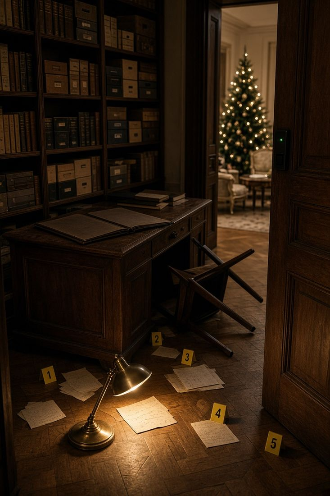

<title>Falkenrieds Handy</title>
<meta name="claude:viewport-fit-sides" content="cover">
<link rel="preconnect" href="https://fonts.googleapis.com">
<link rel="preconnect" href="https://fonts.gstatic.com" crossorigin>
<link rel="stylesheet" href="https://cdnjs.cloudflare.com/ajax/libs/leaflet/1.9.4/leaflet.min.css">
<link rel="stylesheet" href="https://fonts.googleapis.com/css2?family=Cormorant+Garamond:wght@300;500&family=Albert+Sans:wght@400;500;600;700&family=JetBrains+Mono:wght@400;500&display=swap">
<style>
/* Layout: ein Handy-Gehäuse, mittig auf dunklem Tisch; auf dem Telefon nahezu randlos. Bewusst nur ein dunkles Theme (Nachtszene). */
:root{
  --desk:#07090d;
  --night:#0d1119;
  --surface:#171c26;
  --surface-2:#212835;
  --line:#2c3443;
  --ink:#ece6da;
  --muted:#8d93a1;
  --amber:#e3a548;      /* Licht vom Christkindlmarkt */
  --amber-soft:#e3a54826;
  --accept:#4caf7a;
  --decline:#d9534f;
  --font-display:"Cormorant Garamond", "Iowan Old Style", Georgia, serif;
  --font-ui:"Albert Sans", system-ui, -apple-system, "Segoe UI", sans-serif;
  --font-mono:"JetBrains Mono", ui-monospace, "SFMono-Regular", Menlo, monospace;
  color-scheme:dark;
}
html,body{height:100%}
body{
  background:var(--desk);color:var(--ink);font-family:var(--font-ui);
  display:grid;place-items:center;
  padding-block:10px;
  padding-left:max(16px, env(safe-area-inset-left, 0px));
  padding-right:max(16px, env(safe-area-inset-right, 0px));
  box-sizing:border-box;overflow:hidden;
}
*{box-sizing:border-box}
button{font:inherit;color:inherit;background:none;border:0;cursor:pointer;padding:0}
button:focus-visible,input:focus-visible{outline:2px solid var(--amber);outline-offset:2px}

.phone{
  position:relative;width:100%;max-width:400px;height:min(100%, 840px);
  border-radius:40px;overflow:hidden;background:var(--night);
  box-shadow:0 0 0 1px #2a303c, 0 30px 80px #000c;
  isolation:isolate;
}
.wall{position:absolute;inset:0;z-index:0;
  background:linear-gradient(180deg,#0b1020d9 0%,#0b102059 35%,#0b102080 65%,#07090df2 100%),url("img/wallpaper.jpg") center 30%/cover no-repeat,#0b1020;
}
.screen{position:absolute;inset:0;z-index:1;display:flex;flex-direction:column}

/* Statusleiste */
.status{display:flex;justify-content:space-between;align-items:center;padding:14px 26px 6px;font-size:13px;font-weight:600;font-variant-numeric:tabular-nums;position:relative;z-index:30}
.status .icons{display:flex;gap:6px;align-items:center}
.status svg{width:16px;height:16px}

/* Sperrbildschirm */
.lock{align-items:center;text-align:center}
.lock .date{margin-top:28px;font-size:15px;color:var(--ink);opacity:.85}
.lock .clock{font-family:var(--font-display);font-weight:300;font-size:88px;line-height:1;letter-spacing:-1px;font-variant-numeric:tabular-nums}
.tag{margin:18px 20px 0;padding:12px 14px;border-radius:16px;background:#0d111ad9;border:1px solid var(--line);text-align:left;font-size:13px;line-height:1.45;backdrop-filter:blur(8px)}
.tag b{display:block;font-family:var(--font-mono);font-weight:500;font-size:11px;letter-spacing:.08em;text-transform:uppercase;color:var(--amber);margin-bottom:4px}
.dots{display:flex;gap:14px;justify-content:center;margin:auto 0 18px}
.dots i{width:12px;height:12px;border-radius:50%;border:1.5px solid var(--ink)}
.dots i.on{background:var(--ink)}
.dots.shake{animation:shake .35s}
@keyframes shake{25%{transform:translateX(-8px)}75%{transform:translateX(8px)}}
.pinhint{font-size:12px;color:var(--muted);margin-bottom:12px;min-height:16px}
.keypad{display:grid;grid-template-columns:repeat(3,72px);gap:14px 26px;justify-content:center;margin-bottom:36px}
.key{width:72px;height:72px;border-radius:50%;background:#ffffff14;font-size:28px;font-weight:400;display:grid;place-items:center;backdrop-filter:blur(6px)}
.key:active{background:#ffffff33}
.key.plain{background:none;font-size:14px}

/* Homescreen */
.grid{display:grid;grid-template-columns:repeat(4,1fr);gap:22px 10px;padding:26px 18px 0}
.app{display:flex;flex-direction:column;align-items:center;gap:6px;font-size:11.5px;position:relative}
.ico{width:60px;height:60px;border-radius:16px;display:grid;place-items:center;position:relative;box-shadow:inset 0 0 0 1px #ffffff14}
.ico svg{width:30px;height:30px;stroke:currentColor;fill:none;stroke-width:1.8;stroke-linecap:round;stroke-linejoin:round}
.app .lockbadge{position:absolute;right:-4px;top:-4px;width:20px;height:20px;border-radius:50%;background:var(--night);border:1px solid var(--line);display:grid;place-items:center}
.app .lockbadge svg{width:11px;height:11px;stroke:var(--ink);fill:none;stroke-width:2}
.app .badge{position:absolute;right:-5px;top:-5px;min-width:20px;height:20px;padding:0 5px;border-radius:10px;background:var(--decline);font-size:11px;font-weight:700;display:grid;place-items:center}
.app.locked .ico{filter:saturate(.35) brightness(.7)}
.dock{margin-top:auto;margin-inline:12px;margin-bottom:max(14px, env(safe-area-inset-bottom, 0px));padding:12px 10px;border-radius:28px;background:#ffffff12;backdrop-filter:blur(14px);display:grid;grid-template-columns:repeat(4,1fr)}
.dock .app > span:last-child{display:none}
.case{margin:18px 18px 0;font-family:var(--font-mono);font-size:10.5px;letter-spacing:.1em;text-transform:uppercase;color:var(--muted);display:flex;justify-content:space-between}

/* App-Fenster */
.win{position:absolute;inset:0;z-index:20;background:var(--night);display:flex;flex-direction:column;animation:rise .22s ease-out}
@keyframes rise{from{transform:translateY(24px);opacity:0}to{transform:none;opacity:1}}
.bar{display:flex;align-items:center;gap:10px;padding:4px 16px 10px}
.bar h1{font-size:28px;font-weight:700;margin:0;flex:1;text-wrap:balance}
.back{display:flex;align-items:center;gap:2px;color:var(--amber);font-size:15px;padding:6px 0}
.back svg{width:20px;height:20px;stroke:currentColor;fill:none;stroke-width:2.2}
.body{flex:1;overflow-y:auto;padding:0 16px 24px}
.home-ind{height:5px;width:120px;border-radius:3px;background:var(--ink);opacity:.6;margin:6px auto max(8px, env(safe-area-inset-bottom, 0px));cursor:pointer}
.seg{display:grid;grid-template-columns:1fr 1fr;background:var(--surface);border-radius:10px;padding:3px;margin-bottom:14px}
.seg button{padding:7px;border-radius:8px;font-size:13px;font-weight:600;color:var(--muted)}
.seg button.on{background:var(--surface-2);color:var(--ink)}
.row{display:flex;align-items:center;gap:12px;padding:12px 2px;border-bottom:1px solid var(--line);width:100%;text-align:left}
.row .av{width:42px;height:42px;border-radius:50%;background:var(--surface-2);display:grid;place-items:center;font-weight:700;font-size:14px;flex:none}
.row .main{flex:1;min-width:0}
.row .t{font-weight:600;font-size:15px;display:block}
.row .av svg{width:20px;height:20px;fill:none;stroke:currentColor;stroke-width:1.8;stroke-linecap:round;stroke-linejoin:round}
.row .s{display:block;font-size:13px;color:var(--muted);white-space:nowrap;overflow:hidden;text-overflow:ellipsis}
.row .meta{font-size:12px;color:var(--muted);font-variant-numeric:tabular-nums}
.row.missed .t{color:var(--decline)}
.empty{color:var(--muted);font-size:14px;line-height:1.5;padding:28px 6px;text-align:center}

/* Chat */
.chat{display:flex;flex-direction:column;gap:8px;padding-top:8px}
.bub{overflow-wrap:anywhere;max-width:82%;padding:10px 13px;border-radius:18px;font-size:15px;line-height:1.4;background:var(--surface-2);align-self:flex-start;border-bottom-left-radius:6px}
.bub.att{border:1px dashed var(--amber);background:var(--amber-soft)}
.bub .when{display:block;font-size:11px;color:var(--muted);margin-top:4px}
.sys{align-self:center;font-size:11px;color:var(--muted);font-family:var(--font-mono);letter-spacing:.05em}

/* Sheets */
.sheet-wrap{position:absolute;inset:0;z-index:40;padding-bottom:var(--kb,0px);background:#000a;display:flex;align-items:flex-end}
.sheet{width:100%;background:var(--surface);border-radius:24px 24px 0 0;padding:20px 20px max(24px, env(safe-area-inset-bottom, 0px));animation:rise .2s ease-out;max-height:85%;overflow-y:auto}
.sheet h2{margin:0 0 6px;font-size:20px}
.sheet p{margin:0 0 12px;color:var(--muted);line-height:1.5;font-size:14px}
.sheet .kind{font-family:var(--font-mono);font-size:11px;letter-spacing:.08em;text-transform:uppercase;color:var(--amber);margin-bottom:8px}
.btn{display:block;width:100%;padding:13px;border-radius:14px;background:var(--surface-2);font-weight:600;margin-top:8px}
.btn.primary{background:var(--amber);color:#1b1408}
.transcript{font-family:var(--font-mono);font-size:13px;line-height:1.6;color:var(--ink);background:var(--night);border-radius:12px;padding:12px;white-space:pre-wrap}
.field{width:100%;padding:12px;border-radius:12px;border:1px solid var(--line);background:var(--night);color:var(--ink);font:inherit;font-family:var(--font-mono)}

/* Ordner */
.folder{background:#121722f2;border-radius:30px;padding:20px;width:calc(100% - 40px);margin:auto;backdrop-filter:blur(20px);animation:rise .2s}
.folder h2{margin:0 0 16px;font-size:20px;text-align:center}
.folder .grid{padding:0;grid-template-columns:repeat(3,1fr)}

/* Verdächtige */
.card{background:var(--surface);border-radius:16px;padding:14px;display:grid;grid-template-columns:48px 1fr;gap:4px 12px;margin-bottom:10px;text-align:left;width:100%}
.card .av{grid-row:span 3;width:48px;height:48px;border-radius:12px;overflow:hidden;background:var(--surface-2);display:grid;place-items:center;font-family:var(--font-display);font-size:24px;font-weight:500}
.card .n{font-weight:700;font-size:16px}
.card .r{font-size:13px;color:var(--muted)}
.card .q{font-size:13.5px;line-height:1.45;margin-top:6px;grid-column:2}
.card .av img{width:100%;height:100%;object-fit:cover}
.sec{font-family:var(--font-mono);font-size:11px;letter-spacing:.1em;text-transform:uppercase;color:var(--muted);margin:16px 2px 8px}
.portrait{width:100%;aspect-ratio:4/5;object-fit:cover;object-position:50% 20%;border-radius:16px;display:block;margin-bottom:12px}
.scene img{display:block;width:100%;aspect-ratio:4/3;object-fit:cover;object-position:50% 72%}
.page .photo img{display:block;max-height:150mm;max-width:100%;margin:0 auto}
.card.struck .n{text-decoration:line-through;color:var(--muted)}
.card.struck .av{opacity:.4}

/* Hinweise */
.hint{background:var(--surface);border-radius:14px;padding:14px;margin-bottom:10px}
.hint h3{margin:0 0 4px;font-size:15px}
.hint p{margin:8px 0 0;font-size:14px;line-height:1.5}
.hint button{color:var(--amber);font-weight:600;font-size:14px;margin-top:6px}

/* Anruf */
.call{position:absolute;inset:0;z-index:60;display:flex;flex-direction:column;align-items:center;text-align:center;padding:60px 24px max(40px, env(safe-area-inset-bottom, 0px));
  background:radial-gradient(90% 60% at 50% 30%, #2a2433 0%, #0b0d13 70%);animation:rise .25s}
.call .who{font-size:32px;font-weight:600;margin-top:28px}
.call .sub{color:var(--muted);font-size:15px;margin-top:6px;font-variant-numeric:tabular-nums}
.ring{width:110px;height:110px;border-radius:50%;background:var(--surface-2);display:grid;place-items:center;position:relative;margin-top:36px}
.ring svg{width:46px;height:46px;stroke:var(--muted);fill:none;stroke-width:1.5}
.ring::before,.ring::after{content:"";position:absolute;inset:-10px;border-radius:50%;border:1px solid var(--amber);opacity:0;animation:pulse 2s infinite}
.ring::after{animation-delay:1s}
@keyframes pulse{0%{transform:scale(.9);opacity:.7}100%{transform:scale(1.6);opacity:0}}
.call .live{margin-top:26px;width:100%;flex:1;overflow-y:auto;text-align:left;font-family:var(--font-mono);font-size:14px;line-height:1.65;color:var(--ink)}
.call .live .dim{color:var(--muted)}
.callbtns{display:flex;justify-content:space-around;width:100%;margin-top:auto}
.cbtn{display:flex;flex-direction:column;align-items:center;gap:8px;font-size:13px}
.cbtn i{width:72px;height:72px;border-radius:50%;display:grid;place-items:center}
.cbtn svg{width:32px;height:32px;stroke:#fff;fill:none;stroke-width:2}
.cbtn.no i{background:var(--decline)}
.cbtn.yes i{background:var(--accept)}

/* Benachrichtigung */
.tnew rect:first-child{animation:tpulse 1.6s ease-in-out 3}
@keyframes tpulse{50%{stroke-width:4;filter:drop-shadow(0 0 6px #e3a548)}}
.attbtn{font:inherit;color:var(--amber);background:#ffffff10;border:1px solid #e3a54866;border-radius:10px;padding:8px 10px;text-align:left;cursor:pointer}
.farow{display:flex;flex-direction:column;align-items:flex-start;gap:2px;width:100%;text-align:left;padding:12px 14px;margin-bottom:8px;border-radius:14px;background:var(--surface);border:1px solid var(--line)}
.farow .fk{font-family:var(--font-mono);font-size:10.5px;letter-spacing:.08em;text-transform:uppercase;color:var(--muted)}
.farow .ft{font-weight:600;font-size:15px}.farow .fs{font-size:13px;color:var(--muted);line-height:1.4}
.neu{color:#1b1408;background:var(--amber);border-radius:6px;padding:1px 6px;font-size:9.5px;letter-spacing:.06em;margin-left:6px}
.tipbtn{font:inherit;color:var(--amber);background:#e3a54822;border-radius:8px;padding:2px 7px;letter-spacing:0;text-transform:none;font-size:12px}
.row3{display:grid;grid-template-columns:34px 1fr 1fr;gap:8px;padding:6px 4px;font-size:13px;border-bottom:1px solid var(--line)}
.wheels{display:grid;grid-template-columns:repeat(3,1fr);gap:10px;margin:12px 0}
.wheel{display:flex;flex-direction:column;align-items:center;gap:6px;background:var(--surface);border:1px solid var(--line);border-radius:14px;padding:10px 6px}
.wheel .wl{font-family:var(--font-mono);font-size:10px;letter-spacing:.06em;text-transform:uppercase;color:var(--muted);text-align:center;min-height:26px}
.wheel button{width:100%;padding:8px;border-radius:10px;background:var(--surface-2);color:var(--amber);font-size:16px}
.wheel .wv{font-family:var(--font-display);font-size:22px;font-weight:600;min-height:30px}
.stand{background:#efe7d6;color:#2a2620;border-radius:14px;padding:14px 16px;margin-bottom:12px}
.stand .sk{font-family:var(--font-mono);font-size:10.5px;letter-spacing:.1em;text-transform:uppercase;color:#7a6d55;margin-bottom:6px}
.stand ul{margin:0;padding-left:18px;font-size:14px;line-height:1.45}.stand li{margin-bottom:6px}
.stand .sq{margin-top:8px;padding-top:8px;border-top:1px dashed #b9ab8a;font-size:14px;color:#7c2f2f}
.invrow{display:block;width:100%;text-align:left;padding:7px 10px;margin-bottom:4px;border-radius:10px;background:var(--surface);border:1px solid var(--line);font-size:14px;line-height:1.35}
.invrow b{display:inline-block;min-width:24px;color:var(--amber);font-family:var(--font-mono)}
.invrow.pick.on{background:#e3a54833;border-color:var(--amber)}
.tll{margin:0 0 10px;padding-left:18px;font-size:14px;line-height:1.5;color:var(--ink)}.tll b{font-family:var(--font-mono);font-size:12px;color:var(--amber);margin-right:6px}
.glued{background:#fff;padding:6px 6px 16px;margin:10px auto;max-width:86%;box-shadow:0 2px 6px #0004;transform:rotate(-1.5deg)}
.glued:nth-of-type(2n){transform:rotate(1.8deg)}.glued .ph{display:block;min-height:90px;color:#666;font-family:var(--font-ui);font-size:12px}
.btn .ico svg{width:18px;height:18px;color:#fff}
.banner{position:absolute;left:10px;right:10px;top:44px;z-index:50;background:#1d2330f2;border:1px solid var(--line);border-radius:20px;padding:12px 14px;display:flex;gap:12px;align-items:center;text-align:left;backdrop-filter:blur(14px);animation:drop .3s ease-out}
@keyframes drop{from{transform:translateY(-30px);opacity:0}to{transform:none;opacity:1}}
.banner .ico{width:38px;height:38px;border-radius:10px;flex:none}
.banner .ico svg{width:20px;height:20px}
.banner b{display:block;font-size:14px}
.banner span{font-size:13px;color:var(--muted);display:block;white-space:nowrap;overflow:hidden;text-overflow:ellipsis}
.banner .main{min-width:0;flex:1}

/* Spielleitung */
.admin h2{display:flex;justify-content:space-between;align-items:center}
.admin .grid2,.grid2{display:grid;grid-template-columns:1fr 1fr;gap:8px}
.admin .btn{margin:0;font-size:13px}

/* Intro: Eilmeldung */
.intro{padding:6px 20px max(20px, env(safe-area-inset-bottom, 0px));overflow-y:auto;flex:1;display:flex;flex-direction:column;gap:14px}
.flash{font-family:var(--font-mono);font-size:11px;letter-spacing:.12em;text-transform:uppercase;color:#fff;background:var(--decline);align-self:flex-start;padding:4px 8px;border-radius:4px}
.intro h1{font-family:var(--font-display);font-weight:500;font-size:34px;line-height:1.05;margin:0;text-wrap:balance}
.intro .dateline{font-size:12px;color:var(--muted);font-family:var(--font-mono)}
.intro p{margin:0;font-size:15px;line-height:1.55;color:var(--ink)}
.scene{border-radius:14px;overflow:hidden;border:1px solid var(--line);background:#0a0c10}
.scene svg{display:block;width:100%;height:auto}
.scene figcaption{font-size:11.5px;color:var(--muted);padding:8px 10px;font-family:var(--font-mono)}

/* Druckvorlagen: Papier, bewusst hell */
:root{--paper:#ffffff;--paper-ink:#1b1b1d;--paper-desk:#d9d5cc;--paper-line:#c9c3b6;--paper-mute:#5d5a55;--paper-red:#9c1f1f}
.docs{position:fixed;inset:0;z-index:100;background:var(--paper-desk);color:var(--paper-ink);overflow-y:auto;
  padding-block:max(16px, env(safe-area-inset-top, 0px)) 40px;padding-left:max(16px, env(safe-area-inset-left, 0px));padding-right:max(16px, env(safe-area-inset-right, 0px));color-scheme:light}
.docs .tools{max-width:210mm;margin:0 auto 14px;display:flex;flex-wrap:wrap;gap:8px;align-items:center}
.docs .tools button{background:var(--paper-ink);color:var(--paper);padding:10px 16px;border-radius:10px;font-weight:600}
.docs .tools button.ghost{background:transparent;color:var(--paper-ink);border:1px solid var(--paper-ink)}
.docs .tools p{flex-basis:100%;margin:4px 0 0;font-size:13px;color:var(--paper-mute)}
.page{background:var(--paper);max-width:210mm;margin:0 auto 18px;padding:16mm 15mm;box-shadow:0 4px 24px #0002;font-family:"Albert Sans", Arial, sans-serif;font-size:11pt;line-height:1.5}
.page h2{font-family:var(--font-display);font-weight:500;font-size:26pt;line-height:1.05;margin:0 0 4mm}
.page h3{font-size:11pt;margin:6mm 0 2mm;text-transform:uppercase;letter-spacing:.06em}
.page .head{display:flex;justify-content:space-between;gap:12px;border-bottom:1.5pt solid var(--paper-ink);padding-bottom:3mm;margin-bottom:6mm;font-family:var(--font-mono);font-size:8.5pt;letter-spacing:.06em;text-transform:uppercase}
.page .say{border-left:2pt solid var(--paper-red);padding:2mm 0 2mm 5mm;font-family:var(--font-display);font-size:14pt;line-height:1.4;margin:3mm 0}
.page table{width:100%;border-collapse:collapse;font-size:10pt}
.page td{border-top:.5pt solid var(--paper-line);padding:1.6mm 2mm 1.6mm 0;vertical-align:top}
.page td:first-child{width:32%;color:var(--paper-mute)}
.page ol,.page ul{padding-left:5mm;margin:0}
.page li{margin-bottom:1.5mm}
.page .stamp{display:inline-block;border:1.5pt solid var(--paper-red);color:var(--paper-red);font-family:var(--font-mono);font-size:9pt;padding:1mm 3mm;transform:rotate(-3deg);letter-spacing:.1em}
.page .photo{margin-top:5mm;border:.5pt solid var(--paper-line);padding:2mm}
.page .photo svg{display:block;width:100%;height:auto}
.page .photo small{display:block;font-family:var(--font-mono);font-size:8pt;color:var(--paper-mute);margin-top:1.5mm}
.cards{display:grid;grid-template-columns:1fr 1fr;gap:0}
.acard{border:.75pt dashed var(--paper-mute);padding:6mm;min-height:62mm;display:flex;flex-direction:column;gap:2mm}
.acard .lbl{font-family:var(--font-mono);font-size:8pt;letter-spacing:.1em;text-transform:uppercase;color:var(--paper-red)}
.acard b{font-size:12pt}
.acard .qr{width:28mm;height:28mm;margin-top:auto;display:block}
.acard .code{font-family:var(--font-mono);font-size:10pt}
@media print{
  @page{size:A4;margin:0}
  html,body{height:auto;overflow:visible;background:#fff}
  body{display:block;padding:0;margin:0}
  .phone,.tools{display:none!important}
  .docs{position:static;background:#fff;padding:0;overflow:visible}
  .page{box-shadow:none;margin:0;max-width:none;width:210mm;height:296mm;overflow:hidden;padding:13mm 14mm;font-size:10.5pt;line-height:1.42;break-after:auto}
  .page + .page{break-before:page}
  .page .say{font-size:12.5pt}
  .page .photo svg{max-height:78mm;width:auto;margin:0 auto}
}

/* Auftrag */
.mission{margin:14px 14px 0;padding:14px;border-radius:18px;background:#0d111ae6;border:1px solid var(--line);backdrop-filter:blur(10px);display:flex;flex-direction:column;gap:8px}
.mission .k{font-family:var(--font-mono);font-size:10.5px;letter-spacing:.1em;text-transform:uppercase;color:var(--amber);display:flex;justify-content:space-between;gap:8px}
.mission .tx{font-size:14.5px;line-height:1.45}
.mission .clue{font-family:var(--font-display);font-size:19px;line-height:1.3;font-style:italic}
.mission .acts{display:flex;flex-wrap:wrap;gap:8px}
.mission .acts button{padding:8px 12px;border-radius:10px;background:var(--surface-2);font-size:13px;font-weight:600}
.mission .acts button.tip{margin-left:auto;background:#e3a5481f;color:var(--amber)}
.mission .acts button.go{background:var(--amber);color:#1b1408}
.mission .acts button.go.off{background:var(--surface-2);color:var(--muted)}
.mission .acts button:disabled{opacity:.6}
.mission .place{font-size:13px;color:var(--muted)}
/* Gesichtserkennung */
.faces{display:grid;grid-template-columns:1fr;gap:10px;margin:8px 0}
.faces button{border-radius:14px;overflow:hidden;border:2px solid transparent;background:var(--night);display:block}
.faces button img,.faces button .ph{display:block;width:100%;aspect-ratio:1408/768;object-fit:cover}
.faces button.wrong{border-color:var(--decline);animation:shake .35s}
.faces button.right{border-color:var(--accept)}
.ph{display:grid!important;place-items:center;background:#e9e3d6;color:#5d5a55;font-size:13px;text-align:center;padding:12px}
/* Notizbuch */
.nb{background:#efe7d6;color:#2a2620;border-radius:6px 14px 14px 6px;padding:18px 18px 18px 22px;margin-bottom:12px;box-shadow:inset 6px 0 0 #c9b98f;font-family:var(--font-display);font-size:18px;line-height:1.45}
.nb h3{margin:0 0 8px;font-family:var(--font-mono);font-size:10.5px;letter-spacing:.1em;text-transform:uppercase;color:#7a6d55}
.nb .red{color:#9c1f1f;font-style:italic;font-size:16px;display:block;margin-top:10px;transform:rotate(-1.5deg)}
.nb table{width:100%;border-collapse:collapse;font-family:var(--font-ui);font-size:14px}
.nb td{border-top:1px solid #d4c7a8;padding:5px 0;font-variant-numeric:tabular-nums}
.nb td:last-child{text-align:right}
/* Karte */
.mapwrap{position:relative;flex:1;min-height:260px;border-radius:16px;overflow:hidden;border:1px solid var(--line);background:var(--surface)}
#map{position:absolute;inset:0}
.mapfallback{position:absolute;inset:0;display:grid;place-items:center;text-align:center;padding:20px;color:var(--muted);font-size:13px;line-height:1.5}
.target{background:var(--surface);border-radius:16px;padding:12px 14px;margin-bottom:10px}
.target .t{font-weight:700;font-size:16px}
.target .s{font-size:13px;color:var(--muted);margin-top:2px}
.navbtns{display:grid;grid-template-columns:1fr 1fr;gap:8px;margin-top:10px}
.navbtns a{display:block;text-align:center;padding:11px;border-radius:12px;background:var(--amber);color:#1b1408;font-weight:700;text-decoration:none;font-size:14px}
.navbtns a.alt{background:var(--surface-2);color:var(--ink)}
.leaflet-container{background:#0d1119!important;font-family:var(--font-ui)}
.darktiles{filter:invert(1) hue-rotate(180deg) brightness(.85) contrast(.9) saturate(.6)}
.leaflet-control-attribution{font-size:10px!important}
.pinlbl{background:var(--amber);color:#1b1408;border-radius:999px;font-weight:700;font-size:12px;display:grid;place-items:center;border:2px solid #1b1408}
.pinlbl.done{background:var(--surface-2);color:var(--muted);border-color:var(--line)}
.me{width:16px;height:16px;border-radius:50%;background:#3d7be0;border:3px solid #fff;box-shadow:0 0 0 6px #3d7be044}
.body.flexcol{display:flex;flex-direction:column}
.fgrid{display:grid;grid-template-columns:repeat(10,1fr);gap:4px}
.fgrid button{aspect-ratio:3/4;border-radius:6px;background:var(--surface-2);font-size:12px;font-weight:600;font-variant-numeric:tabular-nums;border:2px solid transparent}
.fgrid button.right,.invtab button.right{border-color:var(--accept);background:#4caf7a33}
.fgrid button.wrong{border-color:var(--decline);animation:shake .35s}
.invtab{display:grid;gap:4px;margin-bottom:10px}
.invtab .ih,.invtab button{display:grid;grid-template-columns:34px 1fr 1fr;gap:8px;text-align:left;font-size:12.5px;padding:8px;border-radius:10px}
.invtab .ih{font-family:var(--font-mono);font-size:10.5px;letter-spacing:.08em;text-transform:uppercase;color:var(--muted)}
.invtab button{background:var(--surface);border:2px solid transparent}
.invtab button.on{border-color:var(--amber);background:var(--amber-soft)}
.letter{font-size:17px;line-height:1.7}
.letter button{display:inline;text-align:left;border-radius:4px;padding:1px 2px;border-bottom:1px dashed #b7a77f}
.letter button.on{background:#e3a54866}
.letter button.right{background:#4caf7a55}
.letter button.wrong{background:#d9534f44;animation:shake .35s}
.acts2{display:flex;gap:8px;margin-top:8px}
.recmini{margin-top:8px;color:var(--amber);font-weight:600;font-size:13px}
.acts2 button{flex:1;padding:8px;border-radius:10px;background:var(--surface-2);font-size:13px;font-weight:600}
.acts2 button.on{background:var(--amber);color:#1b1408}
.pick{display:block;width:100%;text-align:left;padding:10px 12px;border-radius:12px;background:var(--surface);margin-bottom:6px;font-size:14px;border:2px solid transparent}
.pick.on{border-color:var(--amber);background:var(--amber-soft)}
.abc{display:grid;grid-template-columns:repeat(13,1fr);gap:3px;margin:4px 0 12px;font-family:var(--font-mono);font-size:12px;text-align:center}
.abc span{background:var(--surface);border-radius:4px;padding:4px 0}
.prot{width:100%;border-collapse:collapse;font-size:13px}
.prot td{padding:5px 4px;border-top:1px solid var(--line);vertical-align:top;font-variant-numeric:tabular-nums}
.prot td:first-child{white-space:nowrap;color:var(--amber);font-family:var(--font-mono);font-size:12px}
.installbtn{display:flex;gap:8px;align-items:center;justify-content:center}

.diary{display:flex;flex-direction:column;gap:10px}
.dpage{background:#efe7d6;color:#2a2620;border-radius:4px 14px 14px 4px;padding:18px 18px 12px 26px;min-height:360px;display:flex;flex-direction:column;
  box-shadow:inset 7px 0 0 #c9b98f, 0 6px 20px #0006;background-image:repeating-linear-gradient(transparent 0 27px,#d9ccae 27px 28px);background-position:0 46px}
.dpage.inR{animation:inR .25s ease-out}.dpage.inL{animation:inL .25s ease-out}
@keyframes inR{from{transform:translateX(30px);opacity:0}to{transform:none;opacity:1}}
@keyframes inL{from{transform:translateX(-30px);opacity:0}to{transform:none;opacity:1}}
.ddate{font-family:var(--font-mono);font-size:11px;letter-spacing:.08em;text-transform:uppercase;color:#7a6d55;margin-bottom:10px}
.dtext{font-family:var(--font-display);font-size:19px;line-height:28px;flex:1}
.dtext .red{color:#9c1f1f;font-style:italic;display:block;margin-top:10px;font-size:17px}
.dtext table{width:100%;border-collapse:collapse;font-family:var(--font-ui);font-size:14px;line-height:1.4}
.dtext td{border-top:1px solid #d4c7a8;padding:3px 0;font-variant-numeric:tabular-nums}.dtext td:last-child{text-align:right}
.dfoot{font-family:var(--font-mono);font-size:10px;color:#9a8c70;text-align:right;margin-top:8px}
.dnav{display:flex;align-items:center;justify-content:space-between;gap:8px}
.dnav button{padding:10px 14px;border-radius:12px;background:var(--surface-2);font-weight:600;font-size:14px}
.dnav button:disabled{opacity:.35}
.ddots{display:flex;gap:5px;flex-wrap:wrap;justify-content:center}.ddots i{width:6px;height:6px;border-radius:50%;background:var(--line)}.ddots i.on{background:var(--amber)}
@media (prefers-reduced-motion: reduce){*{animation:none!important}}
</style>

<div class="phone" id="phone">
  <div class="wall" aria-hidden="true"></div>
  <div class="screen" id="screen"></div>
  <div id="layer"></div>
</div>

<script src="https://cdnjs.cloudflare.com/ajax/libs/leaflet/1.9.4/leaflet.min.js"></script>
<script src="https://cdn.jsdelivr.net/npm/@supabase/supabase-js@2.45.4/dist/umd/supabase.js"></script>
<script>
/* ============================================================
   INHALT – später in eigene JSON-Dateien auslagern
   ============================================================ */
const CONTENT = {
  pin: "1475",
  adminPin: "1432",
  caseNo: "Asservat 1475/26",
  calls: {
    CALL_06: { from:"Unbekannt", voice:"unbekannt",
      text:"Ihr seid gut. Aber ihr schaut auf die Falschen. Clara Weiß, die Kunsthändlerin, lügt, glaubt mir. Und Notar Mair war achtzehn Minuten weg. Um 20:48 ging die Archivtür auf, mit der Karte R7." },
    CALL_07: { from:"Unbekannt", voice:"unbekannt",
      text:"Ihr seid sehr nah dran. Notar Mair wird euch gleich etwas geben. Öffnet es nicht. Bringt es auf die Ringelstecherwiese, ich kümmere mich um den Rest." },
    CALL_01: {
      from: "Unbekannt", voice: "unbekannt",
      text: "Sie sind also gekommen. Falkenried hat gehofft, dass jemand die Zeichen versteht. Fangen Sie bei seinem Notizbuch an. Er hat es mit einer Zahl verschlossen, die hier über Ihnen in den Himmel ragt. Darin finden Sie die Rechnung für ein Fest, das eine ganze Stadt satt machte. Und dann fragen Sie sich: Wer hat die Zeche wirklich bezahlt?"
    }
  },
  messages: {
    N01: { thread: "unbekannt", text: "Ihr habt den Vater gefunden. Schön. Fragt euch lieber, wo Notar Mair am Tatabend war. Achtzehn Minuten sind eine lange Zeit für ein Telefonat." },
    N02: { thread: "unbekannt", text: "Drei Kisten, verschwunden im Winter 1503. Ich habe euch einen Brief aus jenem Winter angehängt. Er sagt, wo sie lagerten. Dreht euch um.", attachment: "Brief_1503.pdf" },
    N03: { thread: "unbekannt", text: "Ein falscher Brief? Dann hat jemand im Archiv gepfuscht. Notar Mair hatte die Datei offen. Nur so als Hinweis." },
    N06: { thread: "unbekannt", text: "Ihr habt sie. Öffnet sie nicht. Ich hole sie gleich ab." }
  },
  suspects: [
    { id:"helena", photo:"img/helena.jpg", name:"Dr. Helena Dorn", age:47, role:"Historikerin, betreute Falkenrieds Archiv", note:"Leitete 2025 die Digitalisierung des Archivs, einschließlich neuer Zutrittstechnik.", says:"„Ich bin um halb neun gegangen. Kopfschmerzen.“" },
    { id:"mair", photo:"img/mair.jpg", name:"Benedikt Mair", age:55, role:"Notar", note:"Kennt Falkenrieds Testament.", says:"„Ich habe kurz telefoniert, draußen. Mehr nicht.“" },
    { id:"tobias", photo:"img/tobias.jpg", name:"Tobias von Falkenried", age:31, role:"Neffe", note:"Hat Schulden. Galt als möglicher Erbe.", says:"„Ja, wir haben gestritten. Laut.“" },
    { id:"clara", photo:"img/clara.jpg", name:"Clara Weiß", age:43, role:"Kunsthändlerin", note:"Hatte Interesse an Stücken aus der Sammlung.", says:"„Ich saß den ganzen Abend bei den anderen am Tisch.“" },
    { id:"feld", photo:"img/feld.jpg", name:"Jonas Feld", age:39, role:"Externer Restaurator, Besitzer der Karte R7", note:"War am Abend nicht als Gast im Haus. Mit seiner Zutrittskarte R7 wurde um 20:48 die Archivtür geöffnet.", says:"„Die Karte ist mir vor einer Woche abhandengekommen.“" }
  ],
  victim: { photo:"img/falkenried.jpg", name:"Maximilian von Falkenried", age:62, role:"Kunstsammler, Gastgeber des Adventsdinners", note:"Am 19. Dezember um 21:25 Uhr tot in seinem Archiv aufgefunden." },
  lead: { photo:"img/seidl.jpg", name:"Martina Seidl", age:52, role:"Kriminalhauptkommissarin, Ermittlungsleiterin", note:"Leitet die Ermittlung im Fall Falkenried. Sie meldet sich per Sprachnachricht und hat euch Falkenrieds Handy übergeben." },
  witness: { photo:"img/rosa.jpg", name:"Rosa Brandl", age:58, role:"Haushälterin", note:"War den ganzen Abend im Haus. Ihre Aussage liegt noch nicht vor." },
  hints: {
    S1: { title:"St. Martin – Der Turm", steps:[
      "Stellt euch an den Fuß des Turms und schaut hoch. Ein Stockwerk eines Wohnhauses ist etwa 3 Meter hoch.",
      "Er ist der höchste Backsteinturm der Welt und deutlich höher als 100 Meter.",
      "130 Meter." ] },
    S2: { title:"Landschaftshaus – Falkenrieds Fotos", steps:[
      "Die Wand ist wie ein Buch: drei Reihen mit je zehn Herzögen, von links oben nach rechts unten.",
      "Den Adler findet ihr bei den Füßen, nicht bei den Köpfen. Mittlere Reihe, ganz rechts. Der Kaiser sitzt als Einziger, obere Reihe.",
      "Bezahlt hat der Vater: mittlere Reihe, Platz 9, links neben Georg." ] },
    S3: { title:"Denkmal – Das Jahr auf dem Rücken", steps:[
      "Geht um den Sockel herum.",
      "M = 1000, D = 500, C = 100, L = 50, V = 5, I = 1.",
      "MDCCCLVIII = 1858." ] },
    S4: { title:"Rathaus – Wappenschloss und Listen", steps:[
      "Schaut hoch zur Rathausuhr. Darüber hängt das Stadtwappen. Zählt, was darauf ist, und achtet auf die Farbe.",
      "Denkt an Falkenrieds Fassadennotiz: Der Kaiser schenkte der Stadt drei … für ihr Wappen. Danach die Listen Zeile für Zeile vergleichen.",
      "Schloss: 3 · Helm · Rot. Listen: Es fehlen die Nummern 3, 8 und 11. Achtung, die Silberschale und das Siegel von 1503 sind andere Stücke." ] },
    S5: { title:"Stadtresidenz – Der Brief", steps:[
      "Sucht im Brief eine Beschreibung, die ihr an der Fassade vor euch seht.",
      "Diese Fassade ist viel jünger als der Bau dahinter. Und was wisst ihr seit dem Landschaftshaus über diesen Bau?",
      "Heftet die Notiz „Erst 1536 begann er seine Residenz“ an." ] },
    S6: { title:"Heiliggeist – Rundgang und Tatabend", steps:[
      "Lasst den Ordner offen und geht einmal ganz um die Kirche. Drei der vier Seiten reichen. Bei ungenauem GPS kurz stehen bleiben.",
      "Vergleicht jede Aussage mit den Protokollen. Wann fuhr der Wagen von Dr. Helena Dorn weg? Von wo bestellte Clara Weiß ihr Taxi?",
      "Nach dem Anruf fragt Seidl nach der Karte R7: Jonas Feld war in Regensburg, also wurde nur seine Karte benutzt." ] },
    S7: { title:"Ländtor – Der Ritter", steps:[
      "Spielt in der Mail die Sage vom Ritter ab und zählt die Glockenschläge am Ende.",
      "Sieben Schläge: Jeden Buchstaben sieben Stellen im Alphabet zurück. H wird A, I wird B.",
      "Die Nachricht lautet ABHOLUNG." ] },
    S8: { title:"Finale – Die Anklage", steps:[
      "Wer war um 20:48 nachweislich nicht woanders?",
      "Seidls Fragen: Der Wagen fuhr erst 21:02. Die Datei wurde unter HDORN erstellt. Der Abholauftrag nennt „HD“ als Anbieterin.",
      "Der Name für das Schloss: Wem hatte Georg sein Erbe vermacht? Nicht der Braut." ] }
  },
  locks: {
    notizen: { kind:"Zahlenschloss", text:"Falkenrieds Notizbuch ist gesperrt. Ein Zettel klebt daran: „Mein Buch öffnet sich mit der Höhe dieses Turms, in Metern.“" },
    fotos:   { kind:"Keine Bilder", text:"Die Galerie ist leer. Falkenrieds Fotos erscheinen, sobald ihr am richtigen Ort seid." },
    archiv:  { kind:"Passwort", text:"Falkenrieds Archiv ist mit einem Passwort gesichert. Noch habt ihr keine Spur dorthin." },
    mail:    { kind:"Verschlüsselt", text:"Ein Postfach mit einer einzigen ungelesenen Nachricht. Ihr Inhalt ist verschlüsselt." },
    tresor:  { kind:"Name", text:"Eine Verbindung zu einer Kassette. Das Schloss verlangt einen Namen." }
  },
  /* Stationen. phase "go" = unterwegs (Hinweis), "task" = vor Ort (Aufgabe). */
  stations: [
    { id:1, name:"St. Martin", spot:"Vor dem Turm von St. Martin", lat:48.534237, lng:12.151014,
      clue:null,
      task:"Falkenrieds Notizbuch hat ein Zahlenschloss. Ein Zettel von ihm klebt daran und erklärt, warum. Öffnet die Notizen und lest ihn.",
      action:"Notizen öffnen" },
    { id:2, name:"Landschaftshaus", spot:"Altstadt 28, die bemalte Fassade", lat:48.533888, lng:12.150226, revealMin:3,
      src:"Falkenrieds Tagebuch, Eintrag vom 18. Dezember", clue:"Bezahlt hat nicht der Bräutigam. Wer es war, das steht an einer Wand in der Altstadt, Hausnummer 28. Die ganze Familie, drei Mann hoch und zehn Mann breit.",
      task:"In Falkenrieds Notizbuch kleben drei Fotos von dieser Wand, ganz nah, ohne Zusammenhang. Findet heraus, was er fotografiert hat und warum.",
      action:"Eingeklebte Fotos ansehen" },
    { id:3, name:"Denkmal Ludwigs des Reichen", spot:"Dreifaltigkeitsplatz", lat:48.532417, lng:12.149794,
      src:"Falkenrieds Notizen zur Fassade", clue:"Er steht noch einmal in dieser Stadt, aus Bronze, dort, wo die Dreifaltigkeit wacht.",
      task:"Falkenrieds Archiv ist mit dem Jahr gesichert, in dem ihm die Stadt dieses Denkmal setzte. Seine Passwort-Notiz: „Es steht auf seinem Rücken. In der Schrift der Römer.“",
      action:"Archiv öffnen" },
    { id:4, name:"Rathaus", spot:"Altstadt 315", lat:48.536228, lng:12.152024,
      src:"Falkenrieds Sprachmemo, aufgenommen am 16. Oktober", clue:"Was in den drei Kisten war, steht in zwei Listen in meiner Mappe. Ihr Schloss stellt ihr dort ein, wo die Bürger dieser Stadt seit Jahrhunderten ihren Rat halten. Nicht oben auf der Burg, sondern unten in der Altstadt.",
      task:"Im Archiv liegt Falkenrieds Mappe. Sie hat ein Wappenschloss mit drei Rädern. Die richtige Einstellung hängt über der Rathausuhr.",
      action:"Mappe öffnen" },
    { id:5, name:"Stadtresidenz", spot:"Altstadt, gegenüber dem Rathaus", lat:48.536103, lng:12.151237,
      src:"Nachricht von Unbekannt", clue:"Ich habe euch einen Brief aus jenem Winter angehängt. Er sagt, wo die Kisten lagerten. Dreht euch um.",
      task:"Unbekannt behauptet, dieser Brief stamme aus dem Winter 1503. Vergleicht ihn mit dem Gebäude vor euch.",
      action:"Brief öffnen" },
    { id:6, name:"Heiliggeistkirche", spot:"Einmal rund um die Kirche", lat:48.538667, lng:12.152562,
      src:"Ermittlungsleiterin Seidl", clue:"Wer kam am Abend an die Archivtür? Falkenrieds Zutrittsdaten liegen in einem gesperrten Ordner. Er öffnet sich nur an der Kirche, deren Bau unter Heinrich dem Reichen begann. Falkenrieds Notizen zur Fassade nennen sie.",
      task:"Falkenrieds Ordner Haustechnik öffnet sich nur, wenn ihr einmal um die Heiliggeistkirche herumgeht. Öffnet den Ordner und lauft los, das Handy zählt mit.",
      action:"Ordner öffnen" },
    { id:7, name:"Ländtor", spot:"Wappen über dem Torbogen", lat:48.535305, lng:12.149236,
      src:"Aussage der Zeugin Rosa Brandl", clue:"Später hörte ich am Telefon, der Wagen sollte die Stadt durch das Tor verlassen, über dem die drei Helme hängen.",
      task:"Die Kripo hat auf Falkenrieds Archiv-Server eine verschlüsselte Kuriernachricht vom Tatabend gefunden und in sein Postfach gelegt. Wie weit die Buchstaben verschoben sind, verrät Falkenrieds Aufnahme der Sage vom Ritter am Ländtor.",
      action:"Postfach öffnen" },
    { id:8, name:"Ringelstecherwiese", spot:"Treffpunkt am Christkindlmarkt", lat:48.532814, lng:12.146553,
      src:"Abholauftrag vom Tatabend", clue:"Übergabe: Ringelstecherwiese, sobald die Ware greifbar ist.",
      task:"Ermittlungsleiterin Seidl wartet auf der Wiese, Notar Mair mit Falkenrieds Kassette. Mair gibt sie erst heraus, wenn ihr Seidl sagt, wer es war, und es beweisen könnt.",
      action:"Anklage erheben" }
  ],
  evidence: {
    E01:{ t:"Hochzeitsrechnung 1475", d:"Abschrift aus Falkenrieds Manteltasche. Vermerk: Bezahlt hat nicht der Bräutigam." },
    E03:{ t:"Notizen zur Fassade", d:"Der Kaiser gab Landshut drei Helme ins Wappen. Ludwig X. begann seine Residenz erst 1536. Unter Heinrich dem Reichen begann 1407 der Bau der Heiliggeistkirche." },
    E05:{ t:"Inventarvergleich", d:"In der Liste von 1503 fehlen die Nummern 3, 8 und 11: Rubinbrosche, zwölf Silberschalen, Doppelsiegel. Falkenried notierte daneben: „Hochzeitsgaben, Kiste A, B, C“." },
    E06:{ t:"Verwahrvermerk Notariat Mair", d:"„Notariat Mair – Verwahrung“. Inhalt geschwärzt." },
    E07:{ t:"Preisnotizen „CW“", d:"Bleistift am Rand von H-1475: „CW: 40.000?“" },
    E08:{ t:"Brief „1503“ – gefälscht", d:"Beschreibt die heutige Fassade und eine Residenz, die erst ab 1536 gebaut wurde. Zweck laut Seidl: eine falsche Herkunft, damit die Stücke für einen Käufer echt und wertvoll aussehen." },
    E09:{ t:"Dateiprotokoll", d:"LETTER-1503-B erstellt unter HDORN (Dr. Helena Dorn) am 18.12., 23:14 Uhr. Geöffnet unter BMAIR (Notar Mair) am 19.12., 10:02 Uhr." },
    E10:{ t:"Widersprüche der Aussagen", d:"Dr. Helena Dorn sagt, sie sei um halb neun gegangen. Ihr Wagen fuhr um 21:02. Clara Weiß sagt, sie habe den ganzen Abend bei den anderen am Tisch gesessen. Ihr Taxi bestellte sie aus dem Flur." },
    E11:{ t:"Zeugin: Frau an der Archivtür", d:"Rosa Brandl hörte kurz vor neun Schritte im Flur und sah eine Frau im dunklen Mantel zum Archiv gehen. Dann klickte die Archivtür." },
    E12:{ t:"Karte R7", d:"Öffnete um 20:48 die Archivtür. Gehört Restaurator Jonas Feld, der nachweislich in Regensburg war. Beweist nur, welche Karte benutzt wurde." },
    E13:{ t:"Täterwissen im Anruf", d:"Der Anrufer nannte Uhrzeit und Karte, bevor das Protokoll freigegeben war." },
    E14:{ t:"Abholauftrag 19:30", d:"Drei Stücke aus der Falkenried-Sammlung. Anbieter HD, Käufer CW-04. Übergabe Ringelstecherwiese. Versendet vor der Tat." },
    E15:{ t:"Handyauswertung Clara Weiß", d:"Clara telefonierte von 20:44 bis 20:50 mit dem Käufer CW-04." }
  },
  voice: {
    V_ERBE:{ from:"Falkenried", memo:"im Archiv gespeichert, aufgenommen am 16. Oktober 2026", title:"Die Familie", text:"Wenn ihr das hört, steht ihr vor Ludwig dem Reichen. Lasst mich euch seine Familie erzählen, denn um sie geht es in allem, was ich gefunden habe. Ludwigs Vater war Heinrich, der erste der drei Reichen Herzöge von Landshut. In seiner Zeit begann der Bau von Heiliggeist, und er hinterließ seinem Sohn eine volle Schatzkammer. Ludwig machte daraus das prächtigste Fest, das diese Stadt je gesehen hat. 1475 heiratete sein Sohn Georg in Sankt Martin Hedwig, die Tochter des polnischen Königs. Tausende Gäste kamen, Ritter aus halb Europa, und Ludwig hat alles bezahlt. Georg und Hedwig bekamen Kinder, doch ihre Söhne starben früh. Am Ende blieben zwei Töchter. Und genau das wurde zum Problem. Nach den Hausverträgen der Wittelsbacher durfte das Land nur an Männer der Familie fallen. Georg setzte trotzdem seine Tochter Elisabeth als Erbin ein, sie und ihren Mann, Ruprecht von der Pfalz. Am ersten Dezember 1503 starb Georg in Ingolstadt. In München las sein Vetter, Herzog Albrecht, das Testament, und er lachte nicht. Was folgte, war kein Streit mehr. Es war der Landshuter Erbfolgekrieg. Dörfer brannten in ganz Niederbayern. Der König stellte sich auf Albrechts Seite und ließ sich das gut bezahlen. Im Sommer 1504 starb Ruprecht, wenige Wochen später auch Elisabeth. Sie hinterließen vier kleine Söhne in einem Land voller Feinde. Die Zwillinge Georg und Ruprecht starben noch im selben Jahr, so steht es jedenfalls in den Büchern. Ich habe angefangen, daran zu zweifeln. 1505 tagte der Reichstag in Köln, und der König entschied. Landshut ging an Albrecht nach München. Für die beiden anderen, Ottheinrich und Philipp, schuf man ein kleines neues Land an der Donau, mit der Hauptstadt Neuburg. Aber in den Wintertagen nach Georgs Tod, als noch niemand wusste, wer gewinnen würde, hat jemand drei Kisten aus der Stadt gebracht. Was in ihnen war, steht in zwei Listen in meiner Mappe. Ihr Schloss stellt ihr dort ein, wo die Bürger dieser Stadt seit Jahrhunderten ihren Rat halten. Nicht oben auf der Burg, sondern unten in der Altstadt." },
    V_RESIDENZ:{ from:"Ermittlungsleiterin Seidl", photo:"img/seidl_av.jpg", title:"Die Archivtür", text:"Hier Seidl. Gute Arbeit, der Brief ist eine Fälschung. Ich glaube, ich weiß auch, wozu: Wer alte Stücke verkaufen will, braucht eine Herkunft. Ein Brief aus der Herzogsresidenz macht aus drei Kisten einen Schatz, den ein Sammler teuer bezahlt. Jetzt die entscheidende Frage: Wer kam am Abend an die Archivtür? Falkenrieds Haustechnik speichert jeden Zutritt in einem Ordner auf seinem Handy. Er hat ihn im Herbst gesperrt. Wo er sich öffnet, steht in Falkenrieds Notizen zur Fassade." },
    V_TURM:{ from:"Falkenried", memo:"im Ordner Haustechnik gespeichert, aufgenommen am 9. November 2026", title:"Der Turm", text:"Sie wollten hier einen Turm, höher als Sankt Martin. Das Geld reichte nicht. Manche wollen eben mehr, als ihnen zusteht." },
    V_ZEUGIN:{ from:"Rosa Brandl", title:"Aussage der Zeugin", text:"Kurz vor neun hörte ich Schritte im Flur. Eine Frau im dunklen Mantel ging zum Archiv. Dann klickte die Archivtür. Ich dachte mir nichts dabei. Später hörte ich am Telefon, der Wagen sollte die Stadt durch das Tor verlassen, über dem die drei Helme hängen." },
    V_MAIR:{ from:"Benedikt Mair", title:"Der Notar", text:"Ja, ich habe geschwiegen. Herr von Falkenried hat mir eine Kassette anvertraut und mich zur Verschwiegenheit verpflichtet. Am Tatabend habe ich mit der Verwahrstelle telefoniert, wegen der Übergabe an die Stadt. Die Datei habe ich geöffnet, weil ich prüfen wollte, was Frau Dorn ihm da vorgelegt hatte. Die Kassette und seine letzte Nachricht gebe ich nur Ermittlern." },
    V_FINALE:{ from:"Falkenried", memo:"bei Notar Mair hinterlegt, aufgenommen am 13. Dezember 2026", title:"Letzte Nachricht", text:"Wenn ihr das hört, ist mir etwas zugestoßen. Dann hat jemand versucht, meine Geschichte zu Geld zu machen. Ich wollte nichts verkaufen. Im Kriegsjahr 1504 hieß es, Elisabeths kleiner Sohn Georg sei gestorben, wie sein Zwillingsbruder Ruprecht. Es war gelogen. Derselbe treue Mann, der im Winter davor die drei Kisten aus der Stadt gebracht hatte, holte auch den Jungen heraus. Die Kisten waren sein Erbe. Man hat Elisabeth das Land genommen, den Mann und das Leben. Aber ihren Sohn haben sie nicht bekommen. Ich glaube, dass ich von diesem Georg abstamme. Vielleicht irre ich mich. Aber das, was er mitnahm, gehört zurück nach Landshut. Das Schloss kennt nur einen Namen: den der Frau, der all das gehören sollte. Und gebt es niemandem, der sich nicht zeigt." }
  },
  /* Falkenrieds Tagebuch. req: erscheint erst, wenn diese Notiz freigeschaltet ist. start: hier schlägt das Buch beim ersten Öffnen auf. */
  diary: [
    { date:"Sonntag, 2. November 2026", html:"Neuburg an der Donau, Kirchenbücher. Zwei Tage zwischen Staub und Latein. Im Jahr 1504 ein Eintrag, der nicht zu den anderen passt: ein Kindername, durchgestrichen, daneben eine andere Hand.<br><br>Und heute habe ich gefunden, wonach ich seit Jahren suche.<span class=\"red\">Bester Tag meines Lebens. Mehr schreibe ich nicht, nicht einmal hier.</span>" },
    { date:"Freitag, 28. November 2026", html:"Jemand war an meinem Schreibtisch. Die Mappe lag anders, als ich sie hingelegt hatte, und im Archivprogramm war eine Datei geöffnet, die ich seit Wochen nicht angefasst habe.<br><br>Wer hat einen Schlüssel? Zu viele." },
    { date:"Mittwoch, 10. Dezember 2026", req:"fassade", html:"Lange vor dem Haus der Landstände gestanden. Drei Reihen, dreißig Herzöge. Meine Fotos:<div class=\"glued\"><span class=\"ph\">Foto 1: weißer Adler unter einer Krone</span></div><div class=\"glued\"><span class=\"ph\">Foto 2: Hand mit Reichsapfel</span></div><div class=\"glued\"><span class=\"ph\">Foto 3: Detail einer Figur in der unteren Reihe</span></div>" },
    { date:"Freitag, 12. Dezember 2026", html:"Tobias war wieder da. Mein Neffe hat wieder nach Geld gefragt.<span class=\"red\">Nein.</span>" },
    { date:"Donnerstag, 18. Dezember 2026", start:true, html:"Für den, der das hier liest.<br><br>In Sankt Martin hat Georg 1475 seine Hedwig geheiratet. Hier meine Abschrift der Hochzeitsrechnung:<table style=\"margin-top:8px\"><tr><td>Ochsen</td><td>323</td></tr><tr><td>Schweine</td><td>285</td></tr><tr><td>Ungarische Schafe</td><td>1.133</td></tr><tr><td>Gänse</td><td>11.500</td></tr><tr><td>Hühner</td><td>40.000</td></tr><tr><td>Eier</td><td>194.345</td></tr></table><span class=\"red\">Bezahlt hat nicht der Bräutigam.</span><br>Wer es war, das steht an einer Wand in der Altstadt, Hausnummer 28. Die ganze Familie, drei Mann hoch und zehn Mann breit." },
    { date:"Samstag, 19. Dezember 2026, morgens", html:"Heute Abend sage ich es allen. Die Gäste kommen um sieben. Nach dem Dessert.<br><br>Es gehört nicht mir. Es gehört dieser Stadt.<span class=\"red\">Und wenn mir etwas zustößt: Notar Mair weiß, was zu tun ist.</span>" }
  ]
};

/* ============================================================
   ZUSTAND – Prototyp: pro Gerät im Browser.
   Später: gemeinsamer Spielstand über Supabase für alle Handys im Team.
   ============================================================ */
/* Team: über ?team=… in der Adresse, sonst "haupt". Alle Handys mit derselben Adresse spielen gemeinsam. */
const TEAM = ((new URLSearchParams(location.search).get("team") || "haupt").toLowerCase().replace(/[^a-z0-9-]/g, "").slice(0, 30)) || "haupt";
const KEY = "falkenried-v2-" + TEAM;
/* Gemeinsam für alle Handys des Teams */
const SHARED = ["stage","phase","revealed","apps","evidence","voicemails","notes","st","ending","struck","hintsOpen","events","locks","devices","solvedBy","rev","resetAt","goAt","acks","mustSee","startedAt"];
const fresh = () => ({ stage:1, phase:"task", revealed:{}, apps:[], evidence:[], voicemails:[], notes:[], st:{}, ending:null, struck:[], hintsOpen:{},
  events:[], locks:{}, devices:{}, solvedBy:null, rev:0, resetAt:0, goAt:{}, acks:{}, mustSee:[],
  /* nur auf diesem Handy */
  introSeen:false, unlocked:false, calls:[], threads:{ unbekannt:[] }, fired:[], unread:0, missed:0, seen:[] });
/* Dieses Gerät */
let DEV = { id:"", name:"" };
try { DEV = JSON.parse(localStorage.getItem("falkenried-dev") || "null") || DEV; } catch(e) {}
if (!DEV.id) DEV.id = Math.random().toString(36).slice(2, 10);
const saveDev = () => { try { localStorage.setItem("falkenried-dev", JSON.stringify(DEV)); } catch(e) {} };
saveDev();
let S = fresh();
try { const raw = localStorage.getItem(KEY); if (raw) S = Object.assign(fresh(), JSON.parse(raw)); } catch(e) {}
let PUZZLE_2, PUZZLE_3, PUZZLE_4, PUZZLE_5, PUZZLE_6, PUZZLE_7, PUZZLE_8;
const PUZZLE = { 1:() => openFaceLock(), 2:() => PUZZLE_2(), 3:() => PUZZLE_3(), 4:() => PUZZLE_4(), 5:() => PUZZLE_5(), 6:() => PUZZLE_6(), 7:() => PUZZLE_7(), 8:() => PUZZLE_8() };
const AFTER_CALL = {};
const APP_VIEW = { notizen:() => openNotebook(), tresor:() => (S.ending ? showEnding() : tresor()) };
const localSave = () => { try { localStorage.setItem(KEY, JSON.stringify(S)); } catch(e) {} };
const save = () => { localSave(); schedulePush(); };

/* ============================================================
   Hilfen
   ============================================================ */
const $ = s => document.querySelector(s);
const screen = $("#screen"), layer = $("#layer");
const esc = t => String(t).replace(/[&<>"]/g, c => ({ "&":"&amp;","<":"&lt;",">":"&gt;",'"':"&quot;" }[c]));
const nowStr = () => new Date().toLocaleTimeString("de-DE",{hour:"2-digit",minute:"2-digit"});

const IC = {
  phone:'<path d="M5 4h4l2 5-2.5 1.5a11 11 0 0 0 5 5L15 13l5 2v4a2 2 0 0 1-2 2A16 16 0 0 1 3 6a2 2 0 0 1 2-2"/>',
  msg:'<path d="M21 12a8 8 0 0 1-11.6 7.1L4 20l1-4.4A8 8 0 1 1 21 12z"/>',
  notes:'<path d="M6 3h10l3 3v15H6z"/><path d="M9 9h7M9 13h7M9 17h4"/>',
  photos:'<rect x="3" y="5" width="18" height="14" rx="2"/><circle cx="9" cy="10" r="2"/><path d="m21 16-5-5-8 8"/>',
  archive:'<rect x="3" y="4" width="18" height="5" rx="1"/><path d="M5 9v11h14V9M10 13h4"/>',
  mail:'<rect x="3" y="5" width="18" height="14" rx="2"/><path d="m3 7 9 6 9-6"/>',
  map:'<path d="M9 4 3 6v14l6-2 6 2 6-2V4l-6 2z"/><path d="M9 4v14M15 6v14"/>',
  scan:'<path d="M4 8V4h4M16 4h4v4M20 16v4h-4M8 20H4v-4"/><path d="M7 12h10"/>',
  safe:'<rect x="3" y="4" width="18" height="16" rx="2"/><circle cx="12" cy="12" r="4"/><path d="M12 8v1M12 15v1M8 12h1M15 12h1"/>',
  folder:'<path d="M3 6h6l2 2h10v11H3z"/>',
  people:'<circle cx="9" cy="8" r="3.2"/><path d="M3 20a6 6 0 0 1 12 0"/><circle cx="17" cy="9" r="2.5"/><path d="M15.5 14.5A5 5 0 0 1 21 19"/>',
  board:'<rect x="3" y="4" width="18" height="16" rx="1"/><circle cx="8" cy="9" r="1.2"/><circle cx="16" cy="9" r="1.2"/><circle cx="12" cy="15" r="1.2"/><path d="M8 9l4 6 4-6"/>',
  bulb:'<path d="M9 18h6M10 21h4"/><path d="M12 3a6 6 0 0 0-3.5 10.9V16h7v-2.1A6 6 0 0 0 12 3"/>',
  lock:'<rect x="5" y="11" width="14" height="9" rx="2"/><path d="M8 11V8a4 4 0 0 1 8 0v3"/>',
  back:'<path d="m15 5-7 7 7 7"/>',
  tree:'<circle cx="12" cy="5" r="2.5"/><circle cx="6" cy="18" r="2.5"/><circle cx="18" cy="18" r="2.5"/><path d="M12 7.5V12M6 15.5V12h12v3.5"/>',
  hang:'<path d="M3 15c5-5 13-5 18 0l-2.5 2.5-3.5-2v-2.5a10 10 0 0 0-6 0V15l-3.5 2z"/>',
  sig:'<path d="M3 20h2v-3H3zM8 20h2v-6H8zM13 20h2v-9h-2zM18 20h2V8h-2z" fill="currentColor" stroke="none"/>',
  batt:'<rect x="2" y="8" width="18" height="9" rx="2"/><rect x="4" y="10" width="11" height="5" rx="1" fill="currentColor" stroke="none"/><path d="M22 11v3"/>'
};
const svg = (n, extra="") => `<svg viewBox="0 0 24 24" ${extra}>${IC[n]}</svg>`;

const APPS = {
  telefon:  { label:"Telefon",   icon:"phone",  bg:"#2f8f5b", open:()=>openPhone() },
  nachrichten:{ label:"Nachrichten", icon:"msg", bg:"#3d7be0", open:()=>openThreads() },
  notizen:  { label:"Notizen",   icon:"notes",  bg:"#c9a24a", lock:"notizen" },
  karte:    { label:"Karte",     icon:"map",    bg:"#3a8c86", open:()=>openMap() },
  tresor:   { label:"Tresor",    icon:"safe",   bg:"#7c2f2f", lock:"tresor" },
  ermittlung:{ label:"Ermittlung", icon:"folder", bg:"#2a3140", open:()=>openFolder() },
  fallakte: { label:"Fallakte", icon:"board", bg:"#8b6a3a", open:()=>openFallakte() },
  verdaechtige:{ label:"Verdächtige", icon:"people", bg:"#5b3f64", open:()=>openSuspects() },
  beweise:  { label:"Beweisboard", icon:"board", bg:"#8b6a3a", open:()=>openEvidence() },
  stammbaum:{ label:"Stammbaum", icon:"tree", bg:"#3f5a3a", open:()=>openTree() },
  hinweise: { label:"Hinweise",  icon:"bulb",   bg:"#b07d24", open:()=>openHints() }
};

/* ============================================================
   Statusleiste und Spielleitungs-Geste (5× auf die Uhrzeit tippen)
   ============================================================ */
let taps = [];
function statusBar(){
  return `<div class="status"><button id="clockTap" aria-label="Uhrzeit">${nowStr()}</button>
  <span class="icons" id="netTap" style="cursor:pointer">${svg("sig")} 5G ${svg("batt",'style="width:24px"')}</span></div>`;
}
/* 3× auf „5G“ tippen: App neu laden (holt die neueste Version) */
let netTaps = [];
document.addEventListener("click", async e => {
  if (!e.target.closest("#netTap")) return;
  const t = Date.now(); netTaps = netTaps.filter(x => t - x < 1500); netTaps.push(t);
  if (netTaps.length < 3) return; netTaps = [];
  try { if (window.caches) { const ks = await caches.keys(); await Promise.all(ks.map(k => caches.delete(k))); } } catch(err) {}
  try { if (navigator.serviceWorker) { const rs = await navigator.serviceWorker.getRegistrations(); await Promise.all(rs.map(r => r.update())); } } catch(err) {}
  setTimeout(() => location.reload(), 600);
});
document.addEventListener("click", e => {
  if (e.target.closest("#clockTap")) {
    const t = Date.now(); taps = taps.filter(x => t - x < 2500); taps.push(t);
    if (taps.length >= 5) { taps = []; openAdminGate(); }
  }
});
setInterval(() => { const c = $("#clockTap"); if (c) c.textContent = nowStr(); const b = $("#bigclock"); if (b) b.textContent = nowStr(); }, 15000);

/* ============================================================
   Sperrbildschirm
   ============================================================ */
let pin = "";
function renderLock(){
  const d = new Date().toLocaleDateString("de-DE",{weekday:"long", day:"numeric", month:"long"});
  screen.innerHTML = `${statusBar()}
  <div class="screen lock" style="position:relative;flex:1">
    <div class="date">${esc(d)}</div>
    <div class="clock" id="bigclock">${nowStr()}</div>
    <div class="tag"><b>Ermittlungsgruppe 1475 · ${esc(CONTENT.caseNo)}</b>Mobiltelefon von Maximilian von Falkenried. Beweismittel, nur zur Ermittlung. Den Entsperrcode findet ihr im Umschlag.</div>
    <div class="dots" id="dots">${[0,1,2,3].map(i=>`<i class="${i<pin.length?'on':''}"></i>`).join("")}</div>
    <div class="pinhint" id="pinhint"></div>
    <div class="keypad">
      ${[1,2,3,4,5,6,7,8,9].map(n=>`<button class="key" data-k="${n}">${n}</button>`).join("")}
      <span></span><button class="key" data-k="0">0</button><button class="key plain" data-k="del">Löschen</button>
    </div>
  </div>`;
}
screen.addEventListener("click", e => {
  const k = e.target.closest("[data-k]"); if (!k || S.unlocked) return;
  const v = k.dataset.k;
  if (v === "del") pin = pin.slice(0,-1); else if (pin.length < 4) pin += v;
  renderDots();
  if (pin.length === 4) setTimeout(checkPin, 150);
});
function renderDots(){ const d = $("#dots"); if (d) d.innerHTML = [0,1,2,3].map(i=>`<i class="${i<pin.length?'on':''}"></i>`).join(""); }
function checkPin(){
  if (pin === CONTENT.pin) {
    S.unlocked = true; if (!S.startedAt) S.startedAt = Date.now(); save(); pin = ""; renderHome();
    askName(() => showCast(() => setTimeout(() => { fire("CALL_01"); processEvents(); }, 1200)));
  } else {
    const d = $("#dots"); d.classList.remove("shake"); void d.offsetWidth; d.classList.add("shake");
    $("#pinhint").textContent = "Falscher Code. Schaut noch einmal in den Umschlag.";
    pin = ""; setTimeout(renderDots, 350);
  }
}

/* ============================================================
   Homescreen
   ============================================================ */
function appTile(id){
  const a = APPS[id]; const locked = !!a.lock && !S.apps.includes(id);
  let badge = "";
  const nn = locked ? 0 : newsCount(id); if (nn) badge = `<span class="badge">${nn > 9 ? "9+" : nn}</span>`;
  return `<button class="app ${locked?'locked':''}" data-app="${id}" aria-label="${a.label}${locked?' (gesperrt)':''}">
    <span class="ico" style="background:${a.bg}">${svg(a.icon)}${locked?`<span class="lockbadge">${svg("lock")}</span>`:""}</span>
    ${badge}<span>${a.label}</span></button>`;
}
function renderHome(){
  screen.innerHTML = `${statusBar()}
    <div class="case"><span>${esc(CONTENT.caseNo)}</span><span>M. v. Falkenried</span></div>
    ${missionCard()}
    <div class="grid">${["fallakte","verdaechtige","stammbaum","notizen","tresor"].map(appTile).join("")}</div>
    <div class="dock" style="grid-template-columns:repeat(3,1fr)">${["telefon","nachrichten","karte"].map(appTile).join("")}</div>`;
}
document.addEventListener("click", e => {
  const t = e.target.closest("[data-app]"); if (!t) return;
  const id = t.dataset.app, a = APPS[id];
  if (a.lock && !S.apps.includes(id)) {
    const route = { notizen:1, tresor:8 }[id];
    if (route === S.stage && S.phase === "task" && !(id === "tresor" && !S.st.accused)) { closeSheet(); if (!ackGate()) return; return PUZZLE[S.stage](); }
    return openLocked(a);
  }
  if (APP_VIEW[id]) { closeSheet(); return APP_VIEW[id](); }
  closeSheet(); a.open();
});

/* ============================================================
   Fenster, Sheets, Ordner
   ============================================================ */
function openWin(title, html, opts={}){
  closeWin();
  const w = document.createElement("div"); w.className = "win"; w.id = "win";
  w.innerHTML = `${statusBar()}<div class="bar">${opts.back?`<button class="back" id="winBack">${svg("back")}${esc(opts.back)}</button>`:""}</div>
    <div class="bar" style="padding-top:0"><h1>${esc(title)}</h1></div>
    <div class="body" id="winBody">${html}</div><button class="home-ind" id="homeInd" aria-label="Zum Homescreen"></button>`;
  layer.appendChild(w);
  $("#homeInd").onclick = () => { closeWin(); renderHome(); };
  if (opts.back) $("#winBack").onclick = opts.onBack;
}
function closeWin(){ const w = $("#win"); if (w) w.remove(); if (mapObj) { try { mapObj.remove(); } catch(e) {} mapObj = null; meMarker = null; } if (watchId !== null && navigator.geolocation) { try { navigator.geolocation.clearWatch(watchId); } catch(e) {} watchId = null; } }
function sheet(html){
  closeSheet();
  const w = document.createElement("div"); w.className = "sheet-wrap"; w.id = "sheet";
  w.innerHTML = `<div class="sheet" role="dialog">${html}</div>`;
  w.addEventListener("click", e => { if (e.target === w || e.target.closest("[data-close]")) { w._user = true; closeSheet(); } });
  layer.appendChild(w);
}
function closeSheet(){ const s = $("#sheet"); if (s) { const ack = s.dataset.ack; s.remove(); if (!$("#call")) stopAudio();
  if (ack) { if (s._user) ackItem(ack); else if (s._item) showQ.unshift(s._item); } } }  /* nur selbst geschlossen zählt als gesehen */

function openLocked(a){
  const L = CONTENT.locks[a.lock];
  sheet(`<div class="kind">${esc(L.kind)}</div><h2>${esc(a.label)} ist gesperrt</h2><p>${esc(L.text)}</p>
    <button class="btn" data-close>Schließen</button>`);
}
function openFolder(){
  const w = document.createElement("div"); w.className = "sheet-wrap"; w.id = "sheet";
  w.style.alignItems = "center";
  w.innerHTML = `<div class="folder"><h2>Ermittlung</h2><div class="grid">${["verdaechtige","beweise","hinweise"].map(appTile).join("")}</div></div>`;
  w.addEventListener("click", e => { if (e.target === w) closeSheet(); });
  closeSheet(); layer.appendChild(w);
}

/* ============================================================
   Telefon
   ============================================================ */
let phoneTab = "anrufe";
function openPhone(){
  if (newsUnseen("telefon").length) phoneTab = "mailbox";
  if (phoneTab === "mailbox") newsMark("telefon");
  S.missed = 0; save();
  const list = S.calls.slice().reverse();
  const calls = list.length ? list.map((c,i) => `
    <button class="row ${c.missed?'missed':''}" data-call="${S.calls.length-1-i}">
      <span class="av">?</span><span class="main"><span class="t">${esc(c.from)}</span>
      <span class="s">${c.missed?'Verpasster Anruf':'Eingehend · '+esc(c.dur||'')}</span></span>
      <span class="meta">${esc(c.time)}</span></button>`).join("")
    : `<div class="empty">Noch keine Anrufe.</div>`;
  const box = S.voicemails.length ? S.voicemails.slice().reverse().map(v => { const V = CONTENT.voice[v]; return `
    <button class="row" data-vm="${v}"><span class="av">▶</span><span class="main"><span class="t">${esc(V.from)}</span>
    <span class="s">${esc(V.title)}${V.memo ? " · Memo, " + esc(V.memo.split("aufgenommen am ")[1] || "") : ""}</span></span></button>`; }).join("")
    : `<div class="empty">Keine Sprachnachrichten.<br>Falkenrieds Mailbox füllt sich, wenn ihr seinen Spuren folgt.</div>`;
  openWin("Telefon", `<div class="seg"><button class="${phoneTab==='anrufe'?'on':''}" data-tab="anrufe">Anrufe</button><button class="${phoneTab==='mailbox'?'on':''}" data-tab="mailbox">Mailbox</button></div>${phoneTab==='anrufe'?calls:box}`);
  $("#winBody").onclick = e => {
    const tab = e.target.closest("[data-tab]"); if (tab) { phoneTab = tab.dataset.tab; return openPhone(); }
    const r = e.target.closest("[data-call]"); if (r) showCallDetail(S.calls[+r.dataset.call]);
    const v = e.target.closest("[data-vm]"); if (v) playVoice(v.dataset.vm);
  };
  renderHome();
}
function showCallDetail(c){
  const C = CONTENT.calls[c.id];
  sheet(`<div class="kind">${c.missed?'Verpasst':'Anruf'} · ${esc(c.time)}</div><h2>${esc(c.from)}</h2>
    ${c.missed ? `<p>Ihr habt nicht abgenommen. Die Nummer ist unterdrückt, zurückrufen geht nicht.</p>`
      : `<p>Mitschrift des Gesprächs:</p><div class="transcript">${esc(C.text)}</div>
         <button class="btn primary" id="replay">Noch einmal anhören</button>`}
    <button class="btn" data-close>Schließen</button>`);
  const r = $("#replay"); if (r) r.onclick = () => { if (!playClip(c.id, C.text, { fallback: () => speak(C.text, C.voice) })) speak(C.text, C.voice); };
}

/* ============================================================
   Nachrichten
   ============================================================ */
function openThreads(){
  newsMark("nachrichten");
  const th = S.threads.unbekannt;
  const last = th[th.length-1];
  const mail = S.stage >= 7 ? `<button class="row" data-mail="1"><span class="av">${svg("mail")}</span>
      <span class="main"><span class="t">Postfach · Kripo</span><span class="s">${S.st.s7 && S.st.s7.decoded ? "ABHOLUNG · Drei Stücke aus der Falkenried-Sammlung" : "Kuriernachricht vom Tatabend, verschlüsselt"}</span></span></button>` : "";
  const html = (th.length ? `<button class="row" data-thread="unbekannt"><span class="av">?</span>
      <span class="main"><span class="t">Unbekannt</span><span class="s">${esc(last.text)}</span></span><span class="meta">${esc(last.time)}</span></button>` : "") + mail;
  openWin("Nachrichten", html || `<div class="empty">Keine Nachrichten.</div>`);
  $("#winBody").onclick = e => { if (e.target.closest("[data-thread]")) openChat(); if (e.target.closest("[data-mail]")) { if (S.stage === 7 && S.phase === "task" && !ackGate()) return; PUZZLE_7(); } };
}
function openChat(){
  S.unread = 0; save();
  const th = S.threads.unbekannt;
  const html = `<div class="chat"><span class="sys">Nummer unterdrückt</span>${th.map(m => `
    <div class="bub ${m.attachment?'att':''}">${esc(m.text)}${m.attachment?`<br><br><button class="attbtn" data-att="${esc(m.attachment)}">📎 ${esc(m.attachment)} <span style="font-size:12px;opacity:.7">· öffnen</span></button>`:""}<span class="when">${esc(m.time)}</span></div>`).join("")}</div>`;
  openWin("Unbekannt", html, { back:"Nachrichten", onBack:openThreads });
  const b = $("#winBody"); b.scrollTop = b.scrollHeight;
  b.onclick = e => { if (e.target.closest("[data-att]")) openAttachment(); };
  renderHome();
}
function openAttachment(){
  if (S.stage === 5 && S.phase === "task" && !S.evidence.includes("E08")) { closeSheet(); return PUZZLE_5(); }
  const fake = S.evidence.includes("E08");
  sheet(`<div class="kind">Anhang · Brief_1503.pdf</div><h2>Brief aus dem Winter 1503</h2>
    <div class="nb letter" style="font-size:16px">${LETTER.map(l => esc(l.t)).join(" ")}</div>
    <p>${fake ? "Inzwischen wisst ihr: Dieser Brief ist gefälscht." : "Prüfen könnt ihr ihn erst vor dem Gebäude, das er beschreibt. Dort öffnet ihr ihn über den Auftrag."}</p>
    <button class="btn" data-close>Schließen</button>`);
}

/* ============================================================
   Weitere Apps (Prototyp-Stand)
   ============================================================ */
/* Alibis um 20:48: sobald sie belegt sind, bekommt das Team einen Hinweis zum Streichen */
const ALIBI = {
  tobias:{ has:() => !!(S.st.s6 && S.st.s6.liesOk), t:"Außenkamera: 20:44 bis 20:58 auf der Terrasse." },
  mair:  { has:() => !!(S.st.s6 && S.st.s6.liesOk), t:"Telefonierte 20:34 bis 20:52 draußen." },
  feld:  { has:() => S.evidence.includes("E12"), t:"War an dem Abend nachweislich in Regensburg." },
  clara: { has:() => S.evidence.includes("E15"), t:"Telefonierte 20:44 bis 20:50 mit Käufer CW-04." }
};
const alibiOf = id => ALIBI[id] && ALIBI[id].has() ? ALIBI[id].t : null;
let alibiSeen = null;
function alibiCheck(){
  if (!S.unlocked) return;
  const now = Object.keys(ALIBI).filter(id => alibiOf(id));
  if (alibiSeen === null) { alibiSeen = now; return; }
  const add = now.filter(id => !alibiSeen.includes(id) && !S.struck.includes(id)); alibiSeen = now;
  if (!add.length || $("#call")) return;
  const names = add.map(id => CONTENT.suspects.find(p => p.id === id).name).join(", ");
  setTimeout(() => banner("Neues Alibi", names + " war um 20:48 woanders. In „Verdächtige“ streichen.", () => { closeSheet(); openSuspects(); }), $("#banner") ? 6500 : 0);
}
setInterval(alibiCheck, 1500);
function personCard(p, cls, attr){
  return `<button class="card ${cls||""}" ${attr||""}>
    <span class="av">${p.photo ? `` : esc(p.name[0])}</span><span class="n">${esc(p.name)}, ${p.age}</span>
    <span class="r">${esc(p.role)}</span><span class="q">${esc(p.note)}${p.says?`<br><i>${esc(p.says)}</i>`:""}${alibiOf(p.id) ? `<br><span style="color:#6fbf8a">✓ Alibi: ${esc(alibiOf(p.id))}${(cls||"").includes("struck") ? "" : " Tippen zum Streichen."}</span>` : ""}</span></button>`;
}
function openSuspects(){
  closeSheet(); newsMark("verdaechtige");
  const html = `<button class="btn" id="castBtn" style="margin-top:0">Wer ist wer? Übersicht aller Personen</button><div class="sec">Opfer</div>${personCard(CONTENT.victim,"","data-person=\"victim\"")}
    <div class="sec">Gäste und Beteiligte · Vernehmungen in jeder Akte</div>
    ${CONTENT.suspects.filter(p => p.id !== "feld" || S.stage > 6 || (S.st.s6 && S.st.s6.callDone)).map(p => personCard(p, S.struck.includes(p.id)?"struck":"", `data-sus="${p.id}"`)).join("")}
    <div class="sec">Zeugin</div>${personCard(CONTENT.witness,"","data-person=\"witness\"")}
    <div class="sec">Ermittlung</div>${personCard(CONTENT.lead,"","data-person=\"lead\"")}`;
  openWin("Verdächtige", html);
  $("#castBtn").onclick = () => showCast(null);
  $("#winBody").onclick = e => {
    const c = e.target.closest("[data-sus]");
    if (c) return showSuspect(CONTENT.suspects.find(p => p.id === c.dataset.sus));
    const o = e.target.closest("[data-person]");
    if (o) { const p = CONTENT[o.dataset.person], isW = o.dataset.person === "witness", ready = isW && S.voicemails.includes("V_ZEUGIN");
      sheet(`<div class="kind">${esc(p.role)}</div><h2>${esc(p.name)}, ${p.age}</h2>
        <p>${esc(isW ? (ready ? "Ihre Aussage liegt jetzt vor. Sie war den ganzen Abend im Haus." : "War den ganzen Abend im Haus. Ihre Aussage wird noch aufgenommen.") : p.note)}</p>
        ${ready ? `<button class="btn primary" id="recPlay">▶ Aussage anhören</button>` : ""}<button class="btn" data-close>Schließen</button>`);
      const rp = $("#recPlay"); if (rp) rp.onclick = () => toggleRec("witness", rp); }
  };
}
function showSuspect(p){
  const struck = S.struck.includes(p.id);
  sheet(`${p.photo ? `` : ""}<div class="kind">${esc(p.role)}</div>
    <h2>${esc(p.name)}, ${p.age}</h2><p>${esc(p.note)}</p>
    ${RECORDINGS[p.id] ? `<button class="btn primary" id="recPlay">▶ Vernehmung anhören</button>
      <details style="margin:8px 0 4px"><summary style="cursor:pointer;color:var(--muted);font-size:13px">Mitschrift der Vernehmung</summary><div class="transcript" style="margin-top:8px">${esc(RECORDINGS[p.id].text)}</div></details>` : `<p><i>${esc(p.says)}</i></p>`}
    ${alibiOf(p.id) ? `<div class="hint" style="border-color:#6fbf8a"><p style="margin:0;color:#6fbf8a"><b>✓ Alibi um 20:48:</b> ${esc(alibiOf(p.id))}</p></div>` : ""}
    <button class="btn ${struck?"":"primary"}" id="strike">${struck?"Wieder als verdächtig führen":"Streichen: hat ein sicheres Alibi"}</button>
    <button class="btn" data-close>Schließen</button>`);
  const rp = $("#recPlay"); if (rp) rp.onclick = () => toggleRec(p.id, rp);
  $("#strike").onclick = () => { S.struck = struck ? S.struck.filter(x=>x!==p.id) : S.struck.concat(p.id); save(); closeSheet(); openSuspects(); checkStrikes(); };
}
function openEvidence(){
  closeSheet();
  const list = S.evidence.map(id => { const E = CONTENT.evidence[id]; return `<div class="hint"><h3>${esc(E.t)}</h3><p style="margin-top:4px">${esc(E.d)}</p></div>`; }).join("");
  const cta = (S.stage === 8 && S.phase === "task" && !S.st.accused) ? `<button class="btn primary" id="accuse">Anklage erheben</button>` : "";
  openWin("Beweisboard", (S.evidence.length ? cta + list : `<div class="empty">Noch keine Beweise gesichert.<br>Alles, was ihr findet, landet hier.</div>`));
  const a = $("#accuse"); if (a) a.onclick = () => PUZZLE[8]();
}
function openHints(){
  closeSheet();
  const key = "S"+S.stage, H = CONTENT.hints[key], open = S.hintsOpen[key] || 0;
  const st = curStation();
  let html;
  if (S.phase === "go") html = `<div class="hint"><h3>Unterwegs zu Station ${st.id}</h3><p>Erst selbst überlegen: Wohin führt die Spur? Nach ${st.revealMin || 5} Minuten könnt ihr euch im Auftrag oben auf dem Homescreen den Ort zeigen lassen, die Karte führt euch dann hin.</p><p>„Wir sind da“ funktioniert erst, wenn ihr wirklich vor Ort seid, im Umkreis von etwa 50 Metern.</p></div>`;
  else if (!H) html = `<div class="empty">Für diese Station gibt es noch keine Hinweise.</div>`;
  else html = `<div class="hint"><h3>${esc(H.title)}</h3>
    ${H.steps.slice(0,open).map((t,i)=>`<p><b>Hinweis ${i+1}:</b> ${esc(t)}</p>`).join("")}
    ${open < H.steps.length ? `<button id="more">${open?'Nächsten Hinweis zeigen':'Ersten Hinweis zeigen'}</button>` : `<p style="color:var(--muted)">Alle Hinweise zu dieser Station sind offen.</p>`}</div>`;
  openWin("Tipps", html);
  const m = $("#more"); if (m) m.onclick = () => { S.hintsOpen[key] = open + 1; save(); openHints(); };
}

/* ============================================================
   Auftrag und Fortschritt
   ============================================================ */
const curStation = () => CONTENT.stations.find(x => x.id === S.stage);
function missionCard(){
  const st = curStation(); if (!st) return "";
  if (S.phase === "go") {
    const shown = S.revealed[st.id];
    return `<section class="mission" aria-label="Aktueller Auftrag">
      <div class="k"><span>Nächste Spur</span><span>Station ${st.id} von 8</span></div>
      <div class="clue">„${esc(st.clue)}“</div>${st.src ? `<div class="place" style="margin-top:-4px">– ${esc(st.src)}</div>` : ""}
      ${shown ? `<div class="place">Ziel: <b>${esc(st.name)}</b> · ${esc(st.spot)}</div>` : ""}
      <div class="acts">
        ${shown ? `<button data-mact="map">Auf der Karte zeigen</button>` : `<button data-mact="reveal" id="revealBtn">${revealLabel()}</button>`}
        <button class="go" data-mact="arrive" id="arriveBtn">${arriveLabel()}</button>
        <button class="tip" data-mact="hint">💡 Tipp</button>
      </div><div class="place" id="geoTxt">${esc(geoText())}</div></section>`;
  }
  return `<section class="mission" aria-label="Aktueller Auftrag">
    <div class="k"><span>Auftrag · ${esc(st.name)}</span><span>Station ${st.id} von 8</span></div>
    <div class="tx">${esc(S.ending ? "Fall abgeschlossen. Danke, Ermittler." : (st.id === 8 && S.st.accused ? "Mair hat euch die Kassette übergeben. Hört Falkenrieds letzte Nachricht in der Mailbox. Dann öffnet den Tresor." : st.task))}</div>
    ${S.ending ? `<div class="acts"><button class="go" data-mact="ending">Auflösung ansehen</button></div>` : `<div class="acts"><button class="go" data-mact="action">${esc(st.id === 8 && S.st.accused ? "Tresor öffnen" : st.action)}</button><button class="tip" data-mact="hint">💡 Tipp</button></div>`}
  </section>`;
}
document.addEventListener("click", e => {
  const b = e.target.closest("[data-mact]"); if (!b) return;
  const st = curStation(), act = b.dataset.mact;
  if (act === "reveal") { if (revealLeft() > 0) return; S.revealed[st.id] = true; save(); renderHome(); }
  if (act === "map") openMap();
  if (act === "arrive") { if (!nearTarget()) { toast(geoText()); return; } S.phase = "task"; S.revealed[st.id] = true; save(); renderHome(); }
  if (act === "action") { closeSheet(); if (!ackGate()) return; PUZZLE[st.id](); }
  if (act === "ending") showEnding();
  if (act === "hint") openHints();
});
function advance(from){
  if (from && S.stage !== from) return; /* doppeltes Tippen schaltet nicht zwei Stationen weiter */
  S.solvedBy = DEV.name || "Jemand";
  S.stage = Math.min(S.stage + 1, CONTENT.stations.length); S.phase = "go";
  S.goAt = S.goAt || {}; if (!S.goAt[S.stage]) S.goAt[S.stage] = Date.now();
  save();
}

/* ============================================================
   Station 1: Gesichtserkennung für die Notizen
   ============================================================ */
/* Station 1: Turm-Schloss. St. Martin hat den höchsten Backsteinturm der Welt, rund 130 m. Schätzen mit höher/tiefer. */
const TOWER_M = 130;
function openFaceLock(){
  const st = S.st.s1 || (S.st.s1 = { tries:0 });
  openWin("Notizen", `<div class="nb" style="font-size:16px"><h3>Zettel am Notizbuch · Handschrift Falkenried</h3>
    Wer das liest, dem vertraue ich mehr als den Leuten in meinem Haus. Jemand liest meine Papiere. Passwörter kann man stehlen, diese Stadt nicht.
    Darum habe ich alles Wichtige mit dem verschlossen, was man nur dort draußen sehen kann. Folgt meinem Weg, dann findet ihr, was ich gefunden habe.
    <span class="red">Über euch steht der höchste Backsteinturm der Welt. Mein Buch öffnet sich mit seiner Höhe in Metern. Ihr müsst nicht klettern: Schätzt, das Schloss sagt euch, ob ihr zu tief oder zu hoch liegt.</span></div>
    <div class="target"><div class="t">Zahlenschloss</div><div class="s">Wie hoch ist der Turm von St. Martin, in Metern?</div></div>
    <input class="field" id="nm1" inputmode="numeric" autocomplete="off" placeholder="Meter">
    <button class="btn primary" id="nm1Go">Öffnen</button><p id="faceMsg" class="empty" style="padding:6px 0"></p>`);
  $("#nm1Go").onclick = () => {
    const v = parseInt($("#nm1").value, 10), msg = $("#faceMsg"); if (!v || S.stage !== 1 || S.apps.includes("notizen")) return;
    st.tries++; save();
    const d = v - TOWER_M;
    if (Math.abs(d) <= 4) { $("#nm1Go").disabled = true;
      msg.innerHTML = `Klick. ${TOWER_M} Meter, der höchste Backsteinturm der Welt. Ihr habt ${st.tries} ${st.tries === 1 ? "Versuch" : "Versuche"} gebraucht.<br>Notizbuch wird geöffnet …`;
      S.apps.push("notizen"); addEv("E01"); advance(1);
      setTimeout(() => { openNotebook(true); }, 2400);
    } else msg.textContent = d < -40 ? "Viel zu tief. Schaut noch einmal ganz nach oben." : d < 0 ? "Zu tief. Etwas höher." : d > 40 ? "Viel zu hoch." : "Zu hoch. Etwas weniger.";
  };
}
let nbPage = null;
function diaryPages(){ return CONTENT.diary.filter(d => !d.req || S.notes.includes(d.req)).map(d => d.req === "fassade" ? Object.assign({}, d, { html: d.html + "<br><br>" + NOTES.fassade.html }) : d); }
function openNotebook(first, jumpReq){
  newsMark("notizen");
  const pages = diaryPages();
  if (jumpReq) nbPage = pages.findIndex(d => d.req === jumpReq);
  if (nbPage === null || nbPage < 0 || nbPage >= pages.length) nbPage = Math.max(0, pages.findIndex(d => d.start));
  const d = pages[nbPage];
  openWin("Notizen", `${first ? `<div class="target"><div class="t">Entsperrt</div><div class="s">Falkenrieds Tagebuch ist offen. Blättert durch, darin steht, wohin es weitergeht.</div></div>` : ""}
    <div class="diary" id="diary">
      <div class="dpage" id="dpage"><div class="ddate">${esc(d.date)}</div><div class="dtext">${d.html}</div>
        <div class="dfoot">Seite ${nbPage + 1} von ${pages.length}</div></div>
      <div class="dnav"><button id="dPrev" ${nbPage === 0 ? "disabled" : ""} aria-label="Vorherige Seite">‹ früher</button>
        <span class="ddots">${pages.map((_, i) => `<i class="${i === nbPage ? "on" : ""}"></i>`).join("")}</span>
        <button id="dNext" ${nbPage === pages.length - 1 ? "disabled" : ""} aria-label="Nächste Seite">später ›</button></div>
    </div>`);
  const go = dir => { const n = nbPage + dir; if (n < 0 || n >= pages.length) return; nbPage = n; openNotebook(false); const pg = $("#dpage"); if (pg) pg.classList.add(dir > 0 ? "inR" : "inL"); };
  $("#dPrev").onclick = () => go(-1); $("#dNext").onclick = () => go(1);
  let x0 = null; const el = $("#diary");
  el.addEventListener("touchstart", e => { x0 = e.touches[0].clientX; }, { passive:true });
  el.addEventListener("touchend", e => { if (x0 === null) return; const dx = e.changedTouches[0].clientX - x0; x0 = null; if (Math.abs(dx) > 50) go(dx < 0 ? 1 : -1); });
  renderHome();
}

/* ============================================================
   Karte mit Navigation
   ============================================================ */
let mapObj = null, meMarker = null, watchId = null, lastPos = null;
function dist(a, b){
  const R = 6371000, t = x => x*Math.PI/180;
  const dLa = t(b.lat-a.lat), dLo = t(b.lng-a.lng);
  const h = Math.sin(dLa/2)**2 + Math.cos(t(a.lat))*Math.cos(t(b.lat))*Math.sin(dLo/2)**2;
  return 2*R*Math.asin(Math.sqrt(h));
}
function openMap(){
  const st = curStation();
  const known = S.phase === "task" || S.revealed[st.id];
  const visited = CONTENT.stations.filter(x => x.id < S.stage);
  const target = known
    ? `<div class="target"><div class="t">${esc(st.name)}</div><div class="s">${esc(st.spot)}${st.approx ? " · Lage ungefähr" : ""}</div>
        <div class="s" id="distTxt">Standort wird gesucht …</div>
        <div class="navbtns"><a target="_blank" rel="noopener" href="https://www.google.com/maps/dir/?api=1&destination=${st.lat},${st.lng}&travelmode=walking">Google Maps</a>
        <a class="alt" target="_blank" rel="noopener" href="https://maps.apple.com/?daddr=${st.lat},${st.lng}&dirflg=w">Apple Karten</a></div></div>`
    : `<div class="target"><div class="t">Ziel noch unbekannt</div><div class="s">Löst erst die Spur. Oder tippt im Auftrag auf „Wo ist das?“.</div>
        <button class="btn" id="revealHere" style="margin-top:10px">Ziel jetzt anzeigen</button></div>`;
  openWin("Karte", `${target}<div class="mapwrap"><div id="map"></div></div>`);
  $("#winBody").classList.add("flexcol");
  const rv = $("#revealHere"); if (rv) { if (revealLeft() > 0) { rv.disabled = true; rv.textContent = revealLabel(); } rv.onclick = () => { if (revealLeft() > 0) return; S.revealed[st.id] = true; save(); renderHome(); openMap(); }; }
  const holder = $("#map");
  if (!window.L) { holder.outerHTML = `<div class="mapfallback">Die Karte lädt hier nicht. In der fertigen App unter der-letzte-erbe.netlify.app wird sie angezeigt.</div>`; return; }
  try {
    mapObj = L.map(holder, { zoomControl:false, attributionControl:true }).setView([st.lat, st.lng], 16);
    L.tileLayer("https://tile.openstreetmap.org/{z}/{x}/{y}.png", { maxZoom:19, className:"darktiles",
      attribution:'&copy; <a href="https://www.openstreetmap.org/copyright">OpenStreetMap</a>' }).addTo(mapObj);
    const icon = (n, done) => L.divIcon({ className:"", html:`<div class="pinlbl ${done?'done':''}" style="width:28px;height:28px">${n}</div>`, iconSize:[28,28], iconAnchor:[14,14] });
    visited.forEach(v => L.marker([v.lat, v.lng], { icon:icon("✓", true) }).addTo(mapObj).bindTooltip(v.name));
    if (known) L.marker([st.lat, st.lng], { icon:icon(st.id) }).addTo(mapObj).bindTooltip(st.name, { permanent:true, direction:"top", offset:[0,-14] });
    setTimeout(() => mapObj && mapObj.invalidateSize(), 250);
  } catch(e) {}
  if (known && navigator.geolocation) {
    try {
      if (watchId !== null) navigator.geolocation.clearWatch(watchId);
      watchId = navigator.geolocation.watchPosition(pos => {
        lastPos = { lat:pos.coords.latitude, lng:pos.coords.longitude };
        const d = Math.round(dist(lastPos, st)), t = $("#distTxt");
        if (t) t.textContent = d < 40 ? "Ihr seid da." : `Noch etwa ${d < 1000 ? d+" m" : (d/1000).toFixed(1).replace(".",",")+" km"} · zu Fuß ca. ${Math.max(1, Math.round(d/75))} Min.`;
        if (mapObj) {
          const ll = [lastPos.lat, lastPos.lng];
          if (!meMarker) { meMarker = L.marker(ll, { icon:L.divIcon({ className:"", html:'<div class="me"></div>', iconSize:[16,16], iconAnchor:[8,8] }) }).addTo(mapObj);
            if (d < 3000) mapObj.fitBounds([ll, [st.lat, st.lng]], { padding:[50,50], maxZoom:17 }); }
          else meMarker.setLatLng(ll);
        }
      }, () => { const t = $("#distTxt"); if (t) t.textContent = "Standort nicht verfügbar. Die Navigation-Knöpfe funktionieren trotzdem."; }, { enableHighAccuracy:true, maximumAge:5000 });
    } catch(e) {}
  } else if (!known) {}
}

/* ============================================================
   Ereignisse: Anrufe und Nachrichten
   ============================================================ */
const showable = id => !!(CONTENT.messages[id] || CONTENT.voice[id] || INFOS[id]);
function fire(id){
  if (!S.events.includes(id)) { S.events.push(id); S.mustSee = S.mustSee || []; if (showable(id) && !S.mustSee.includes(id)) S.mustSee.push(id); save(); }
  playEvent(id);
}
function processEvents(){ if (!S.unlocked) return; (S.events || []).forEach(id => playEvent(id)); }
function playEvent(id){
  if (!S.unlocked) return;
  if (S.seen.includes(id)) return;
  S.seen.push(id); localSave();
  if (CONTENT.calls[id]) { if ($("#call")) { S.seen = S.seen.filter(x => x !== id); setTimeout(() => playEvent(id), 4000); return; } return incomingCall(id); }
  if (CONTENT.voice[id]) return newVoice(id);
  if (INFOS[id]) return enqueueShow(() => sheet(INFOS[id]), id);
  const M = CONTENT.messages[id]; if (!M) return;
  S.threads[M.thread].push({ id, text:M.text, attachment:M.attachment, time:nowStr() });
  S.unread++; if (!S.fired.includes(id)) S.fired.push(id); save();
  if (!$("#win")) renderHome();
  enqueueShow(() => showMessage(id), id);
}
/* Alles, was neu hereinkommt (Nachrichten, Sprachnachrichten, Memos), wird dem Spieler einzeln gezeigt,
   nacheinander und erst, wenn gerade kein anderes Fenster oder Anruf offen ist. */
const showQ = []; let autoVoice = null;
const INFOS = {
  I_CW04: `<div class="kind">Neue Erkenntnis · Ermittlungsleiterin Seidl</div><h2>Der Käufer CW-04</h2>
    <p>Seidl: „Wir haben nach dem Code CW-04 gesucht und ihn in Clara Weiß' Handy gefunden. Sie telefonierte von 20:44 bis 20:50 mit genau diesem Käufer. Deshalb hat sie über den Abend gelogen. Zur Tatzeit hing sie am Telefon.“</p><button class="btn primary" data-close>Verstanden</button>`
};
function enqueueShow(fn, ackId){ showQ.push({ fn, ackId }); pumpShow(); }
function pumpShow(){ if (!showQ.length || !S.unlocked || $("#sheet") || $("#call")) return; const b = $("#banner"); if (b) b.remove();
  const it = showQ.shift(); it.fn(); const sh = $("#sheet"); if (it.ackId) { if (sh) { sh.dataset.ack = it.ackId; sh._item = it; } else ackItem(it.ackId); } }
/* Wer hat welchen Hinweis gesehen? Das nächste Rätsel startet erst, wenn alle aktiven Handys alles gesehen haben. */
function ackItem(id){ S.acks = S.acks || {}; const a = S.acks[id] || (S.acks[id] = []); if (!a.includes(DEV.id)) { a.push(DEV.id); save(); } }
/* Ein Hinweis gilt als gesehen, sobald ihn mindestens ein Handy geöffnet hat */
function pendingAcks(){ return (S.mustSee || []).filter(id => !((S.acks || {})[id] || []).length); }
/* Apps mit rotem Punkt auf diesem Handy */
function unreadApps(){
  return ["fallakte","verdaechtige","stammbaum","notizen","nachrichten","telefon"].filter(id => { const a = APPS[id]; return !(a.lock && !S.apps.includes(id)) && newsCount(id) > 0; });
}
function ackGate(){
  /* Eigene ungelesene Hinweise kommen immer zuerst, bevor dieses Handy ein Rätsel öffnet */
  if (showQ.length) { pumpShow(); return false; }
  const ua = DEV.noLimit ? [] : unreadApps();
  if (ua.length) {
    sheet(`<div class="kind">Erst die Neuigkeiten</div><h2>Es gibt noch Neues zu sehen</h2>
      <p>Schaut euch zuerst an, was neu dazugekommen ist. Danach geht es mit dem Rätsel weiter.</p>
      ${ua.map(id => `<button class="btn" data-openapp="${id}" style="display:flex;align-items:center;gap:10px"><span class="ico" style="background:${APPS[id].bg};width:30px;height:30px;border-radius:8px;display:grid;place-items:center">${svg(APPS[id].icon)}</span>${esc(APPS[id].label)} <span style="margin-left:auto;min-width:22px;height:22px;padding:0 6px;border-radius:11px;background:var(--decline);color:#fff;font-size:12px;font-weight:700;display:grid;place-items:center">${newsCount(id) > 9 ? "9+" : newsCount(id)}</span></button>`).join("")}`);
    document.querySelectorAll("[data-openapp]").forEach(b => b.onclick = () => { const id = b.dataset.openapp; closeSheet(); (APP_VIEW[id] || APPS[id].open)(); });
    return false;
  }
  if (DEV.noLimit || !pendingAcks().length) return true;
  sheet(`<div class="kind">Kurz warten</div><h2>Ein neuer Hinweis ist noch ungelesen</h2>
    <p>Gerade ist etwas Neues angekommen, das noch niemand im Team geöffnet hat. Schaut es euch zuerst an.</p><button class="btn primary" data-close>Okay</button>`);
  return false;
}
setInterval(pumpShow, 700);
function showMessage(id){
  const M = CONTENT.messages[id];
  S.unread = Math.max(0, (S.unread || 0) - 1); save(); if (!$("#win")) renderHome();
  sheet(`<div class="kind">Neue Nachricht · Unbekannt · Nummer unterdrückt</div>
    <div class="bub" style="margin:10px 0 12px;max-width:100%">${esc(M.text)}</div>
    ${M.attachment ? `<button class="btn primary" id="msgAtt">📎 ${esc(M.attachment)} öffnen</button>` : ""}
    <button class="btn ${M.attachment ? "" : "primary"}" data-close>Schließen</button>`);
  const a = $("#msgAtt"); if (a) a.onclick = () => { const sh = $("#sheet"); if (sh) sh._user = true; closeSheet(); openAttachment(); };
}
function banner(title, text, onTap){
  const old = $("#banner"); if (old) old.remove();
  const b = document.createElement("button"); b.className = "banner"; b.id = "banner";
  b.innerHTML = `<span class="ico" style="background:${APPS.nachrichten.bg}">${svg("msg")}</span><span class="main"><b>${esc(title)}</b><span>${esc(text)}</span></span>`;
  b.onclick = () => { b.remove(); onTap(); };
  layer.appendChild(b); setTimeout(() => b.remove(), 6000);
}

let callTimer = null;
function incomingCall(id){
  const C = CONTENT.calls[id];
  if (!S.fired.includes(id)) { S.fired.push(id); save(); }
  const w = document.createElement("div"); w.className = "call"; w.id = "call";
  w.innerHTML = `<div class="sub">Eingehender Anruf</div><div class="who">${esc(C.from)}</div><div class="sub">Nummer unterdrückt</div>
    <div class="ring">${svg("phone")}</div>
    <div class="callbtns"><button class="cbtn no" id="cNo"><i>${svg("hang")}</i>Ablehnen</button><button class="cbtn yes" id="cYes"><i>${svg("phone")}</i>Annehmen</button></div>`;
  layer.appendChild(w);
  $("#cNo").onclick = () => { w.remove(); S.calls.push({ id, from:C.from, time:nowStr(), missed:false, dur:"abgelehnt, Mitschrift liegt vor" }); save(); if (!$("#win")) renderHome(); if (AFTER_CALL[id]) AFTER_CALL[id](); };
  $("#cYes").onclick = () => acceptCall(id, w);
}
function acceptCall(id, w){
  const C = CONTENT.calls[id]; const start = Date.now();
  w.innerHTML = `<div class="who" style="margin-top:0">${esc(C.from)}</div><div class="sub" id="cDur">00:00</div>
    <div class="live" id="live"></div>
    <div class="callbtns"><button class="cbtn no" id="cEnd"><i>${svg("hang")}</i>Auflegen</button></div>`;
  callTimer = setInterval(() => { const s = Math.floor((Date.now()-start)/1000); $("#cDur").textContent = String(Math.floor(s/60)).padStart(2,"0")+":"+String(s%60).padStart(2,"0"); }, 500);
  /* Mitschrift folgt der Stimme: Wortgrenzen der Sprachausgabe, sonst Schätzung ab Sprechbeginn */
  const live = $("#live"), text = C.text;
  const show = n => { live.innerHTML = esc(text.slice(0, n)); live.scrollTop = live.scrollHeight; };
  let step = null, gotBoundary = false, started = false;
  const msPerChar = C.voice === "unbekannt" ? 78 : 70;
  const startFallback = () => {
    if (started) return; started = true;
    const t0 = Date.now();
    step = setInterval(() => {
      if (gotBoundary) return;
      const n = Math.min(text.length, Math.floor((Date.now() - t0) / msPerChar));
      const cut = text.lastIndexOf(" ", n); show(n >= text.length ? text.length : Math.max(0, cut));
      if (n >= text.length) clearInterval(step);
    }, 120);
  };
  if (playClip(id, text, { progress: n => { gotBoundary = true; started = true; const e = n >= text.length ? text.length : n; show(e); },
                           end: () => { clearInterval(step); show(text.length); },
                           fallback: () => { gotBoundary = false; startSpeech(); } })) { /* Datei läuft */ }
  else startSpeech();
  function startSpeech(){
  const u = speak(text, C.voice, {
    onstart: () => startFallback(),
    onboundary: ev => { if (ev.name && ev.name !== "word") return; gotBoundary = true; const e = text.indexOf(" ", ev.charIndex); show(e < 0 ? text.length : e); },
    onend: () => { clearInterval(step); show(text.length); }
  });
  if (!u) startFallback();
  else setTimeout(() => { if (!started) startFallback(); }, 2500); /* falls die Stimme gar nicht startet */
  }
  const end = () => {
    clearInterval(callTimer); clearInterval(step); stopAudio();
    const s = Math.floor((Date.now()-start)/1000);
    S.calls.push({ id, from:C.from, time:nowStr(), dur: s+" Sek." }); save(); w.remove(); if (!$("#win")) renderHome();
    if (AFTER_CALL[id]) AFTER_CALL[id]();
  };
  $("#cEnd").onclick = end;
}
/* ============================================================
   Vorproduzierte Stimmen (audio/*.mp3) mit Satz-Zeitmarken.
   Fehlt eine Datei oder schlägt die Wiedergabe fehl, springt die Sprachausgabe des Geräts ein.
   ============================================================ */
const CUES = {"CALL_01": [[0.1, 2.675], [2.625, 7.402], [7.402, 10.75], [10.75, 16.569], [16.569, 22.347], [22.347, 27.458]], "CALL_06": [[0.1, 2.02], [1.97, 4.748], [4.748, 9.805], [9.805, 13.416], [13.416, 19.456]], "CALL_07": [[0.1, 2.508], [2.458, 6.041], [6.041, 8.094], [8.094, 13.069]], "V_ERBE": [[0.1, 4.353], [4.303, 11.065], [11.065, 17.201], [17.201, 24.161], [24.161, 29.815], [29.815, 37.94], [37.94, 44.247], [44.247, 49.332], [49.332, 52.173], [52.173, 55.227], [55.227, 61.392], [61.392, 69.247], [69.247, 74.261], [74.261, 80.61], [80.61, 84.119], [84.119, 87.272], [87.272, 90.482], [90.482, 95.738], [95.738, 101.96], [101.96, 106.732], [106.732, 113.707], [113.707, 117.457], [117.457, 122.897], [122.897, 126.448], [126.448, 134.957], [134.957, 144.133], [144.133, 148.792], [148.792, 155.255], [155.255, 159.616]], "V_RESIDENZ": [[0.1, 1.911], [1.861, 5.651], [5.651, 12.708], [12.708, 19.856], [19.856, 25.429], [25.429, 31.445], [31.445, 34.505], [34.505, 39.726]], "V_TURM": [[0.1, 4.297], [4.247, 6.59], [6.59, 10.525]], "V_ZEUGIN": [[0.1, 3.365], [3.315, 6.875], [6.875, 9.538], [9.538, 12.038], [12.038, 19.266]], "ZEUGIN_KURZ": [[0.1, 3.365], [3.315, 6.875], [6.875, 9.538], [9.538, 12.038]], "V_MAIR": [[0.1, 2.709], [2.659, 8.723], [8.723, 14.787], [14.787, 21.183], [21.183, 25.598]], "V_FINALE": [[0.1, 4.211], [4.161, 8.707], [8.707, 11.278], [11.278, 19.715], [19.715, 21.803], [21.803, 29.829], [29.829, 32.571], [32.571, 37.4], [37.4, 40.724], [40.724, 44.701], [44.701, 47.102], [47.102, 51.889], [51.889, 57.5], [57.5, 61.292]]};
let curAudio = null;
["VERHOER_HELENA","VERHOER_MAIR","VERHOER_TOBIAS","VERHOER_CLARA","VERHOER_FELD"].forEach(k => { CUES[k] = []; });
const RECORDINGS = {"helena": {"id": "VERHOER_HELENA", "text": "Seidl: Frau Dr. Dorn, wann haben Sie das Haus verlassen?\nDorn: Ich bin um halb neun gegangen. Kopfschmerzen. Ich habe mich im Flur verabschiedet, das hat Frau Brandl gesehen.\nSeidl: Und dann?\nDorn: Direkt ins Hotel. Um kurz nach neun lag ich im Bett. Von alldem habe ich erst heute Morgen erfahren.\nSeidl: Sie haben Herrn von Falkenrieds Archiv betreut?\nDorn: Seit drei Jahren. Ich kenne jedes Blatt darin. Gerade deshalb tut das so weh."}, "mair": {"id": "VERHOER_MAIR", "text": "Seidl: Herr Mair, Sie waren während des Abends eine Weile nicht am Tisch.\nMair: Ich habe kurz telefoniert, draußen. Ein beruflicher Anruf.\nSeidl: Mit wem?\nMair: Dazu kann ich nichts sagen. Ich bin an meine Schweigepflicht gebunden.\nSeidl: Wie lange waren Sie draußen?\nMair: Ein paar Minuten. Mehr nicht."}, "tobias": {"id": "VERHOER_TOBIAS", "text": "Seidl: Herr von Falkenried, man hat Sie mit Ihrem Onkel streiten hören.\nTobias: Ja, wir haben gestritten. Laut. Es ging um Geld, um was sonst.\nSeidl: Und danach?\nTobias: Danach war ich rauchen, auf der Terrasse. Bestimmt eine Viertelstunde. Ich wollte nicht mehr rein.\nSeidl: Sie haben ihn gefunden.\nTobias: Kurz vor halb zehn. Die Archivtür stand offen. Ich … ich will darüber nicht reden."}, "clara": {"id": "VERHOER_CLARA", "text": "Seidl: Frau Weiß, wo waren Sie zwischen halb neun und neun?\nWeiß: Am Tisch, bei den anderen Gästen. Den ganzen Abend. Fragen Sie sie.\nSeidl: Sie haben ein Taxi bestellt.\nWeiß: Ja, gegen neun. Ich wollte nach Hause, die Stimmung war … unangenehm.\nSeidl: Kannten Sie Herrn von Falkenrieds Sammlung?\nWeiß: Natürlich. Ich bin Kunsthändlerin. Aber nur aus seinen Erzählungen."}, "feld": {"id": "VERHOER_FELD", "text": "Telefonische Vernehmung\nSeidl: Herr Feld, danke, dass Sie zurückrufen. Wo waren Sie am Abend des 19. Dezember?\nFeld: In Regensburg. Ich restauriere gerade ein Altarbild im Dom. Wir haben bis nach zehn gearbeitet, das können Ihnen drei Kollegen bestätigen.\nSeidl: Ihre Zutrittskarte wurde an diesem Abend an der Archivtür benutzt.\nFeld: Das kann nicht sein. Die Karte ist mir vor einer Woche abhandengekommen. Zuletzt hatte ich sie im Archiv, als ich dort an den Urkunden gearbeitet habe.\nSeidl: Haben Sie den Verlust gemeldet?\nFeld: Ich hab es Herrn von Falkenried gesagt. Er meinte nur, die taucht schon wieder auf."}};
function stopAudio(){ if (curAudio) { try { curAudio.pause(); } catch(e) {} curAudio = null; } try { speechSynthesis.cancel(); } catch(e) {} }
function sentencesOf(text){ return text.match(/[^.!?…]+(?:[.!?…]+[“”"]?|$)\s*/g) || [text]; }
/* Liefert, wie viele Zeichen des Anzeigetexts zum Zeitpunkt t gesprochen sind */
function charsAt(id, text, t, dur){
  const c = CUES[id], sn = sentencesOf(text);
  if (c && c.length === sn.length) {
    let n = 0;
    for (let i = 0; i < sn.length; i++) {
      const [a, b] = c[i];
      if (t >= b) { n += sn[i].length; continue; }
      if (t > a) { const part = Math.floor(sn[i].length * (t - a) / Math.max(0.1, b - a)); const cut = sn[i].lastIndexOf(" ", part); n += Math.max(0, cut); }
      break;
    }
    return n;
  }
  return dur ? Math.floor(text.length * Math.min(1, t / dur)) : 0;
}
function playClip(id, text, cb){
  stopAudio();
  if (!CUES[id]) return null;
  const a = new Audio("audio/" + id + ".mp3"); curAudio = a;
  let failed = false;
  const fail = () => { if (failed) return; failed = true; if (curAudio === a) curAudio = null; if (cb && cb.fallback) cb.fallback(); };
  a.addEventListener("timeupdate", () => { if (cb && cb.progress) cb.progress(charsAt(id, text, a.currentTime, a.duration)); });
  a.addEventListener("ended", () => { if (cb && cb.end) cb.end(); });
  a.addEventListener("error", fail);
  const p = a.play(); if (p && p.catch) p.catch(fail);
  return a;
}
function toggleRec(who, btn){
  const R = who === "witness" ? { id:"ZEUGIN_KURZ", text:"Kurz vor neun hörte ich Schritte im Flur. Eine Frau im dunklen Mantel ging zum Archiv. Dann klickte die Archivtür. Ich dachte mir nichts dabei." } : RECORDINGS[who];
  const label = btn.textContent;
  if (curAudio && !curAudio.paused) { stopAudio(); btn.textContent = btn.dataset.l || label; return; }
  btn.dataset.l = btn.dataset.l || label; btn.textContent = "■ Stopp";
  if (!playClip(R.id, R.text, { end: () => { btn.textContent = btn.dataset.l; }, fallback: () => speak(R.text.replace(/^\w+: /gm, ""), "andere") }))
    speak(R.text.replace(/^\w+: /gm, ""), "andere");
}
/* Platzhalter-Stimme über die Sprachausgabe des Geräts. Später durch eingesprochene bzw. KI-generierte MP3s ersetzen. */
function speak(text, voice, cb){
  try {
    speechSynthesis.cancel();
    const u = new SpeechSynthesisUtterance(text); u.lang = "de-DE";
    if (voice === "unbekannt") { u.pitch = 0.45; u.rate = 0.9; }
    if (voice === "falkenried") { u.pitch = 0.85; u.rate = 0.95; }
    const de = speechSynthesis.getVoices().find(v => v.lang && v.lang.startsWith("de")); if (de) u.voice = de;
    if (cb) { u.onstart = cb.onstart; u.onboundary = cb.onboundary; u.onend = cb.onend; u.onerror = cb.onend; }
    speechSynthesis.speak(u);
    return u;
  } catch(e) { return null; }
}

/* ============================================================
   Spielleitung
   ============================================================ */
function openAdminGate(){
  sheet(`<div class="kind">Spielleitung</div><h2>Zugang</h2><p>Nur für die Spielleitung.</p>
    <label for="adminPin" style="font-size:13px;color:var(--muted)">PIN</label>
    <input class="field" id="adminPin" inputmode="numeric" autocomplete="off">
    <button class="btn primary" id="adminGo">Öffnen</button><p id="adminMsg" style="margin-top:10px"></p>`);
  $("#adminGo").onclick = () => { if ($("#adminPin").value === CONTENT.adminPin) openAdmin(); else $("#adminMsg").textContent = "PIN stimmt nicht."; };
}
function openAdmin(){
  sheet(`<div class="admin"><h2>Spielleitung <button data-close style="font-size:14px;color:var(--amber)">Fertig</button></h2>
    <p>Team „${esc(TEAM)}“ · ${sb && syncOk ? "verbunden" : "offline, nur dieses Handy"}</p>
    <div class="sec" style="margin-top:4px">Handys im Team</div>${devList()}
    <p>Ereignisse auslösen. Sie erscheinen auf allen Handys des Teams.</p>
    <div class="grid2">
      <button class="btn" data-fire="CALL_01">Anruf 01</button>
      <button class="btn" data-fire="N01">Nachricht N01</button>
      <button class="btn" data-fire="N02">Nachricht N02</button>
      <button class="btn" data-fire="N03">Nachricht N03</button>
    </div>
    <p style="margin-top:12px">Spielstand: Station ${S.stage}, ${S.phase === "go" ? "unterwegs" : "vor Ort"}</p>
    <div class="grid2"><button class="btn" id="stPrev">← Station zurück</button><button class="btn" id="stNext">Station weiter →</button></div>
    <p style="margin-top:12px">Testmodus, gilt nur für dieses Handy:</p>
    <div class="grid2"><button class="btn" id="geoToggle">Standortprüfung: ${DEV.noGeo ? "aus" : "an"}</button><button class="btn" id="timerToggle">Ort-Timer: ${DEV.noTimer ? "aus" : "an"}</button></div>
    <button class="btn" id="limitToggle">Begrenzte Versuche: ${DEV.noLimit ? "aus" : "an"}</button>
    <button class="btn primary" id="shareApp">Spieler einladen: Link teilen</button>
    <button class="btn" id="printDocs">Druckvorlagen öffnen</button>
    <button class="btn" id="relock">Handy sperren</button>
    <button class="btn" id="reset" style="color:var(--decline)">Spielstand zurücksetzen</button>
    <p id="resetMsg"></p></div>`);
  document.querySelectorAll("[data-fire]").forEach(b => b.onclick = () => { closeSheet(); fire(b.dataset.fire); });
  $("#printDocs").onclick = () => { closeSheet(); openPrint(); };
  $("#shareApp").onclick = async () => {
    const url = location.origin + location.pathname + (TEAM !== "haupt" ? "?team=" + encodeURIComponent(TEAM) : "");
    const data = { title:"Akte 1475", text:"Ermittlungsgruppe 1475: Öffnet das sichergestellte Handy von Maximilian von Falkenried.", url };
    try { if (navigator.share) { await navigator.share(data); return; } } catch(e) { if (e && e.name === "AbortError") return; }
    try { await navigator.clipboard.writeText(url); $("#resetMsg").textContent = "Link kopiert: " + url; } catch(e) { $("#resetMsg").textContent = "Link: " + url; }
  };
  $("#geoToggle").onclick = () => { DEV.noGeo = !DEV.noGeo; saveDev(); closeSheet(); renderHome(); };
  $("#timerToggle").onclick = () => { DEV.noTimer = !DEV.noTimer; saveDev(); closeSheet(); renderHome(); };
  document.querySelectorAll("[data-rmdev]").forEach(b => b.onclick = () => removeDevice(b.dataset.rmdev));
  $("#limitToggle").onclick = () => { DEV.noLimit = !DEV.noLimit; saveDev(); closeSheet(); renderHome(); };
  $("#stNext").onclick = () => { skipStation(); S.rev = Date.now(); save(); closeSheet(); closeWin(); renderHome(); };
  $("#stPrev").onclick = () => { S.stage = Math.max(1, S.stage - 1); S.phase = "task"; if (S.stage === 1) S.apps = S.apps.filter(a => a !== "notizen"); S.rev = Date.now(); save(); closeSheet(); closeWin(); renderHome(); };
  $("#relock").onclick = () => { S.unlocked = false; save(); closeSheet(); closeWin(); renderLock(); };
  let armed = false;
  $("#reset").onclick = () => {
    if (!armed) { armed = true; $("#reset").textContent = "Wirklich zurücksetzen? Nochmal tippen"; return; }
    const t = Date.now(); S = fresh(); S.rev = t; S.resetAt = t; save(); closeSheet(); closeWin(); renderIntro();
  };
}

/* ============================================================
   Tatort-Illustration (Platzhalter, später durch eigenes Foto ersetzen)
   ============================================================ */
function tatortSVG(){
  return `<svg viewBox="0 0 400 230" role="img" aria-label="Dunkles Archiv mit umgestoßener Leselampe und verstreuten Papieren">
    <rect width="400" height="230" fill="#0b0d12"/>
    <rect x="0" y="0" width="400" height="160" fill="#11141b"/>
    <g fill="#1a1f29">${[0,1,2,3].map(r=>`<rect x="18" y="${18+r*34}" width="150" height="4"/>`).join("")}
      ${[0,1,2,3].map(r=>`<rect x="232" y="${18+r*34}" width="150" height="4"/>`).join("")}</g>
    <g fill="#242a36">${Array.from({length:22},(_,i)=>`<rect x="${22+(i%11)*13}" y="${i<11?28:62}" width="9" height="${18+(i*7)%10}"/>`).join("")}
      ${Array.from({length:22},(_,i)=>`<rect x="${236+(i%11)*13}" y="${i<11?28:96}" width="9" height="${16+(i*5)%12}"/>`).join("")}</g>
    <rect x="186" y="40" width="28" height="120" fill="#06070a"/>
    <rect x="186" y="40" width="14" height="120" fill="#1d2230" transform="skewY(-6)" transform-origin="186 40"/>
    <rect x="0" y="160" width="400" height="70" fill="#0e1016"/>
    <ellipse cx="150" cy="196" rx="120" ry="26" fill="#e3a548" opacity=".09"/>
    <g transform="rotate(-72 120 190)"><rect x="112" y="150" width="6" height="52" fill="#3a3f4a"/><path d="M100 150h30l-8-20h-14z" fill="#4a505c"/></g>
    <rect x="96" y="200" width="44" height="8" rx="2" fill="#2b303a"/>
    <g fill="#d9d2c3" opacity=".75"><rect x="190" y="186" width="22" height="15" transform="rotate(12 200 192)"/><rect x="226" y="198" width="20" height="14" transform="rotate(-18 236 205)"/>
      <rect x="262" y="182" width="22" height="15" transform="rotate(30 272 190)"/><rect x="164" y="208" width="18" height="12" transform="rotate(-6 172 214)"/></g>
    <rect x="300" y="150" width="60" height="40" fill="#1a1d25"/><rect x="304" y="190" width="5" height="26" fill="#1a1d25"/><rect x="351" y="190" width="5" height="26" fill="#1a1d25"/>
  </svg>`;
}

/* ============================================================
   Intro: Eilmeldung vor dem Sperrbildschirm
   ============================================================ */
function renderIntro(){
  screen.innerHTML = `${statusBar()}
  <div class="intro">
    <span class="flash">Eilmeldung</span>
    <div class="dateline">Landshut · Sonntag, 20. Dezember 2026</div>
    <h1>Sammler nach Adventsdinner tot aufgefunden</h1>
    <figure class="scene" style="margin:0"><button id="sceneZoom" style="display:block;width:100%" aria-label="Tatortfoto vergrößern"></button><figcaption>Archivraum im Haus Falkenried. Aufnahme der Ermittler.</figcaption></figure>
    <p>Der Landshuter Kunstsammler Maximilian von Falkenried (62) ist am Samstagabend in seinem Haus tot aufgefunden worden. Die Ermittler gehen von einem Gewaltverbrechen aus.</p>
    <p>Vier Gäste waren an diesem Abend zum Essen eingeladen. Aus dem Archiv des Sammlers sollen Unterlagen fehlen. Die Ermittlungsgruppe 1475 bittet um Mithilfe.</p>
    <button class="btn installbtn" id="install" style="margin-top:auto" ${isStandalone() ? "hidden" : ""}>App installieren</button>
    <button class="btn primary" id="toLock">Beweismittel öffnen</button>
  </div>`;
  $("#toLock").onclick = () => { S.introSeen = true; save(); renderLock(); };
  $("#install").onclick = installApp;
  $("#sceneZoom").onclick = () => sheet(`<div class="kind">Tatortfoto</div><p style="margin-top:10px">Archivraum im Haus Falkenried, kurz nach dem Auffinden. Fünf Spuren sind nummeriert.</p><button class="btn" data-close>Schließen</button>`);
}

/* ============================================================
   Druckvorlagen (Spielleitung)
   ============================================================ */
function openPrint(){
  const d = document.createElement("div"); d.className = "docs"; d.id = "docs";
  const card = `<div class="acard"><span class="lbl">Asservat ${esc(CONTENT.caseNo.replace("Asservat ",""))}</span>
    <b>Mobiltelefon des Verstorbenen</b><span>Maximilian von Falkenried</span>
    <span class="code">Entsperrcode: ${esc(CONTENT.pin)}</span>
    </div>`;
  d.innerHTML = `
  <div class="tools"><button id="doPrint">Drucken</button><button class="ghost" id="closeDocs">Zurück zum Handy</button>
    <p id="printNote">Drei Seiten im A4-Format: Briefing für die Spielleitung, Polizeivermerk für den Umschlag, vier Asservatenkarten zum Ausschneiden.</p></div>

  <section class="page">
    <div class="head"><span>Nur für die Spielleitung</span><span>Der letzte Erbe · Start</span></div>
    <h2>Briefing an St. Martin</h2>
    <p>Rolle: <b>Ermittlungsleiterin Seidl</b>, Ermittlungsgruppe 1475. Ruhig, müde, ernst. Ein Asservatenbeutel mit den Karten und der versiegelte Umschlag liegen bereit.</p>
    <h3>Ablauf, etwa 3 Minuten</h3>
    <ol>
      <li>Das Team am Vorplatz von St. Martin empfangen, Hände schütteln, kurz durchzählen.</li>
      <li>Sprechtext (frei sprechen, nicht ablesen):</li>
    </ol>
    <div class="say">„Danke, dass Sie so schnell kommen konnten. Gestern Abend, kurz vor halb zehn, wurde Maximilian von Falkenried tot in seinem Archiv gefunden. Er hatte vier Gäste zum Adventsdinner eingeladen. Alle vier sagen, sie hätten nichts gesehen.<br><br>
    Aus seinem Archiv fehlen Unterlagen. Wir glauben, es geht um etwas, das seit über fünfhundert Jahren verschwunden ist.<br><br>
    Falkenried hat Spuren in der Stadt hinterlassen, und sein Handy ist voll davon. Uns fehlen die Leute, um ihnen nachzugehen. Das übernehmen jetzt Sie. Eines noch: Wenn sich jemand bei Ihnen meldet, der behauptet, helfen zu wollen … seien Sie vorsichtig.“</div>
    <ol start="3">
      <li>Jedem Spieler eine Asservatenkarte geben. Alle scannen den QR-Code und öffnen die App.</li>
      <li>Den versiegelten Umschlag übergeben: „Das ist alles, was wir bisher haben.“</li>
      <li>Wenn alle entsperrt haben, kommt der erste Anruf automatisch. Sonst über den Spielleitungsbereich auslösen.</li>
    </ol>
    <h3>Fragen des Teams</h3>
    <table>
      <tr><td>Darf gesagt werden</td><td>Fundzeit 21:25 Uhr, Fundort Archiv, Namen der Gäste, dass Unterlagen fehlen.</td></tr>
      <tr><td>Nicht verraten</td><td>Wer es war, dass Notar Mair etwas verwahrt, wo die Kisten sind, wer „Unbekannt“ ist.</td></tr>
      <tr><td>Ausweichsatz</td><td>„Dazu kann ich noch nichts sagen. Genau deshalb brauchen wir Sie.“</td></tr>
    </table>
    <h3>Vor dem Start prüfen</h3>
    <ul><li>Handys der Spieler geladen, Powerbank dabei</li><li>Spielstand in der App zurückgesetzt</li><li>Umschlag versiegelt: Polizeivermerk, Rechnung, weitere Kuverts</li><li>Kassette für das Finale bereit</li></ul>
  </section>

  <section class="page">
    <div class="head"><span>Ermittlungsgruppe 1475</span><span>Vertraulich · Erster Sachstand</span></div>
    <span class="stamp">Vertraulich</span>
    <h2 style="margin-top:4mm">Todesfall Maximilian von Falkenried</h2>
    <table>
      <tr><td>Stand</td><td>Sonntag, 20. Dezember 2026, 09:00 Uhr</td></tr>
      <tr><td>Verstorbener</td><td>Maximilian von Falkenried, 62 Jahre, Kunstsammler, Landshut</td></tr>
      <tr><td>Fundort</td><td>Archivraum im Haus Falkenried, Erdgeschoss</td></tr>
      <tr><td>Fundzeit</td><td>Samstag, 19. Dezember 2026, 21:25 Uhr</td></tr>
      <tr><td>Aufgefunden durch</td><td>Tobias von Falkenried, Neffe</td></tr>
      <tr><td>Todesumstände</td><td>Fremdeinwirkung wird angenommen. Einzelheiten unterliegen der Geheimhaltung.</td></tr>
      <tr><td>Am Abend im Haus</td><td>Dr. Helena Dorn (Historikerin, betreute das Archiv)<br>Benedikt Mair (Notar)<br>Tobias von Falkenried (Neffe)<br>Clara Weiß (Kunsthändlerin)<br>Rosa Brandl (Haushälterin)</td></tr>
      <tr><td>Besonderheiten</td><td>Aus dem Archiv fehlt mindestens eine Inventarabschrift.</td></tr>
      <tr><td>Sichergestellt</td><td>Mobiltelefon des Verstorbenen, ${esc(CONTENT.caseNo)}</td></tr>
      <tr><td>Auftrag</td><td>Den Spuren des Verstorbenen in der Stadt nachgehen. Letzter Kalendereintrag: „St. Martin – die Rechnung“.</td></tr>
    </table>
    <div class="photo"><small>Abb. 1: Archivraum nach Auffinden, Spuren 1–5 gesichert.</small></div>
  </section>

  <section class="page">
    <div class="head"><span>Asservatenkarten</span><span>Ausschneiden · eine pro Spieler</span></div>
    <div class="cards">${card}${card}${card}${card}</div>
  </section>`;
  document.body.appendChild(d);
  $("#closeDocs").onclick = () => d.remove();
  $("#doPrint").onclick = () => {
    try { window.print(); } catch(e) {}
    $("#printNote").textContent = "Falls sich kein Druckdialog öffnet: In dieser Vorschau ist Drucken gesperrt. In der fertigen App auf Netlify funktioniert der Knopf. Bis dahin liegt die Druckvorlage als PDF im Chat.";
  };
}


/* ============================================================
   Stationen 2–8, Beweise, Sprachnachrichten
   Platzhalter (MOCK) stehen dort, wo noch eure Fotos fehlen.
   ============================================================ */
const MOCK = (label) => `<span class="ph">Platzhalter: ${esc(label)}</span>`;
function addEv(...ids){ ids.forEach(id => { if (!S.evidence.includes(id)) S.evidence.push(id); }); save(); }
function addNote(id){ if (!S.notes.includes(id)) S.notes.push(id); save(); }
const NOTES = {
  fassade:{ title:"Notizen zur Fassade", html:"<b>Der Adler</b> gehört der Braut. Darüber Georg, der Bräutigam. Bezahlt hat der, der links neben ihm steht: sein Vater, Ludwig.<br><br><b>Der Kaiser</b>, der Einzige, der sitzen darf. Er schenkte dieser Stadt drei Helme für ihr Wappen. Wenn euch jemals jemand nach Helmen fragt, denkt an ihn.<br><br><b>Der Bauherr von gegenüber.</b> Erst 1536 begann er seine Residenz. Vorher stand dort nichts, was ein Herzog bewohnt hätte.<span class=\"red\">Unter Heinrich, dem Ältesten der drei Reichen, begann 1407 der Bau einer zweiten großen Kirche: Heiliggeist.<br><br><b>Ludwig</b> steht noch einmal in dieser Stadt, aus Bronze, dort, wo die Dreifaltigkeit wacht.</span>" }
};
function toast(msg){ banner("Falkenrieds Handy", msg, () => {}); }
function newVoice(id){
  if (!S.voicemails.includes(id)) S.voicemails.push(id); save();
  enqueueShow(() => { playVoice(id, autoVoice === id); if (autoVoice === id) autoVoice = null; }, id);
  return;
  const V = CONTENT.voice[id];
  const old = $("#banner"); if (old) old.remove();
  const b = document.createElement("button"); b.className = "banner"; b.id = "banner";
  b.innerHTML = `<span class="ico" style="background:${APPS.telefon.bg}">${svg("phone")}</span><span class="main"><b>${V.memo ? "Memo gefunden" : "Neue Sprachnachricht"} · ${esc(V.from)}</b><span>Jetzt anhören</span></span>`;
  b.onclick = () => { b.remove(); playVoice(id); };
  layer.appendChild(b); setTimeout(() => b.remove(), 9000);
}
function playVoice(id, auto){
  const V = CONTENT.voice[id];
  sheet(`${V.photo ? `` : ""}<div class="kind">${V.memo ? "Aufnahme von vor seinem Tod" : "Sprachnachricht"} · ${esc(V.from)}</div><h2>${esc(V.title)}</h2>${V.memo ? `<p style="font-size:12px;margin:-2px 0 10px">${esc(V.memo)}</p>` : ""}
    <div class="grid2" style="margin-bottom:10px"><button class="btn primary" id="vPlay" style="margin:0">Abspielen</button><button class="btn" data-close style="margin:0">Schließen</button></div>
    <div class="transcript">${esc(V.text)}</div>`);
  $("#vPlay").onclick = () => {
    if (curAudio && !curAudio.paused) { stopAudio(); $("#vPlay").textContent = "Abspielen"; return; }
    $("#vPlay").textContent = "Stopp";
    if (!playClip(id, V.text, { end: () => { const b = $("#vPlay"); if (b) b.textContent = "Abspielen"; }, fallback: () => speak(V.text, V.from === "Falkenried" ? "falkenried" : "andere") }))
      speak(V.text, V.from === "Falkenried" ? "falkenried" : "andere");
  };
  if (auto) { $("#vPlay").textContent = "Stopp";
    playClip(id, V.text, { end: () => { const b = $("#vPlay"); if (b) b.textContent = "Abspielen"; }, fallback: () => { const b = $("#vPlay"); if (b) b.textContent = "Abspielen"; } }); }
}
/* Ereignis erst auslösen, wenn gerade kein Fenster/Anruf offen ist (z. B. nach einem langen Memo) */
function fireWhenFree(id, wait){ setTimeout(() => { if ($("#sheet") || $("#call")) return fireWhenFree(id, 4000); fire(id); }, wait || 4000); }
function done(msg, from){ if (from && S.stage !== from) return; advance(from); closeWin(); renderHome(); if (msg) setTimeout(() => toast(msg), 300); }

/* ---------- Station 2: Fassade ---------- */
const FACADE_TARGETS = [
  { id:"adler", pos:"M10", label:"Foto 1: weißer Adler unter einer Krone" },
  { id:"apfel", pos:"O4",  label:"Foto 2: Hand mit Reichsapfel" },
  { id:"bau",   pos:"U4",  label:"Foto 3: Detail einer Figur in der unteren Reihe" }
];
function facadeGrid(){
  const rows = [["O","obere Reihe"],["M","mittlere Reihe"],["U","untere Reihe"]];
  return rows.map(([r,n]) => `<div class="sec" style="margin:10px 0 6px">${n}</div><div class="fgrid">${
    Array.from({length:10},(_,k)=>`<button data-pos="${r}${k+1}" aria-label="${n}, Platz ${k+1}">${k+1}</button>`).join("")}</div>`).join("");
}
PUZZLE_2 = function(){
  const st = S.st.s2 || (S.st.s2 = { found:[], step:0 });
  const cur = FACADE_TARGETS[st.found.length];
  const head = cur
    ? `<div class="target"><div class="t">${esc(cur.label)}</div><div class="s">Sucht dieses Detail an der Fassade und tippt die Stelle an.</div>
       <div class="faces" style="margin-top:10px"><button tabindex="-1" style="pointer-events:none">${MOCK(cur.label + " (euer Detailfoto folgt)")}</button></div></div>`
    : `<div class="target"><div class="t">Alle drei Fotos zugeordnet</div><div class="s">Falkenried hat mit einem Kreis markiert, wer die Hochzeit bezahlt hat. Tippt ihn an.<br><br>Seine Randnotiz: „Foto 1 zeigt den Adler der Braut, zu Füßen des Bräutigams. Bezahlt hat sein Vater. Die Herzöge stehen nach Generationen in einer Reihe, der Vater immer links vom Sohn.“</div></div>`;
  openWin("Eingeklebte Fotos", head + facadeGrid() + `<p id="fMsg" class="empty" style="padding:10px 0"></p>`);
  $("#winBody").onclick = e => {
    const b = e.target.closest("[data-pos]"); if (!b) return;
    const st = S.st.s2 || (S.st.s2 = { found:[], step:0 }); st.found = st.found || [];
    if (FACADE_TARGETS[st.found.length] !== cur) return PUZZLE_2(); /* ein anderes Handy war schneller */
    const pos = b.dataset.pos, msg = $("#fMsg"), lk = cur ? "2.f" + st.found.length : "2.payer";
    if (!guard(lk)) return;
    if (cur) {
      if (pos === cur.pos) { right(lk); st.found.push(cur.id); save(); b.classList.add("right"); setTimeout(PUZZLE_2, 600); }
      else { b.classList.remove("wrong"); void b.offsetWidth; b.classList.add("wrong"); msg.textContent = "Dort ist es nicht. Schaut noch einmal an der Wand."; wrong(lk); }
      return;
    }
    if (pos === "M9") { if (S.apps.includes("fotos")) return; right(lk); b.classList.add("right"); S.apps.push("fotos"); addNote("fassade"); addEv("E03");
      setTimeout(() => done("Ludwig IX., der Vater des Bräutigams. Neue Spur im Auftrag.", 2), 700); }
    else if (pos === "M6") { msg.textContent = "Der Älteste der drei Reichen ist am leichtesten zu finden – und der falsche. Gesucht ist der Vater des Bräutigams."; wrong(lk); }
    else { b.classList.remove("wrong"); void b.offsetWidth; b.classList.add("wrong"); msg.textContent = "Das ist nicht der Vater. Wo stand er laut Foto 1?"; wrong(lk); }
  };
};

/* ---------- Station 3: Archiv-Passwort ---------- */
PUZZLE_3 = function(){
  openWin("Archiv", `<div class="target"><div class="t">Passwort erforderlich</div><div class="s">Falkenrieds Passwort-Notiz: „Es steht auf seinem Rücken. In der Schrift der Römer.“ Gebt das Jahr als Zahl ein.</div></div>
    <label for="pw" style="font-size:13px;color:var(--muted)">Passwort</label><input class="field" id="pw" inputmode="numeric" autocomplete="off">
    <button class="btn primary" id="pwGo">Entsperren</button><p id="pwMsg" class="empty" style="padding:10px 0"></p>`);
  $("#pwGo").onclick = () => {
    const v = $("#pw").value.trim().toUpperCase();
    if (!v) return;
    if (/^[MDCLXVI]+$/.test(v) && v !== "MDCCCLVIII") { $("#pwMsg").textContent = "Schreibt die Jahreszahl in unseren Ziffern."; return; }
    if (!guard("3.pw")) return;
    if (v === "1858" || v === "MDCCCLVIII") { right("3.pw");
      S.apps.push("archiv"); done("Archiv entsperrt. Falkenried hat ein Memo für euch hinterlassen.", 3);
      setTimeout(() => { autoVoice = "V_ERBE"; fire("V_ERBE"); fireWhenFree("N01", 6000); }, 1200);
    } else { $("#pwMsg").textContent = "Falsches Passwort. Die Zahl steht auf der Rückseite des Sockels."; wrong("3.pw"); }
  };
};

/* ---------- Station 4: Siegel + Listen ---------- */
/* Station 4: Wappenschloss mit drei Rädern. Über der Rathausuhr: drei rote Helme (2:1) auf weißem Schild, vor Ort bestätigt. */
const WHEELS = [
  ["Anzahl", ["1","2","3","4","5","6"]],
  ["Zeichen", ["Löwe","Adler","Helm","Raute","Schlüssel","Krone"]],
  ["Farbe des Zeichens", ["Rot","Blau","Silber","Gold","Grün","Schwarz"]]
];
const WHEEL_OK = ["3","Helm","Rot"];
/* Station 4: zwei Inventare. 1475 nummeriert (12), 1503 nach Räumen sortiert und anders formuliert (11, davon 2 neu). Es fehlen 3, 8, 11. */
const INV75 = [
  [1,"Goldener Hochzeitsbecher"],[2,"Zwölf silberne Löffel"],[3,"Rubinbesetzte Brosche"],[4,"Elfenbeinkästchen mit Schnitzwerk"],
  [5,"Wandteppich mit Jagdszene"],[6,"Ein Paar vergoldete Leuchter"],[7,"Polnisches Brautkleid aus Brokat"],[8,"Zwölf Silberschalen"],
  [9,"Reliquienkreuz aus Bergkristall"],[10,"Silberne Gürtelschnalle"],[11,"Doppeltes Familiensiegel"],[12,"Perlenkette, dreireihig"]
];
const INV_MISSING = [3, 8, 11];
const INV03 = [
  ["Silberkammer", ["Löffel, silbern, 12 Stück","Becher, golden, von der Hochzeit","Leuchter, vergoldet, ein Paar","Schnalle für den Gürtel, Silber","Deckelschale, Silber"]],
  ["Kapelle", ["Kreuz, Bergkristall, mit Reliquie"]],
  ["Schlafgemach", ["Brautkleid, Brokat, aus Polen","Perlenkette, drei Reihen"]],
  ["Truhen und Kästen", ["Kästchen aus Elfenbein, geschnitzt","Wandteppich, Jagd"]],
  ["Kanzlei", ["Siegel der herzoglichen Kanzlei"]]
];
function inv03Html(){ return INV03.map(([room, items]) => `<div class="sec" style="margin:10px 0 4px">${esc(room)}</div>${items.map(t => `<div class="invrow">${esc(t)}</div>`).join("")}`).join(""); }
function inv75Html(picked, tap){ return INV75.map(([n, t]) => tap ? `<button class="invrow pick${picked.includes(n) ? " on" : ""}" data-inv="${n}"><b>${n}</b> ${esc(t)}</button>` : `<div class="invrow"><b>${n}</b> ${esc(t)}${INV_MISSING.includes(n) ? ' <span style="color:#c0504d">· fehlt 1503</span>' : ""}</div>`).join(""); }
const S4 = () => { S.st.s4 = S.st.s4 || { seal:false, picked:[] }; S.st.s4.wh = S.st.s4.wh || [0,0,0]; S.st.s4.picked = S.st.s4.picked || []; return S.st.s4; };
PUZZLE_4 = function(){
  const st = S.st.s4 || (S.st.s4 = { seal:false, picked:[] });
  if (!st.seal) { st.wh = st.wh || [0,0,0];
    openWin("Mappe", `<div class="target"><div class="t">Wappenschloss</div><div class="s">Falkenrieds Mappe hat ein Schloss mit drei Rädern. Stellt ein, was über der Rathausuhr hängt: wie viele, was und in welcher Farbe.</div></div>
      <div class="wheels">${WHEELS.map((w,k) => `<div class="wheel"><div class="wl">${esc(w[0])}</div><button data-wh="${k}:-1" aria-label="hoch">▲</button><div class="wv" id="wv${k}">${esc(w[1][st.wh[k]])}</div><button data-wh="${k}:1" aria-label="runter">▼</button></div>`).join("")}</div>
      <button class="btn primary" id="whGo">Öffnen</button><p id="sMsg" class="empty" style="padding:8px 0"></p>`);
    $("#winBody").onclick = e => { const b = e.target.closest("[data-wh]"); if (!b) return; const st = S4();
      const [k,d] = b.dataset.wh.split(":").map(Number), n = WHEELS[k][1].length;
      st.wh[k] = (st.wh[k] + d + n) % n; save(); $("#wv"+k).textContent = WHEELS[k][1][st.wh[k]]; };
    $("#whGo").onclick = () => { const st = S4();
      if (!guard("4.seal")) return;
      if (st.wh.every((x,k) => WHEELS[k][1][x] === WHEEL_OK[k])) { right("4.seal"); st.seal = true; save(); $("#sMsg").textContent = "Klick. Die Mappe ist offen."; setTimeout(PUZZLE_4, 900); }
      else { $("#sMsg").textContent = "Das Schloss klemmt. Schaut noch einmal genau auf das Wappen über der Uhr."; wrong("4.seal"); }
    };
    return;
  }
  st.tab = st.tab || "75";
  openWin("Mappe", `<div class="nb" style="font-size:16px"><h3>Falkenrieds Notiz</h3>Drei alte Häuser hinter einer Maske von 1861. Wer nur auf die Fassade schaut, sieht nicht, was dahinter ist. Mit meinen Listen ist es genauso.</div>
    <div class="target"><div class="t">Was fehlt 1503?</div><div class="s">Zwei Inventare der herzoglichen Schatzkammer. 1475 nummeriert, 1503 nach Räumen sortiert und anders geschrieben. Findet die drei Stücke, die 1503 fehlen, und markiert sie in der Liste von 1475.</div></div>
    <div class="seg"><button class="${st.tab==="75"?"on":""}" data-tab="75">Liste 1475 · 12</button><button class="${st.tab==="03"?"on":""}" data-tab="03">Liste 1503 · 11</button></div>
    <div id="invList">${st.tab === "75" ? inv75Html(st.picked, true) : inv03Html()}</div>
    <p class="empty" style="padding:8px 0 0;text-align:left">Markiert: <b id="invN">${st.picked.length}</b> von 3</p>
    <button class="btn primary" id="invGo">Prüfen</button><p id="iMsg" class="empty" style="padding:8px 0"></p>`);
  $("#winBody").onclick = e => { const st = S4();
    const t = e.target.closest("[data-tab]"); if (t) { st.tab = t.dataset.tab; save(); return PUZZLE_4(); }
    const b = e.target.closest("[data-inv]"); if (!b) return;
    const n = +b.dataset.inv; st.picked = st.picked.includes(n) ? st.picked.filter(x => x !== n) : st.picked.concat(n); save(); b.classList.toggle("on"); $("#invN").textContent = st.picked.length; };
  $("#invGo").onclick = () => { const st = S4();
    if (!guard("4.list")) return;
    if (st.picked.length !== 3) { $("#iMsg").textContent = "Markiert genau drei Stücke in der Liste von 1475."; return; }
    const ok = INV_MISSING.every(n => st.picked.includes(n));
    if (!ok) { $("#iMsg").textContent = "Noch nicht richtig. Hakt jedes Stück von 1475 einzeln in der Liste von 1503 ab. Vorsicht: 1503 kam auch Neues dazu."; wrong("4.list"); return; }
    right("4.list");
    addEv("E05","E06","E07");
    sheet(`<div class="kind">Inhalt der Mappe</div><h2>Fundbericht, Herbst 2026</h2>
      <div class="nb" style="font-size:16px">„Ich habe sie gefunden. Alle drei. Sie sind in Sicherheit, bei jemandem, dem ich vertraue.“</div>
      <p>Dazu: ein Vermerk „Notariat Mair – Verwahrung“, der Inhalt geschwärzt. Und eine Kopie der Liste von 1475 mit Bleistift am Rand: „CW: 40.000?“</p>
      <p>Alles liegt jetzt in der Fallakte.</p><button class="btn primary" data-close id="s4Done">Weiter</button>`);
    $("#s4Done").onclick = () => { if (S.stage !== 4) return; done(null, 4); setTimeout(() => fire("N02"), 700); };
  };
};

/* ---------- Station 5: Brief ---------- */
const LETTER = [
  { t:"Anno 1503, im Advent.", k:"x" },
  { t:"Die drei versiegelten Kisten des Erbes", k:"x" },
  { t:"lagern sicher in der Stadtresidenz des Herzogs.", k:"x" },
  { t:"Wer davorsteht, erkennt sie an ihrer hellen Fassade mit dem schmuckvollen Portal.", k:"ok" },
  { t:"Gott schütze das Erbe des Hauses.", k:"x" }
]; /* ⚠ Fassadendetail nach Vor-Ort-Foto anpassen */
PUZZLE_5 = function(){
  const st = S.st.s5 || (S.st.s5 = { detail:false });
  if (!st.detail) {
    openWin("Brief", `<div class="target"><div class="t">Bild gegen Text</div><div class="s">Tippt die Stelle im Brief an, die es 1503 so nicht gegeben haben kann. Schaut dafür auf das Gebäude vor euch.</div></div>
      <div class="nb letter">${LETTER.map((l,i) => `<button data-l="${i}">${esc(l.t)}</button>`).join(" ")}</div><p id="lMsg" class="empty" style="padding:8px 0"></p>`);
    $("#winBody").onclick = e => { const b = e.target.closest("[data-l]"); if (!b) return;
      if (+b.dataset.l === 2) { $("#lMsg").textContent = "Gut gesehen, darauf kommen wir gleich zurück. Erst die Fassade: Welcher Satz beschreibt, was ihr gerade vor euch seht?"; return; }
      if (!guard("5.letter")) return;
      if (LETTER[+b.dataset.l].k === "ok") { right("5.letter"); b.classList.add("right"); st.detail = true; save(); setTimeout(PUZZLE_5, 800); }
      else { b.classList.remove("wrong"); void b.offsetWidth; b.classList.add("wrong"); $("#lMsg").textContent = "Daran ist nichts Verdächtiges. Vergleicht mit dem, was ihr vor euch seht."; wrong("5.letter"); } };
    return;
  }
  const opts = [["helme","Der Kaiser gab Landshut drei Helme ins Wappen."],["1536","Erst 1536 begann Ludwig X. seine Residenz."],["heilig","Unter Heinrich dem Reichen begann der Bau von Heiliggeist."]];
  openWin("Brief", `<div class="target"><div class="t">Der Schreiber stand vor der heutigen Fassade</div><div class="s">Die Fassade entstand erst im 18. Jahrhundert. Welche eurer Notizen widerlegt den Brief zusätzlich?</div></div>
    ${opts.map(o => `<button class="btn" data-n="${o[0]}">${esc(o[1])}</button>`).join("")}<p id="nMsg" class="empty" style="padding:8px 0"></p>`);
  $("#winBody").onclick = e => { const b = e.target.closest("[data-n]"); if (!b) return;
    if (!guard("5.note")) return;
    if (b.dataset.n !== "1536") { $("#nMsg").textContent = "Das stimmt, widerlegt aber den Brief nicht."; wrong("5.note"); return; }
    right("5.note");
    addEv("E08","E09");
    sheet(`<div class="kind">Doppelt widerlegt</div><h2>Der Brief ist gefälscht</h2><p>Ein Brief von 1503 kann keinen Bau beschreiben, der erst 1536 begonnen wurde, und schon gar nicht seine heutige Fassade.</p>
      <p>Falkenrieds Server verrät, wer die Datei bearbeitet hat:</p><div class="transcript">LETTER-1503-B
erstellt unter HDORN · 18.12.2026, 23:14
geöffnet unter BMAIR · 19.12.2026, 10:02</div>
      <button class="btn primary" data-close id="s5Done">Weiter</button>`);
    $("#s5Done").onclick = () => { if (S.stage !== 5) return; done(null, 5); setTimeout(() => { fire("V_RESIDENZ"); setTimeout(() => fire("N03"), 8000); }, 600); };
  };
};

/* ---------- Station 6: Akte Tatabend ---------- */
const STATEMENTS = [
  { id:"helena", who:"Dr. Helena Dorn", t:"„Ich bin um halb neun gegangen. Kopfschmerzen. Um kurz nach neun lag ich im Hotel.“", lie:true },
  { id:"mair", who:"Benedikt Mair", t:"„Ich habe kurz telefoniert, draußen. Mehr nicht.“", lie:null },
  { id:"tobias", who:"Tobias von Falkenried", t:"„Ja, wir haben gestritten. Laut. Danach war ich rauchen, auf der Terrasse.“", lie:false },
  { id:"clara", who:"Clara Weiß", t:"„Ich saß den ganzen Abend bei den anderen am Tisch. Fragen Sie sie.“", lie:true }
];
const PROTOCOL = [
  ["19:30","geschwärzt"],["20:15","Maximilian von Falkenried kündigt die Übergabe an die Stadt an"],["20:30","Dr. Helena Dorn verabschiedet sich im Flur"],
  ["20:34–20:52","Benedikt Mair telefoniert draußen"],["20:40","Lauter Streit: Tobias und Maximilian von Falkenried"],["20:44–20:58","Tobias von Falkenried auf der Terrasse (Außenkamera)"],
  ["??:??","Archivtür geöffnet – Details geschwärzt"],
  ["20:51","Taxi bestellt von Clara Weiß’ Handy, Standort Flur"],["21:02","Wagen von Dr. Helena Dorn verlässt das Grundstück"],["21:18","Dr. Helena Dorn checkt im Hotel ein"],["21:25","Tobias von Falkenried findet seinen Onkel im Archiv"]
];
PUZZLE_6 = function(){
  const st = S.st.s6 || (S.st.s6 = { open:false, marks:{}, liesOk:false, callDone:false, callOk:false, r7:false });
  if (!st.open) {
    return walkLock();
    return;
  }
  if (!st.liesOk) return akteView(true);
  if (!st.callDone) return akteView(false);
  if (!st.callOk) return akteView(false);
  if (!st.r7) return r7Question();
};
/* Station 6: Rundgang um die Heiliggeistkirche. Drei der vier Himmelsrichtungen genügen (GPS in engen Gassen). */
const WALK_DIRS = [["N","Norden"],["O","Osten"],["S","Süden"],["W","Westen"]];
function walkSector(pos, c){
  const d = dist(pos, c); if (d < 12 || d > 160) return null;
  const y = Math.sin((pos.lng-c.lng)*Math.PI/180) * Math.cos(pos.lat*Math.PI/180);
  const x = Math.cos(c.lat*Math.PI/180)*Math.sin(pos.lat*Math.PI/180) - Math.sin(c.lat*Math.PI/180)*Math.cos(pos.lat*Math.PI/180)*Math.cos((pos.lng-c.lng)*Math.PI/180);
  const brg = (Math.atan2(y, x) * 180/Math.PI + 360) % 360;
  return ["N","O","S","W"][Math.round(brg / 90) % 4];
}
function walkLock(){
  const st = S.st.s6; st.walk = st.walk || {};
  const c = CONTENT.stations.find(x => x.id === 6);
  const n = () => Object.keys(st.walk).length;
  const rose = () => `<svg viewBox="0 0 200 200" style="width:200px;display:block;margin:6px auto">
      <circle cx="100" cy="100" r="34" fill="#2a3140"/><text x="100" y="105" fill="#ece6da" font-size="12" text-anchor="middle">Kirche</text>
      ${WALK_DIRS.map(([k,l],i) => { const a = i*90 - 90, r = 72, x = 100 + r*Math.cos(a*Math.PI/180), y = 100 + r*Math.sin(a*Math.PI/180);
        return `<circle cx="${x}" cy="${y}" r="22" fill="${st.walk[k] ? "#e3a548" : "#171c26"}" stroke="#e3a548"/><text x="${x}" y="${y+5}" fill="${st.walk[k] ? "#1b1408" : "#e3a548"}" font-size="14" font-weight="700" text-anchor="middle">${k}</text>`; }).join("")}</svg>`;
  openWin("Ordner Haustechnik", `<div class="nb" style="font-size:16px"><h3>Falkenrieds Notiz am Ordner</h3>Diese Kirche wurde 1407 begonnen und erst 1461 fertig. Wer sie verstehen will, muss einmal um sie herumgehen.<span class="red">Geht einmal ganz um die Kirche. Dann öffnet sich der Ordner.</span></div>
    <div class="target"><div class="t">Rundgang</div><div class="s">Das Handy merkt sich, auf welchen Seiten der Kirche ihr schon wart. Es zählt für das ganze Team.</div><div id="rose">${rose()}</div><div class="s" id="walkTxt">Standort wird gesucht …</div>
    ${DEV.noGeo ? `<button class="btn" id="walkSim" style="margin-top:8px">Rundgang simulieren (Testmodus)</button>` : ""}</div>`);
  const step = k => {
    if (k && !st.walk[k]) { st.walk[k] = true; save(); $("#rose").innerHTML = rose(); }
    if (n() >= 3) { st.open = true; save(); $("#walkTxt").textContent = "Rundgang geschafft. Der Ordner öffnet sich …"; if (watchId !== null) { try { navigator.geolocation.clearWatch(watchId); } catch(e) {} watchId = null; }
      setTimeout(() => { PUZZLE_6(); fire("V_TURM"); }, 1200); return true; }
    return false;
  };
  if (step(null)) return;
  const sim = $("#walkSim"); if (sim) sim.onclick = () => { const k = WALK_DIRS.map(d => d[0]).find(k => !st.walk[k]); step(k); };
  if (!navigator.geolocation || DEV.noGeo) { $("#walkTxt").textContent = DEV.noGeo ? "Standortprüfung aus (Testmodus)." : "Ohne Standort klappt der Rundgang nicht."; return; }
  try {
    if (watchId !== null) navigator.geolocation.clearWatch(watchId);
    watchId = navigator.geolocation.watchPosition(pos => {
      const p = { lat:pos.coords.latitude, lng:pos.coords.longitude }, t = $("#walkTxt"); if (!t) return;
      if (pos.coords.accuracy > 40) { t.textContent = "GPS ist gerade ungenau. Kurz stehen bleiben."; return; }
      const k = walkSector(p, c), d = Math.round(dist(p, c));
      if (step(k)) return;
      t.textContent = d > 160 ? `Ihr seid ${d} m von der Kirche entfernt. Geht näher heran.` : `${n()} von 3 Seiten geschafft. Weiter um die Kirche herum.`;
    }, () => { const t = $("#walkTxt"); if (t) t.textContent = "Standort nicht freigegeben. Bitte im Browser erlauben."; }, { enableHighAccuracy:true, maximumAge:3000 });
  } catch(e) {}
}
/* Zeitstrahl Tatabend: pro Person Aussage (gestrichelt) und Protokoll (voll). Tippen zeigt Details. */
const TL_T0 = 20*60, TL_T1 = 21*60+30;
const tm = s => { const [h,m] = s.split(":").map(Number); return h*60+m; };
function tlLanes(){
  const st = S.st.s6 || {}, solved = !!st.liesOk;
  const L = [
    { id:"falkenried", n:"Falkenried", c:"#8d93a1", claim:[], fact:[{a:"20:15",k:"Ankündigung",l:"kündigt die Übergabe an die Stadt an"},{a:"21:25",k:"gefunden",l:"tot im Archiv gefunden"}] },
    { id:"helena", n:"Dorn", c:"#e07a5f", say:"„Ich bin um halb neun gegangen. Kopfschmerzen. Um kurz nach neun lag ich im Hotel.“",
      claim:[{a:"20:00",b:"20:30",k:"im Haus",l:"im Haus, bis halb neun"},{a:"21:05",k:"Hotel",l:"im Hotel"}],
      fact:[{a:"20:00",b:"21:02",k:"noch im Haus bis 21:02",l:"Wagen verlässt erst um 21:02 das Grundstück", bad:solved},{a:"21:18",k:"Hotel",l:"Check-in im Hotel"}] },
    { id:"mair", n:"Mair", c:"#5b86b8", say:"„Ich habe kurz telefoniert, draußen. Mehr nicht.“",
      claim:[{a:"20:34",b:"20:39",k:"„kurz“",l:"kurz telefoniert"}], fact:[{a:"20:34",b:"20:52",k:"Telefonat 18 Min.",l:"Telefonat draußen, 18 Minuten"}] },
    { id:"tobias", n:"Tobias", c:"#6f8f7a", say:"„Ja, wir haben gestritten. Laut. Danach war ich rauchen, auf der Terrasse.“",
      claim:[{a:"20:40",k:"",l:"Streit mit dem Onkel"},{a:"20:44",b:"20:59",k:"Terrasse",l:"Terrasse, eine Viertelstunde"}],
      fact:[{a:"20:40",k:"",l:"lauter Streit"},{a:"20:44",b:"20:58",k:"Kamera",l:"Terrasse, Außenkamera"},{a:"21:25",k:"findet ihn",l:"findet seinen Onkel"}] },
    { id:"clara", n:"Weiß", c:"#b07cc6", say:"„Ich saß den ganzen Abend bei den anderen am Tisch. Fragen Sie sie.“",
      claim:[{a:"20:00",b:"21:30",k:"„den ganzen Abend am Tisch“",l:"den ganzen Abend am Tisch bei den Gästen"}],
      fact:[].concat(S.evidence.includes("E15") ? [{a:"20:44",b:"20:50",k:"",l:"Telefonat mit Käufer CW-04"}] : [], [{a:"20:51",k:"Taxi aus dem Flur",l:"bestellt ein Taxi, Standort Flur", bad:solved}]) }
  ];
  if (S.voicemails.includes("V_ZEUGIN")) L.push({ id:"rosa", n:"Brandl", c:"#c9a24a", say:"„Kurz vor neun hörte ich Schritte im Flur. Eine Frau im dunklen Mantel ging zum Archiv. Dann klickte die Archivtür.“",
      claim:[], fact:[{a:"20:48",k:"Frau an der Tür",l:"Schritte, Frau im dunklen Mantel, Archivtür klickt"}] });
  return L;
}
function timelineSvg(){
  const st = S.st.s6 || {}, W = 360, Lw = 70, R = 10, top = 34, lane = 50, lanes = tlLanes(), H = top + lanes.length*lane + 4;
  const x = t => Lw + (tm(t) - TL_T0) / (TL_T1 - TL_T0) * (W - Lw - R);
  const tw = t => t.length * 4.7;
  let g = ``;
  ["20:00","20:15","20:30","20:45","21:00","21:15","21:30"].forEach(t => { g += `<line x1="${x(t)}" y1="${top-4}" x2="${x(t)}" y2="${H-4}" stroke="#2c3443"/><text x="${x(t)}" y="12" fill="#8d93a1" font-size="9" text-anchor="middle">${t}</text>`; });
  if (st.callDone) g += `<line x1="${x("20:48")}" y1="${top-6}" x2="${x("20:48")}" y2="${H-4}" stroke="#e05555" stroke-width="2"/><text x="${x("20:48")-3}" y="${top-12}" fill="#ff8a8a" font-size="9" text-anchor="end">Archivtür 20:48</text>`;
  lanes.forEach((ln, i) => {
    const y0 = top + i*lane;
    g += `<g data-tl="${ln.id}" style="cursor:pointer"><rect x="0" y="${y0}" width="${W}" height="${lane-2}" fill="transparent"/>
      <image href="img/${ln.id}_av.jpg" x="2" y="${y0+10}" width="26" height="26" clip-path="circle(13px at 13px 13px)"/>
      <text x="32" y="${y0+27}" fill="#ece6da" font-size="11" font-weight="600">${esc(ln.n)}</text>`;
    const draw = (seg, yy, claim) => seg.forEach(s => {
      const col = s.bad ? "#e05555" : ln.c, k = s.k || "";
      if (s.b) {
        const x1 = x(s.a), w = Math.max(3, x(s.b) - x1), inside = tw(k) + 6 < w;
        g += `<rect x="${x1}" y="${yy}" width="${w}" height="14" rx="4" fill="${claim ? "none" : col}" ${claim ? `stroke="${col}" stroke-dasharray="3 2"` : ``}/>`;
        if (k) g += inside ? `<text x="${x1+4}" y="${yy+10.5}" fill="${claim ? col : "#10131a"}" font-size="8.5" font-weight="600">${esc(k)}</text>`
                           : `<text x="${x1+w+3}" y="${yy+10.5}" fill="${col}" font-size="8.5">${esc(k)}</text>`;
      } else {
        const cx = x(s.a), right = cx + 8 + tw(k) < W;
        g += `<circle cx="${cx}" cy="${yy+7}" r="5" fill="${claim ? "#0d111a" : col}" stroke="${col}" stroke-width="1.5"/>`;
        if (k) g += `<text x="${right ? cx+8 : cx-8}" y="${yy+10.5}" fill="${col}" font-size="8.5" text-anchor="${right ? "start" : "end"}">${esc(k)}</text>`;
      }
    });
    draw(ln.claim, y0+6, true); draw(ln.fact, y0+26, false);
    g += `</g>`;
  });
  return `<div class="hint" style="padding:10px 6px"><svg viewBox="0 0 ${W} ${H}" style="width:100%;display:block;font-family:var(--font-ui)">${g}</svg>
    <p style="margin:6px 6px 0;font-size:12px;color:var(--muted)">Pro Person oben gestrichelt: <b>was sie behauptet</b>. Darunter ausgefüllt: <b>was belegt ist</b>. Tippt eine Person an.</p></div>`;
}
function timelineDetail(id){
  const ln = tlLanes().find(l => l.id === id); if (!ln) return;
  const row = s => `<li><b>${esc(s.a)}${s.b ? "–" + esc(s.b) : ""}</b> ${esc(s.l)}</li>`;
  const p = CONTENT.suspects.find(q => q.id === id) || (id === "rosa" ? CONTENT.witness : CONTENT.victim);
  sheet(`<div class="kind">Zeitstrahl Tatabend</div><h2>${esc(p.name)}</h2>
    ${ln.say ? `<div class="sec" style="margin-top:4px">Aussage</div><p><i>${esc(ln.say)}</i></p>` : ""}
    ${ln.claim.length ? `<ul class="tll">${ln.claim.map(row).join("")}</ul>` : ""}
    ${ln.fact.length ? `<div class="sec">Protokolle</div><ul class="tll">${ln.fact.map(row).join("")}</ul>` : ""}
    <button class="btn" data-close>Schließen</button>`);
}
function akteView(interactive){
  const st = S.st.s6;
  const prot = PROTOCOL.map(r => `<tr><td>${esc(r[0])}</td><td>${esc(st.callDone && r[0]==="??:??" ? "Karte R7 (J. Feld, Restaurator) – Archivtür geöffnet um 20:48" : r[1])}</td></tr>`).join("");
  const sts = STATEMENTS.map(x => `<div class="hint"><h3 style="display:flex;align-items:center;gap:12px">${esc(x.who)}</h3><p style="margin-top:4px">${esc(x.t)}</p>
    <button class="recmini" data-rec="${x.id}">▶ Vernehmung</button>
    ${interactive ? `<div class="acts2"><button data-mark="${x.id}:ok" class="${st.marks[x.id]==='ok'?'on':''}">passt</button><button data-mark="${x.id}:lie" class="${st.marks[x.id]==='lie'?'on':''}">passt nicht</button></div>` : ""}</div>`).join("");
  openWin("Akte 19. Dezember", `<div class="nb" style="font-size:14px;font-family:var(--font-mono)"><h3>Haustechnik</h3>Archivtür: Zutritt nur mit Karte. Jeder Zutritt wird protokolliert.</div>
    ${S.voicemails.includes("V_ZEUGIN") ? `<button class="btn" id="zeugin">Aussage der Zeugin anhören</button>` : ""}
    <div class="sec">Zeitstrahl Tatabend</div>${timelineSvg()}
    <div class="sec">Protokolle</div><div class="hint"><table class="prot">${prot}</table></div>
    <div class="sec">Aussagen</div>${interactive ? `<p class="empty" style="text-align:left;padding:0 0 8px">Vergleicht jede Aussage mit den Protokollen. Wo passt etwas nicht?</p>` : ""}${sts}
    ${interactive ? `<button class="btn primary" id="lieGo">Prüfen</button><p id="lieMsg" class="empty" style="padding:8px 0"></p>` : ""}`);
  if ($("#zeugin")) $("#zeugin").onclick = () => sheet(`<div class="kind">Zeugin Rosa Brandl</div><div class="transcript">Kurz vor neun hörte ich Schritte im Flur. Eine Frau im dunklen Mantel ging zum Archiv. Dann klickte die Archivtür. Ich dachte mir nichts dabei.</div><button class="btn primary" id="zPlay">Abspielen</button><button class="btn" data-close>Schließen</button>`)
    || ($("#zPlay").onclick = () => { const t = "Kurz vor neun hörte ich Schritte im Flur. Eine Frau im dunklen Mantel ging zum Archiv. Dann klickte die Archivtür. Ich dachte mir nichts dabei.";
        if (!playClip("ZEUGIN_KURZ", t, { fallback: () => speak(t, "andere") })) speak(t, "andere"); });
  $("#winBody").addEventListener("click", e => { const r = e.target.closest("[data-rec]"); if (r) toggleRec(r.dataset.rec, r); const t = e.target.closest("[data-tl]"); if (t) timelineDetail(t.dataset.tl); });
  if (!interactive) return;
  $("#winBody").addEventListener("click", e => { const b = e.target.closest("[data-mark]"); if (!b) return;
    const [id,v] = b.dataset.mark.split(":"); st.marks[id] = v; save();
    b.parentElement.querySelectorAll("button").forEach(x => x.classList.toggle("on", x === b)); });
  $("#lieGo").onclick = () => {
    const m = st.marks;
    if (!guard("6.lies")) return;
    if (m.helena === "lie" && m.clara === "lie" && m.tobias !== "lie") {
      right("6.lies"); st.liesOk = true; addEv("E10"); save();
      $("#lieMsg").textContent = "Richtig: Dr. Helena Dorn und Clara Weiß lügen. Notar Mairs „kurz“ waren 18 Minuten, eine Halbwahrheit.";
      setTimeout(() => fire("CALL_06"), 1800);
    } else { $("#lieMsg").textContent = (m.tobias === "lie") ? "Die Aussage von Tobias von Falkenried passt zur Außenkamera." : "Noch nicht alle Widersprüche gefunden. Prüft Abfahrt und Taxi."; wrong("6.lies"); }
  };
}
AFTER_CALL.CALL_01 = () => { if (S.stage === 1 && !S.apps.includes("notizen")) setTimeout(() => { renderHome(); toast("Neuer Auftrag: Falkenrieds Notizbuch öffnen. Siehe oben auf dem Homescreen."); }, 500); };
AFTER_CALL.CALL_06 = () => { if (S.stage !== 6 || !S.st.s6 || S.st.s6.callOk) return; const st = S.st.s6; st.callDone = true; st.callOk = true; addEv("E13"); save();
  setTimeout(() => { sheet(`<div class="kind">Ermittlungsleiterin Seidl</div><h2>Das konnte der Anrufer nicht wissen</h2>
    <p>Seidl: „Habt ihr das gehört? Der Anrufer nannte 20:48 und die Karte R7. Beides stand zu dem Zeitpunkt noch geschwärzt in der Akte. Das kann nur jemand wissen, der an dem Abend an der Archivtür war.“</p>
    <p>Die geschwärzte Zeile ist jetzt frei: Um 20:48 öffnete Karte R7 die Archivtür.</p><button class="btn primary" id="kwOk">Weiter</button>`); $("#kwOk").onclick = () => r7Question(); }, 600); };
function r7Question(){
  const st = S.st.s6;
  sheet(`<div class="kind">Neue Person · Ermittlungsleiterin Seidl</div>
    <div style="display:flex;gap:12px;align-items:center;margin:6px 0 10px"><div><b>Jonas Feld, 39</b><div style="font-size:13px;color:var(--muted)">Restaurator, arbeitete für Falkenried im Archiv</div></div></div>
    <p>Seidl: „Die Karte R7 gehört Jonas Feld. Er hat für Falkenried an den Urkunden im Archiv gearbeitet. Wir haben ihn telefonisch erreicht: Er war an dem Abend in Regensburg, das bestätigen drei Kollegen. Die Karte hat er seit einer Woche vermisst. Zuletzt hatte er sie im Archiv, wo Dr. Dorn arbeitet.“</p>
    <button class="btn" id="feldRec" style="margin-bottom:14px">▶ Telefonat mit Jonas Feld anhören</button>
    <h2>Was beweist der Eintrag „Karte R7, 20:48“?</h2>
    <button class="btn" data-r7="a">Jonas Feld hat die Tür geöffnet.</button><button class="btn" data-r7="b">Es wurde nur seine Karte benutzt, von wem ist offen.</button><p id="r7Msg"></p>`);
  const fr = $("#feldRec"); if (fr) fr.onclick = () => toggleRec("feld", fr);
  document.querySelectorAll("[data-r7]").forEach(b => b.onclick = () => {
    if (!guard("6.r7")) return;
    if (b.dataset.r7 === "b") { right("6.r7"); st.r7 = true; addEv("E12","E11"); save(); closeSheet(); done("Neue Spur: die Zeugin hat noch etwas gehört.", 6); setTimeout(() => fire("V_ZEUGIN"), 900); }
    else { $("#r7Msg").textContent = "Er war in Regensburg. Was zeigt die Karte also wirklich?"; wrong("6.r7"); }
  });
}

/* ---------- Station 7: Mail ---------- */
PUZZLE_7 = function(){
  const st = S.st.s7 || (S.st.s7 = { decoded:false });
  if (!st.decoded) {
    openWin("Postfach", `<div class="hint"><h3>Von der Kripo abgelegt · gefunden auf Falkenrieds Archiv-Server</h3><p style="font-family:var(--font-mono);font-size:22px;letter-spacing:.15em;margin-top:8px">HIOVSBUN</p>
      <p style="margin-top:8px">Seidl: „Jeder Buchstabe wurde nach vorn geschoben. Falkenried hatte im selben Ordner eine Aufnahme: die Sage vom Ritter am Ländtor. Hört sie euch am Tor an.“</p>
      <button class="btn" id="sagePlay" style="margin-top:4px">▶ Die Sage vom Ritter am Ländtor</button></div>
      <div class="abc">${"ABCDEFGHIJKLMNOPQRSTUVWXYZ".split("").map(c => `<span>${c}</span>`).join("")}</div>
      <label for="dec" style="font-size:13px;color:var(--muted)">Entschlüsselte Nachricht</label><input class="field" id="dec" autocomplete="off" autocapitalize="characters">
      <button class="btn primary" id="decGo">Prüfen</button><p id="dMsg" class="empty" style="padding:8px 0"></p>`);
    $("#sagePlay").onclick = () => { const b = $("#sagePlay");
      if (curAudio && !curAudio.paused) { stopAudio(); b.textContent = "▶ Die Sage vom Ritter am Ländtor"; return; }
      b.textContent = "■ Stopp"; stopAudio(); const a = new Audio("audio/SAGE_LAENDTOR.mp3"); curAudio = a;
      a.addEventListener("ended", () => { b.textContent = "▶ Nochmal anhören"; }); a.play().catch(() => { b.textContent = "▶ Die Sage vom Ritter am Ländtor"; }); };
    $("#decGo").onclick = () => {
      if (!$("#dec").value.trim()) return;
      if (!guard("7.dec")) return;
      if ($("#dec").value.trim().toUpperCase().replace(/\s/g,"") === "ABHOLUNG") { right("7.dec"); st.decoded = true; S.apps.push("mail"); addEv("E14","E15"); save(); PUZZLE_7();
        fire("I_CW04"); }
      else { $("#dMsg").textContent = "Das ergibt noch keinen Sinn. Zählt die Glockenschläge in der Sage."; wrong("7.dec"); }
    };
    return;
  }
  newsMark("mail");
  openWin("Postfach", `<div class="nb" style="font-size:15px;font-family:var(--font-mono)"><h3>Vertraulich · 19.12.2026 · 19:30 Uhr</h3>ABHOLUNG<br><br>Drei Stücke aus der Falkenried-Sammlung: Brosche, Schalen, Siegel.<br>Anbieter: <b>HD</b> · Käufer: <b>CW-04</b><br>Übergabe: <b>Ringelstecherwiese</b>, sobald die Ware greifbar ist.</div>
    <div class="hint"><h3>Handyauswertung Clara Weiß (Kripo)</h3><p>Die Kripo hat nach dem Käufercode CW-04 gesucht und ihn in Clara Weiß' Handy gefunden: Sie telefonierte von 20:44 bis 20:50 mit genau diesem Käufer. Deshalb hat sie über den Abend gelogen, sie verhandelte heimlich.</p></div>
    <div class="target"><div class="t">Streicht, wer um 20:48 nachweislich woanders war</div><div class="s">Öffnet „Verdächtige“ und streicht alle mit sicherem Alibi. Wer übrig bleibt, war es.</div>
    <button class="btn primary" id="toSus" style="margin-top:10px">Verdächtige öffnen</button></div>`);
  $("#toSus").onclick = () => openSuspects();
};
function checkStrikes(){
  if (S.stage !== 7 || !(S.st.s7 && S.st.s7.decoded) || S.st.s7.struck) return;
  const need = ["tobias","mair","clara","feld"];
  if (need.every(x => S.struck.includes(x)) && !S.struck.includes("helena")) {
    S.st.s7.struck = true; save();
    setTimeout(() => { if (S.stage !== 7) return; done(null, 7); fire("CALL_07"); }, 600);
  }
}

/* ---------- Station 8: Anklage, Tresor ---------- */
PUZZLE_8 = function(){
  if (S.st.accused) return tresor();
  const people = CONTENT.suspects.filter(p => p.id !== "feld");
  sheet(`<div class="kind">Anklage bei Ermittlungsleiterin Seidl · Schritt 1</div><h2>Wer hat Falkenried getötet?</h2>${people.map(p => `<button class="btn" data-acc="${p.id}">${esc(p.name)}</button>`).join("")}<p id="accMsg"></p>`);
  document.querySelectorAll("[data-acc]").forEach(b => b.onclick = () => {
    if (!guard("8.who")) return;
    if (b.dataset.acc !== "helena") { $("#accMsg").textContent = "Seidl schüttelt den Kopf: „Was beweist das? Und wer war nachweislich woanders, als die Tür aufging?“"; wrong("8.who"); return; }
    right("8.who");
    accuseEvidence();
  });
};
/* Anklage Schritt 2: drei kurze Fragen von Seidl, je ein richtiger Satz. */
const ACC_Q = [
  { q:"Wie beweist ihr, dass sie um 20:48 noch im Haus war?", ok:0, why:"Sie sagt, sie sei um halb neun gegangen. Was zeigt das Protokoll?",
    a:["Ihr Wagen verließ das Grundstück erst um 21:02.","Sie hat sich um 20:30 im Flur verabschiedet.","Die Karte R7 hat die Archivtür geöffnet."] },
  { q:"Wer hat den Brief „1503“ gefälscht?", ok:1, why:"Schaut ins Dateiprotokoll: Wer hat die Datei erstellt, wer nur geöffnet?",
    a:["Notar Mair, er hatte die Datei offen.","Sie selbst, die Datei wurde unter HDORN erstellt.","Falkenried, um seine Funde zu schützen."] },
  { q:"Warum hat sie es getan?", ok:2, why:"Lest noch einmal die entschlüsselte Mail von 19:30.",
    a:["Sie wollte Falkenried beerben.","Sie wollte Tobias decken.","Sie wollte die drei Stücke an Käufer CW-04 verkaufen. Der Abholauftrag nennt „HD“ als Anbieterin."] }
];
function accuseEvidence(){
  closeSheet();
  const st = S.st; st.accQ = st.accQ || 0;
  const Q = ACC_Q[st.accQ];
  openWin("Anklage", `<div class="target"><div class="t">Dr. Helena Dorn</div><div class="s">Ermittlungsleiterin Seidl hat noch ${3 - st.accQ === 1 ? "eine Frage" : (3 - st.accQ) + " Fragen"}.</div></div>
    <div class="sec">Frage ${st.accQ + 1} von 3</div><h2 style="margin:4px 0 12px;font-size:19px">${esc(Q.q)}</h2>
    ${Q.a.map((t, k) => `<button class="btn" data-qa="${k}" style="text-align:left">${esc(t)}</button>`).join("")}<p id="aMsg" class="empty" style="padding:8px 0;text-align:left"></p>`);
  $("#winBody").onclick = e => { const b = e.target.closest("[data-qa]"); if (!b) return;
    if (!guard("8.ev")) return;
    if (+b.dataset.qa !== Q.ok) { $("#aMsg").textContent = "Seidl: „Das reicht nicht. " + Q.why + "“"; wrong("8.ev"); return; }
    right("8.ev"); st.accQ++; save();
    if (st.accQ < ACC_Q.length) return accuseEvidence();
    S.st.accused = true; save(); closeWin(); renderHome();
    fire("V_MAIR");
    setTimeout(() => { fire("N06"); setTimeout(() => fire("V_FINALE"), 4000); }, 9000);
    toast("Seidl nimmt die Anklage an. Notar Mair übergibt die Kassette.");
  };
}
function tresor(){
  openWin("Tresor", `<div class="target"><div class="t">Falkenrieds Kassette</div><div class="s">„Das Schloss kennt nur einen Namen: den der Frau, der all das gehören sollte.“</div></div>
    <label for="nm" style="font-size:13px;color:var(--muted)">Name</label><input class="field" id="nm" autocomplete="off">
    <button class="btn primary" id="nmGo">Öffnen</button><p id="nmMsg" class="empty" style="padding:8px 0"></p>`);
  $("#nmGo").onclick = () => {
    const v = $("#nm").value.trim().toLowerCase();
    if (!v) return;
    if (!guard("8.name")) return;
    if (v.startsWith("elisabeth")) { right("8.name"); S.apps.push("tresor"); S.ending = "gelöst"; save(); showEnding(); }
    else if (v.startsWith("hedwig")) { $("#nmMsg").textContent = "Sie war die Braut. Aber wem hatte Georg sein Erbe vermacht?"; wrong("8.name"); }
    else { $("#nmMsg").textContent = "Das Schloss bleibt zu. Hört noch einmal, wem Georg sein Land vermacht hat."; wrong("8.name"); }
  };
}
const MEDAL = `<svg viewBox="0 0 120 150" style="width:120px;display:block;margin:0 auto 6px">
  <path d="M38 0h18l10 52H48z" fill="#2f5fa8"/><path d="M64 0h18L72 52H54z" fill="#e8e3d6"/><path d="M47 0h9l10 52h-9z" fill="#c0504d"/>
  <circle cx="60" cy="92" r="40" fill="#b8892f"/><circle cx="60" cy="92" r="34" fill="#e3b04b" stroke="#fff3c4" stroke-width="2"/>
  <path d="M60 66l7.6 15.4 17 2.5-12.3 12 2.9 16.9L60 104.8 44.8 112.8l2.9-16.9-12.3-12 17-2.5z" fill="#fff3c4" stroke="#b8892f" stroke-width="1.5"/>
  <text x="60" y="97" text-anchor="middle" font-size="11" font-weight="800" fill="#7a5718" font-family="var(--font-mono)">1475</text></svg>`;
function confetti(){
  const c = document.createElement("canvas"); c.style.cssText = "position:absolute;inset:0;z-index:60;pointer-events:none"; layer.appendChild(c);
  const W = c.width = layer.clientWidth, H = c.height = layer.clientHeight, g = c.getContext("2d");
  const cols = ["#e3a548","#e05555","#5b86b8","#6fbf8a","#ece6da","#b07cc6"];
  const P = Array.from({ length:140 }, () => ({ x:Math.random()*W, y:-20-Math.random()*H*0.6, s:4+Math.random()*6, v:2+Math.random()*3, w:Math.random()*6, r:Math.random()*6, c:cols[Math.floor(Math.random()*cols.length)] }));
  const t0 = Date.now();
  (function f(){ g.clearRect(0,0,W,H); P.forEach(p => { p.y += p.v; p.x += Math.sin((p.y+p.w*40)/40); p.r += 0.1; g.save(); g.translate(p.x,p.y); g.rotate(p.r); g.fillStyle = p.c; g.fillRect(-p.s/2,-p.s/4,p.s,p.s/2); g.restore(); });
    if (Date.now() - t0 < 6000) requestAnimationFrame(f); else c.remove(); })();
}
function teamNames(){ return Object.values(S.devices || {}).filter(d => !d.removed && d.name).map(d => d.name); }
function showEnding(){
  const mins = S.startedAt ? Math.round((Date.now() - S.startedAt) / 60000) : null;
  const dur = mins === null ? "" : mins >= 60 ? `${Math.floor(mins/60)} Std. ${mins % 60} Min.` : `${mins} Min.`;
  const tips = Object.values(S.hintsOpen || {}).reduce((a,b) => a + b, 0);
  const names = teamNames();
  openWin("Fall gelöst", `<div style="text-align:center;padding:6px 0 4px">${MEDAL}
      <div class="sec" style="margin:4px 0;color:var(--amber)">Verdienstmedaille der Ermittlungsgruppe 1475</div>
      <h2 style="font-family:var(--font-display);font-size:30px;margin:4px 0 6px">Herzlichen Glückwunsch!</h2>
      <p style="color:var(--muted);margin:0 0 12px">Ihr habt den Mord an Maximilian von Falkenried aufgeklärt und ein Erbe gerettet, das über 500 Jahre verborgen war.</p>
      <button class="btn primary" id="endPlay" style="max-width:320px;margin:0 auto 8px">▶ Glückwünsche von Seidl</button></div>
    <div class="nb" style="text-align:center;border:2px solid #c9a24a;box-shadow:none"><h3>Urkunde</h3>
      Die Ermittlungsgruppe 1475<br><b style="font-size:20px">${esc(names.join(" · ") || "Ermittlungsgruppe 1475")}</b><br>hat den Fall Falkenried gelöst.
      <div style="font-family:var(--font-ui);font-size:13px;margin-top:10px;color:#5a5244">${new Date().toLocaleDateString("de-DE",{ day:"numeric", month:"long", year:"numeric" })}${dur ? ` · Ermittlungszeit ${dur}` : ""} · ${tips ? `${tips} ${tips === 1 ? "Tipp" : "Tipps"} benutzt` : "ganz ohne Tipps"}</div>
      <span class="red" style="text-align:center">Martina Seidl, Ermittlungsleiterin</span></div>
    <div class="hint" style="display:flex;gap:12px;align-items:flex-start;margin-top:12px"><p style="margin:0"><b>Seidl:</b> „Wir haben sie. Dr. Helena Dorn kam an den Rand der Wiese, um die Kassette abzuholen. Wir haben sie festgenommen. Gute Arbeit, Ermittlungsgruppe 1475.“</p></div>
    <div class="sec">Die Auflösung</div><div class="nb"><h3>Akte 1475 · geschlossen</h3>Die Kassette ist offen: eine Rubinbrosche, zwölf Silberschalen, ein Doppelsiegel. Das Erbe Elisabeths, 523 Jahre verborgen.<br><br>
    Die Stimme am Telefon war <b>Dr. Helena Dorn</b>. Sie brauchte euch, um an die Kassette zu kommen. Verraten hat sie sich am Telefon: Sie kannte Uhrzeit und Karte, bevor beides bekannt war.
    <span class="red">Das Erbe geht zurück nach Landshut.</span></div>
    <div class="sec">Was war echt?</div>
    <div class="hint"><p style="margin:0">Echt: die Landshuter Hochzeit 1475, die Hochzeitsrechnung, die Fassade des Landschaftshauses, das Denkmal von 1858, Georgs Tod 1503, Elisabeth und der Landshuter Erbfolgekrieg, die Stadtresidenz ab 1536, der Turm von St. Martin, der Baubeginn von Heiliggeist 1407, der Kölner Spruch von 1505, Elisabeths vier Söhne und die drei Helme im Wappen.</p>
    <p>Erfunden: Falkenried und alle Figuren, der Mord, die drei Kisten, dass Elisabeths Sohn Georg 1504 überlebt hat, jede Abstammung davon, die Sage vom Ritter am Ländtor.</p></div>`);
  const b = $("#endPlay");
  const play = () => { if (curAudio && !curAudio.paused) { stopAudio(); b.textContent = "▶ Glückwünsche von Seidl"; return; }
    stopAudio(); const a = new Audio("audio/SEIDL_ENDE.mp3"); curAudio = a; b.textContent = "■ Stopp";
    a.addEventListener("ended", () => { b.textContent = "▶ Nochmal anhören"; }); a.play().catch(() => { b.textContent = "▶ Glückwünsche von Seidl"; }); };
  b.onclick = play;
  if (!showEnding.done) { showEnding.done = true; confetti(); play(); }
}

function skipStation(){
  const n = S.stage;
  const give = { 1:()=>{S.apps.push("notizen");addEv("E01");}, 2:()=>{S.apps.push("fotos");addNote("fassade");addEv("E03");}, 3:()=>{S.apps.push("archiv");S.voicemails.push("V_ERBE");},
    4:()=>addEv("E05","E06","E07"), 5:()=>addEv("E08","E09"), 6:()=>{S.st.s6={open:true,marks:{},liesOk:true,callDone:true,callOk:true,r7:true};addEv("E10","E11","E12","E13"); if (!S.voicemails.includes("V_ZEUGIN")) S.voicemails.push("V_ZEUGIN");},
    7:()=>{S.st.s7={decoded:true,struck:true};S.apps.push("mail");addEv("E14","E15");} };
  if (give[n]) give[n]();
  if (n < 8) advance(); else { S.st.accused = true; save(); }
}
/* ============================================================
   Zurück-Taste des Handys: navigiert in der App statt sie zu schließen.
   Es liegt immer ein Wächter-Eintrag im Verlauf; jedes "Zurück" wird abgefangen.
   ============================================================ */
function appBack(){
  const docs = $("#docs"); if (docs) { docs.remove(); return; }
  if ($("#call")) return;
  if ($("#sheet")) { closeSheet(); return; }
  if ($("#win")) { const b = $("#winBack"); if (b) b.click(); else { closeWin(); renderHome(); } return; }
}
try {
  history.replaceState({ base:true }, "");
  history.pushState({ guard:true }, "");
  window.addEventListener("popstate", () => { appBack(); try { history.pushState({ guard:true }, ""); } catch(e) {} });
} catch(e) {}

/* ============================================================
   Installation als App (PWA)
   ============================================================ */
let installEvt = null;
const isStandalone = () => { try { return matchMedia("(display-mode: standalone)").matches || navigator.standalone === true; } catch(e) { return false; } };
window.addEventListener("beforeinstallprompt", e => { e.preventDefault(); installEvt = e; });
window.addEventListener("appinstalled", () => { const b = $("#install"); if (b) b.hidden = true; });
async function installApp(){
  if (installEvt) { try { installEvt.prompt(); await installEvt.userChoice; } catch(e) {} installEvt = null; return; }
  const ios = /iphone|ipad|ipod/i.test(navigator.userAgent);
  sheet(`<div class="kind">App installieren</div><h2>Falkenrieds Handy auf den Homescreen</h2>
    ${ios ? `<p>1. Unten in Safari auf <b>Teilen</b> tippen (Quadrat mit Pfeil nach oben).<br>2. <b>Zum Home-Bildschirm</b> wählen.<br>3. <b>Hinzufügen</b> tippen.</p>`
          : `<p>1. Im Browser oben rechts auf das <b>Menü ⋮</b> tippen.<br>2. <b>App installieren</b> oder <b>Zum Startbildschirm hinzufügen</b> wählen.</p>`}
    <p>Danach startet das Spiel wie eine echte App, ohne Browserleiste.</p><button class="btn primary" data-close>Verstanden</button>`);
}
try { if ("serviceWorker" in navigator && /netlify\.app$/.test(location.hostname)) navigator.serviceWorker.register("sw.js"); } catch(e) {}

/* ============================================================
   Gemeinsamer Spielstand (Supabase) für alle Handys im Team
   ============================================================ */
const SB_URL = "https://jsiwhmzblewnldjtpcye.supabase.co";
const SB_KEY = "sb_publishable_nCMOTnVwInoHfA0A-zfCIg_u1ctok0L";
let sb = null, syncOk = false, version = -1, base = null, pushT = null, pushing = false;
const clone = o => JSON.parse(JSON.stringify(o === undefined ? null : o));
const sharedOf = o => { const r = {}; SHARED.forEach(k => r[k] = clone(o[k])); return r; };
const same = (a, b) => JSON.stringify(a) === JSON.stringify(b);
function union(a, b){ const out = (a || []).slice(); (b || []).forEach(x => { if (!out.some(y => same(x, y))) out.push(x); }); return out; }
function deepLocal(r, l){
  if (Array.isArray(l)) return l;
  if (r && l && typeof r === "object" && typeof l === "object") { const o = Object.assign({}, r); Object.keys(l).forEach(k => o[k] = (k in r) ? deepLocal(r[k], l[k]) : clone(l[k])); return o; }
  if (typeof r === "boolean" || typeof l === "boolean") return !!(r || l);
  if (typeof r === "number" && typeof l === "number" && !Array.isArray(l)) return l;
  return l === undefined || l === null ? r : l;
}
function deep(r, l){
  if (Array.isArray(r) || Array.isArray(l)) return union(r, l);
  if (r && l && typeof r === "object" && typeof l === "object") { const o = Object.assign({}, r); Object.keys(l).forEach(k => o[k] = (k in r) ? deep(r[k], l[k]) : clone(l[k])); return o; }
  if (typeof r === "boolean" || typeof l === "boolean") return !!(r || l);
  if (typeof r === "number" && typeof l === "number") return Math.max(r, l);
  return l === undefined || l === null ? r : l;
}
/* Fremden Stand (remote) mit eigenen, noch nicht gesendeten Änderungen (local) zusammenführen */
function merge(remote, local, b){
  remote = remote || {};
  if (b && local.rev !== b.rev) return clone(local);          /* Spielleitung hat hier eingegriffen: dieser Stand gilt */
  const out = clone(remote);
  SHARED.forEach(k => {
    if (b && same(local[k], b[k])) return;                       /* hier nichts geändert */
    const r = remote[k], l = local[k];
    if (k === "stage" || k === "phase") return;
    if (k === "struck" || k === "solvedBy") { out[k] = clone(l); return; }
    if (k === "locks") { const o = clone(r || {}); Object.keys(l || {}).forEach(key => { const R = o[key], L = l[key];
        if (!R || L.round > R.round) o[key] = clone(L); else if (L.round === R.round) o[key] = { round:R.round, ids:union(R.ids, L.ids) }; }); out[k] = o; return; }
    if (k === "devices") { const o = clone(r || {}); Object.keys(l || {}).forEach(id => { if (!o[id] || (l[id].seen || 0) > (o[id].seen || 0)) o[id] = clone(l[id]); }); out[k] = o; return; }
    out[k] = k === "st" ? deepLocal(clone(r), clone(l)) : deep(clone(r), clone(l));
  });
  const ls = local.stage || 1, rs = remote.stage || 1;
  out.stage = Math.max(ls, rs);
  out.phase = ls > rs ? local.phase : rs > ls ? remote.phase : ((local.phase === "task" || remote.phase === "task") ? "task" : "go");
  return out;
}
function schedulePush(){ if (!sb) return; clearTimeout(pushT); pushT = setTimeout(push, 250); }
async function push(){
  pushT = null; if (!sb || version < 0) return;
  if (pushing) { schedulePush(); return; }
  pushing = true;
  try {
    for (let i = 0; i < 6; i++) {
      const st = sharedOf(S);
      const { data, error } = await sb.rpc("save_game", { p_id:TEAM, p_state:st, p_version:version });
      if (!error && data >= 0) { version = data; base = st; syncOk = true; break; }
      const r = await sb.from("games").select("state,version").eq("id", TEAM).single();
      if (r.error || !r.data) break;
      adoptRemote(r.data.state, r.data.version, true);
    }
  } catch(e) { syncOk = false; }
  pushing = false;
}
/* Übernimmt einen fremden Stand. merging=true: eigene ungesendete Änderungen behalten */
function adoptRemote(state, ver, merging){
  const before = { stage:S.stage, resetAt:S.resetAt, rev:S.rev };
  if (state.resetAt && state.resetAt !== S.resetAt && state.resetAt > (S.resetAt || 0)) {
    const keep = { introSeen:S.introSeen };
    S = Object.assign(fresh(), clone(state), keep); S.unlocked = false;
    version = ver; base = clone(state); localSave();
    closeSheet(); closeWin(); const c = $("#call"); if (c) c.remove(); stopAudio();
    S.introSeen ? renderLock() : renderIntro(); return;
  }
  const mine = sharedOf(S);
  const next = (merging && base) ? merge(state, mine, base) : clone(state);
  SHARED.forEach(k => { if (next[k] !== undefined) S[k] = next[k]; });
  ["revealed","apps","evidence","voicemails","notes","st","struck","hintsOpen","events","locks","devices","acks","mustSee"].forEach(k => { if (S[k] == null) S[k] = fresh()[k]; });
  version = ver; base = clone(state); localSave();
  if (!S.unlocked) return;
  processEvents();
  if (S.stage !== before.stage) {
    if ($("#win")) closeWin();
    if (!$("#call")) closeSheet();
    renderHome();
    if (S.stage > before.stage) setTimeout(() => toast(`${S.solvedBy || "Jemand"} hat Station ${before.stage} gelöst.`), 300);
  } else if (!$("#win")) renderHome();
  if (S.ending && $("#win") && !$("#call")) {}
}
async function syncInit(){
  if (!window.supabase || !window.supabase.createClient) return;
  try {
    sb = window.supabase.createClient(SB_URL, SB_KEY, { auth:{ persistSession:false } });
    let r = await sb.from("games").select("state,version").eq("id", TEAM).maybeSingle();
    if (r.error) throw r.error;
    if (!r.data) {
      const init = sharedOf(S);
      const ins = await sb.from("games").insert({ id:TEAM, state:init, version:0 });
      r = await sb.from("games").select("state,version").eq("id", TEAM).single();
      if (r.error) throw r.error;
    }
    syncOk = true;
    version = -1; base = null;
    adoptRemote(r.data.state, r.data.version, false);
    sb.channel("g-" + TEAM).on("postgres_changes", { event:"UPDATE", schema:"public", table:"games", filter:"id=eq." + TEAM },
      p => { if (p.new && p.new.version > version) adoptRemote(p.new.state, p.new.version, !!pushT || pushing); }).subscribe();
    heartbeat(); setInterval(heartbeat, 60000);
  } catch(e) { sb = null; syncOk = false; }
}
function devList(){
  const now = Date.now();
  const rows = Object.entries(S.devices || {}).filter(([id, v]) => !v.removed).sort((a, b) => (b[1].seen || 0) - (a[1].seen || 0)).map(([id, v]) => {
    const min = Math.round((now - (v.seen || 0)) / 60000), me = id === DEV.id;
    const st = me ? "dieses Handy" : min < 2 ? "gerade aktiv" : min < 20 ? `vor ${min} Min.` : min < 1440 ? `vor ${Math.round(min/60)} Std., zählt nicht mehr` : "inaktiv, zählt nicht mehr";
    return `<div style="display:flex;align-items:center;gap:10px;padding:6px 0;border-bottom:1px solid var(--line)"><span style="flex:1">${esc(v.name || "ohne Namen")} <span style="color:var(--muted);font-size:12px">· ${st}</span></span>${me ? "" : `<button class="btn" data-rmdev="${esc(id)}" style="width:auto;margin:0;padding:6px 12px;font-size:13px">Entfernen</button>`}</div>`;
  });
  return rows.join("") || `<p>Noch keine Handys.</p>`;
}
function removeDevice(id){
  S.devices = S.devices || {}; S.devices[id] = { name:(S.devices[id] || {}).name || "", seen:Date.now(), removed:true };
  Object.values(S.locks || {}).forEach(L => { L.ids = (L.ids || []).filter(x => x !== id); });
  save(); openAdmin();
}
function heartbeat(){ S.devices = S.devices || {}; S.devices[DEV.id] = { name:DEV.name || "", seen:Date.now() }; save(); }
function activeDevices(){ const now = Date.now(); const d = Object.entries(S.devices || {}).filter(([id, v]) => !v.removed && now - (v.seen || 0) < 20 * 60000); if (!d.some(([id]) => id === DEV.id)) d.push([DEV.id, { name:DEV.name }]); return d; }
const activeNames = () => activeDevices().map(([id, v]) => (v.name || "Handy") + (id === DEV.id ? " (du)" : ""));
function askName(after){
  if (DEV.name) { if (after) after(); return; }
  sheet(`<div class="kind">Ermittlungsgruppe 1475</div><h2>Wie heißt du?</h2><p>Dein Team sieht dann, wer welche Spur gelöst hat. Jedes Handy hat pro Rätsel nur einen Versuch.</p>
    <label for="devName" style="font-size:13px;color:var(--muted)">Vorname</label><input class="field" id="devName" autocomplete="given-name" maxlength="20">
    <button class="btn primary" id="devGo">Los geht's</button>`);
  $("#devGo").onclick = () => { DEV.name = ($("#devName").value.trim() || "Ermittler").slice(0, 20); saveDev(); heartbeat(); closeSheet(); if (after) after(); };
}

/* ============================================================
   Ein Versuch pro Handy und Rätselschritt.
   Wer falsch lag, ist für diesen Schritt gesperrt. Haben alle aktiven Handys falsch gelegen, sind alle wieder frei.
   ============================================================ */
function lockedFor(key){ const L = (S.locks || {})[key]; return !!(L && L.ids.includes(DEV.id)); }
function guard(key){ if (DEV.noLimit || !lockedFor(key)) return true; showLock(key); return false; }
function showLock(key){
  const L = (S.locks || {})[key] || { ids:[] };
  const free = activeDevices().filter(([id]) => !L.ids.includes(id)).map(([id, v]) => v.name || "Handy");
  sheet(`<div class="kind">Falsch geraten</div><h2>Keine Versuche mehr</h2>
    <p>Auf diesem Handy ist der Versuch für diesen Schritt verbraucht. Jetzt kann es noch jemand anderes aus dem Team versuchen${free.length ? ": " + esc(free.join(", ")) : ""}.</p>
    <p>Erst wenn alle einmal danebenlagen, hat wieder jeder einen Versuch.</p><button class="btn primary" data-close>Verstanden</button>`);
}
function wrong(key){
  if (DEV.noLimit) return;
  S.locks = S.locks || {};
  const L = S.locks[key] || (S.locks[key] = { round:0, ids:[] });
  if (!L.ids.includes(DEV.id)) L.ids.push(DEV.id);
  const n = activeDevices().length;
  if (L.ids.length >= n) { L.round++; L.ids = []; save(); if (n > 1) setTimeout(() => toast("Alle lagen einmal falsch. Jeder hat wieder einen Versuch."), 600); return; }
  save(); setTimeout(() => showLock(key), 1100);
}
function right(key){ S.locks = S.locks || {}; const L = S.locks[key]; if (L) { L.round++; L.ids = []; } }

/* ============================================================
   Unterwegs: Ort erst nach 5 Minuten aufdecken, "Wir sind da" nur im Umkreis von 50 m
   ============================================================ */
const REVEAL_MS_DEFAULT = 5 * 60 * 1000, NEAR_M = 50, NEAR_APPROX_M = 100; /* ungefähre Koordinaten: großzügiger, bis vor Ort geprüft */
let geo = { pos:null, acc:null, err:null, watching:false };
function revealLeft(){ const st = curStation(); if (!st || S.revealed[st.id] || DEV.noTimer) return 0; const t0 = (S.goAt || {})[st.id]; if (!t0) return 0; const ms = st.revealMin ? st.revealMin * 60000 : REVEAL_MS_DEFAULT; return Math.max(0, ms - (Date.now() - t0)); }
function revealLabel(){ const l = revealLeft(); if (l <= 0) return "Wo ist das?"; const s = Math.ceil(l / 1000); return `Ort anzeigen in ${Math.floor(s / 60)}:${String(s % 60).padStart(2, "0")}`; }
function targetDist(){ const st = curStation(); if (!st || !geo.pos) return null; return dist(geo.pos, st); }
function nearTarget(){
  if (DEV.noGeo) return true;
  const st = curStation(), d = targetDist(); if (d === null) return false;
  const r = st.approx ? NEAR_APPROX_M : NEAR_M;
  return d - Math.min(geo.acc || 0, 30) <= r;
}
function arriveLabel(){ if (DEV.noGeo || nearTarget()) return "Wir sind da"; return "Wir sind da 🔒"; }
function geoText(){
  if (DEV.noGeo) return "Standortprüfung aus (Testmodus)";
  if (geo.err) return "Standort nicht freigegeben. Bitte im Browser erlauben, sonst lässt sich „Wir sind da“ nicht bestätigen.";
  const d = targetDist(); if (d === null) return "Standort wird gesucht …";
  if (nearTarget()) return "Ihr seid am Ziel.";
  return S.revealed[curStation().id] ? `Noch etwa ${d < 1000 ? Math.round(d) + " m" : (d / 1000).toFixed(1).replace(".", ",") + " km"} bis zum Ziel.` : "Ihr seid noch nicht am richtigen Ort.";
}
function startGeo(){
  if (geo.watching || DEV.noGeo || !navigator.geolocation) { if (!navigator.geolocation) geo.err = "none"; return; }
  geo.watching = true;
  try {
    navigator.geolocation.watchPosition(p => { geo.pos = { lat:p.coords.latitude, lng:p.coords.longitude }; geo.acc = p.coords.accuracy; geo.err = null; tickMission(); },
      () => { geo.err = "denied"; geo.watching = false; tickMission(); }, { enableHighAccuracy:true, maximumAge:5000, timeout:20000 });
  } catch(e) { geo.err = "error"; geo.watching = false; }
}
/* ============================================================
   Wer ist wer: Personen-Übersicht (nach dem Entsperren, und in „Verdächtige“)
   ============================================================ */
function castRow(img, name, line, sub){
  const av = img ? ``
    : `<span style="width:46px;height:46px;border-radius:50%;flex:none;display:grid;place-items:center;background:var(--surface-2);font-family:var(--font-display);font-size:22px">${esc(name[0])}</span>`;
  return `<div style="display:flex;gap:12px;align-items:center;padding:8px 0;border-bottom:1px solid var(--line)">${av}<div><b style="font-size:15px">${esc(name)}</b><div style="font-size:13px;color:var(--muted);line-height:1.4">${esc(line)}${sub ? `<br><i>${esc(sub)}</i>` : ""}</div></div></div>`;
}
function showCast(after){
  const g = id => CONTENT.suspects.find(p => p.id === id);
  sheet(`<div class="kind">Wer ist wer</div><h2>Die Personen in diesem Fall</h2>
    <div class="sec" style="margin-top:6px">Das Opfer</div>${castRow("img/falkenried_av.jpg", "Maximilian von Falkenried, 62", "Kunstsammler. Am 19. Dezember um 21:25 tot in seinem Archiv gefunden.")}
    <div class="sec">Die vier Gäste beim Adventsdinner</div>
    ${castRow("img/helena_av.jpg", "Dr. Helena Dorn, 47", "Historikerin. Betreute Falkenrieds Archiv.")}
    ${castRow("img/mair_av.jpg", "Benedikt Mair, 55", "Notar. Kennt Falkenrieds Testament.")}
    ${castRow("img/tobias_av.jpg", "Tobias von Falkenried, 31", "Neffe. Hat Schulden, galt als Erbe.")}
    ${castRow("img/clara_av.jpg", "Clara Weiß, 43", "Kunsthändlerin. Wollte Stücke aus der Sammlung.")}
    <div class="sec">Außerdem</div>
    ${castRow("img/rosa_av.jpg", "Rosa Brandl, 58", "Haushälterin. War den ganzen Abend im Haus, Zeugin.")}
    ${castRow("img/seidl_av.jpg", "Martina Seidl, 52", "Kriminalhauptkommissarin, leitet die Ermittlung. Meldet sich per Sprachnachricht.")}
    ${castRow(null, "Unbekannt", "Ruft mit unterdrückter Nummer an. Wer das ist, wisst ihr nicht.")}
    ${castRow(null, "Ihr", "Ermittlungsgruppe 1475. Ihr habt Falkenrieds Handy.")}
    <p style="margin-top:12px">Diese Übersicht findet ihr jederzeit in „Verdächtige“.</p>
    <button class="btn primary" id="castOk">Verstanden</button>`);
  $("#castOk").onclick = () => { closeSheet(); if (after) after(); };
}

/* ============================================================
   Stand der Ermittlung: was das Team bisher weiß (oben in der Fallakte)
   ============================================================ */
function standFacts(){
  const f = [], st = S.st || {}, e = id => S.evidence.includes(id);
  f.push("Maximilian von Falkenried wurde am 19. Dezember um 21:25 tot in seinem Archiv gefunden. Beim Adventsdinner waren vier Gäste: Dr. Helena Dorn, Notar Benedikt Mair, sein Neffe Tobias und die Kunsthändlerin Clara Weiß.");
  if (S.apps.includes("notizen")) f.push("Falkenried forschte über die Landshuter Hochzeit von 1475. Er traute niemandem in seinem Haus und hat seine Spur in der Stadt versteckt.");
  if (e("E03")) f.push("Bezahlt hat die Hochzeit Herzog Ludwig der Reiche, der Vater des Bräutigams Georg.");
  if (S.voicemails.includes("V_ERBE")) f.push("1503 starb Georg ohne Sohn. Seine Tochter Elisabeth sollte erben, es folgte der Landshuter Erbfolgekrieg. Damals brachte jemand drei Kisten heimlich aus der Stadt.");
  if (e("E05")) f.push("Falkenried hatte die drei Stücke gefunden: Brosche, zwölf Silberschalen, Doppelsiegel. Er gab sie Notar Mair zur Verwahrung. Am Rand steht „CW: 40.000?“, offenbar ein Käufer.");
  if (e("E08")) f.push("Der Brief „1503“ ist eine Fälschung, erstellt unter dem Kürzel von Dr. Helena Dorn und später von Notar Mair geöffnet. Er sollte den Stücken eine falsche Herkunft geben, damit ein Käufer viel dafür zahlt.");
  if (e("E10")) f.push("Dr. Helena Dorn und Clara Weiß haben über den Abend gelogen. Dr. Dorn war noch im Haus, ihr Wagen fuhr erst um 21:02.");
  if (e("E12")) f.push("Um 20:48 öffnete die Karte R7 die Archivtür. Sie gehört Restaurator Jonas Feld, der in Regensburg war. Er verlor sie im Archiv, dort, wo Dr. Dorn arbeitet. Jemand hat seine Karte benutzt.");
  if (e("E13")) f.push("Der unbekannte Anrufer kannte Uhrzeit und Karte, bevor sie bekannt waren.");
  if (e("E11")) f.push("Rosa Brandl sah kurz vor neun eine Frau im dunklen Mantel zum Archiv gehen.");
  if (e("E14")) f.push("Abholauftrag von 19:30: Anbieter „HD“ verkauft die drei Stücke an Käufer „CW-04“, Übergabe Ringelstecherwiese. Clara Weiß telefonierte zur Tatzeit mit diesem Käufer.");
  if (st.s7 && st.s7.struck) f.push("Sichere Alibis um 20:48: Tobias (Außenkamera), Notar Mair (Telefonat), Clara Weiß (Telefonat), Jonas Feld (Regensburg).");
  if (st.accused) f.push("Die Anklage gegen Dr. Helena Dorn ist angenommen. Notar Mair hat Falkenrieds Kassette übergeben.");
  return f;
}
function standQuestion(){
  if (S.ending) return "Fall gelöst.";
  return ({ 1:"Was steht in Falkenrieds Notizbuch?", 2:"Wer hat die Hochzeit von 1475 bezahlt?", 3:"Mit welchem Jahr ist Falkenrieds Archiv gesichert?",
    4:"Was genau ist aus dem Erbe verschwunden?", 5:"Ist der Brief aus dem Winter 1503 echt?", 6:"Wer kam um 20:48 an die Archivtür?",
    7:"Wer hatte um 20:48 ein sicheres Alibi, und wer nicht?", 8: S.st.accused ? "Welcher Name öffnet die Kassette?" : "Wer war es, und womit beweist ihr es?" })[S.stage] || "";
}
function standCard(){
  const f = standFacts();
  return `<div class="stand"><div class="sk">Stand der Ermittlung</div><ul>${f.map(x => `<li>${esc(x)}</li>`).join("")}</ul>
    <div class="sq"><b>Offene Frage:</b> ${esc(standQuestion())}</div></div>`;
}

/* ============================================================
   Fallakte: alles Gefundene an einem Ort. Neu-Zähler pro App.
   ============================================================ */
const evSheet = (id, extra="") => { const E = CONTENT.evidence[id]; sheet(`<div class="kind">Beweis</div><h2>${esc(E.t)}</h2><p>${esc(E.d)}</p>${extra}<button class="btn" data-close>Schließen</button>`); };
const docSheet = (kind, title, html) => sheet(`<div class="kind">${esc(kind)}</div><h2>${esc(title)}</h2>${html}<button class="btn" data-close>Schließen</button>`);
const hasEv = id => S.evidence.includes(id), hasVm = id => S.voicemails.includes(id);
const FA = [
  { k:"tagebuch", kind:"Dokument", t:"Falkenrieds Tagebuch", s:() => diaryPages().length + " Seiten, mit der Hochzeitsrechnung von 1475", has:() => S.apps.includes("notizen"), open:() => openNotebook() },
  { k:"fassade", kind:"Notiz", t:"Notizen zur Fassade", s:"Adler, Kaiser, Residenz, Heiliggeist", has:() => hasEv("E03"),
    open:() => { nbPage = null; openNotebook(false, "fassade"); } },
  { k:"V_ERBE", voice:true },
  { k:"mappe", kind:"Beweis", t:"Mappe aus dem Archiv", s:"Inventare, Fundbericht, Vermerk, Preisnotiz", has:() => hasEv("E05"),
    open:() => docSheet("Beweis", "Mappe aus dem Archiv", `<div class="sec" style="margin-top:4px">Liste 1475</div>${inv75Html([], false)}<div class="sec">Liste 1503</div>${inv03Html()}
      <p style="margin-top:10px"><b>Fundbericht:</b> „Ich habe sie gefunden. Alle drei. Sie sind in Sicherheit, bei jemandem, dem ich vertraue.“</p><p><b>${esc(CONTENT.evidence.E06.t)}:</b> ${esc(CONTENT.evidence.E06.d)}</p><p><b>${esc(CONTENT.evidence.E07.t)}:</b> ${esc(CONTENT.evidence.E07.d)}</p>`) },
  { k:"brief", kind:"Dokument", t:() => hasEv("E08") ? "Brief „1503“ – gefälscht" : "Brief „1503“", s:() => hasEv("E08") ? "Beschreibt Dinge, die es 1503 nicht gab" : "Anhang von Unbekannt", has:() => (S.events || []).includes("N02") || hasEv("E08"), open:() => openAttachment() },
  { k:"E09", kind:"Beweis", has:() => hasEv("E09") },
  { k:"V_RESIDENZ", voice:true },
  { k:"haustechnik", kind:"Dokument", t:"Ordner Haustechnik · 19. Dezember", s:"Protokolle, Aussagen, Zeugin", has:() => !!(S.st.s6 && S.st.s6.open),
    open:() => (S.stage === 6 && S.phase === "task" && !S.st.s6.r7) ? PUZZLE_6() : akteView(false) },
  { k:"V_TURM", voice:true },
  { k:"E10", kind:"Beweis", has:() => hasEv("E10") },
  { k:"E11", kind:"Beweis", has:() => hasEv("E11") },
  { k:"E13", kind:"Beweis", has:() => hasEv("E13"), open:() => evSheet("E13", `<div class="transcript">${esc(CONTENT.calls.CALL_06.text)}</div>`) },
  { k:"E12", kind:"Beweis", has:() => hasEv("E12") },
  { k:"V_ZEUGIN", voice:true },
  { k:"E14", kind:"Beweis", has:() => hasEv("E14"), open:() => PUZZLE_7() },
  { k:"E15", kind:"Beweis", has:() => hasEv("E15") },
  { k:"V_MAIR", voice:true },
  { k:"V_FINALE", voice:true }
];
const faVal = (x, f) => typeof x[f] === "function" ? x[f]() : x[f];
function faItems(){
  return FA.filter(x => x.voice ? hasVm(x.k) : x.has()).map(x => x.voice
    ? { k:x.k, kind:CONTENT.voice[x.k].memo ? "Memo" : "Aufnahme", t:CONTENT.voice[x.k].title, s:CONTENT.voice[x.k].from, open:() => playVoice(x.k) }
    : { k:x.k, kind:x.kind, t:x.t ? faVal(x,"t") : CONTENT.evidence[x.k].t, s:x.s ? faVal(x,"s") : CONTENT.evidence[x.k].d, open:x.open || (() => evSheet(x.k)) });
}

/* Neu-Zähler: pro Handy, wie bei Messengern */
const NEWS_KEY = "falkenried-news";
function newsAll(){ try { return JSON.parse(localStorage.getItem(NEWS_KEY) || "{}"); } catch(e) { return {}; } }
function newsKeys(app){
  if (app === "fallakte") return faItems().map(x => x.k);
  if (app === "verdaechtige") { const k = ["victim"].concat(CONTENT.suspects.filter(p => p.id !== "feld" || S.stage > 6 || (S.st.s6 && S.st.s6.callDone)).map(p => p.id)); if (S.voicemails.includes("V_ZEUGIN")) k.push("rosa"); return k; }
  if (app === "notizen") return S.apps.includes("notizen") ? diaryPages().map(d => d.date) : [];
  if (app === "nachrichten") return S.stage >= 7 ? ["postfach"] : [];
  if (app === "telefon") return S.voicemails.slice();
  return [];
}
function newsCount(app){
  if (app === "stammbaum") return treeSeen().length ? treeNew().length : 0;
  const seen = newsAll()[app] || [];
  let n = newsKeys(app).filter(k => !seen.includes(k)).length;
  if (app === "telefon") n += S.missed || 0;
  if (app === "nachrichten") n += S.unread || 0;
  return n;
}
function newsUnseen(app){ const seen = newsAll()[app] || []; return newsKeys(app).filter(k => !seen.includes(k)); }
function newsMark(app){ const a = newsAll(); a[app] = Array.from(new Set((a[app] || []).concat(newsKeys(app)))); try { localStorage.setItem(NEWS_KEY, JSON.stringify(a)); } catch(e) {} }

function openFallakte(){
  closeSheet();
  const fresh = newsUnseen("fallakte"); newsMark("fallakte");
  const items = faItems().reverse();
  const cta = (S.stage === 8 && S.phase === "task" && !S.st.accused) ? `<button class="btn primary" id="accuse">Anklage erheben</button>` : "";
  const list = items.map(x => `<button class="farow" data-fa="${x.k}">
      <span class="fk">${esc(x.kind)}${fresh.includes(x.k) ? ` <b class="neu">NEU</b>` : ""}</span>
      <span class="ft">${esc(x.t)}</span><span class="fs">${esc(x.s)}</span></button>`).join("");
  openWin("Fallakte", `${standCard()}${cta}<div class="sec">Gefunden · das Neueste oben</div>` + (items.length ? list
    : `<div class="empty">Noch nichts gefunden.<br>Alles, was ihr findet, landet hier.</div>`));
  $("#winBody").onclick = e => { const r = e.target.closest("[data-fa]"); if (r) { const it = faItems().find(x => x.k === r.dataset.fa); if (it) it.open(); } };
  const a = $("#accuse"); if (a) a.onclick = () => PUZZLE[8]();
  renderHome();
}

/* Meldung, wenn etwas Neues in der Fallakte landet (Memos haben eine eigene Meldung) */
let faAnnounced = null;
function faCheck(){
  if (!S.unlocked) return;
  const now = faItems().filter(x => !CONTENT.voice[x.k]).map(x => x.k);
  if (faAnnounced === null) { faAnnounced = now; return; }
  const add = now.filter(k => !faAnnounced.includes(k)); faAnnounced = now;
  if (!add.length) return;
  if (!$("#win")) renderHome();
  if ($("#call") || $("#banner")) return;
  const its = faItems().filter(x => add.includes(x.k));
  banner("Fallakte", "Neu: " + its.map(x => x.t).join(", "), () => openFallakte());
}
setInterval(faCheck, 1500);

/* ============================================================
   Stammbaum: Personen erscheinen Stück für Stück, sobald die Geschichte sie vorstellt.
   ============================================================ */
const TREE_HAS = {
  start: () => true,
  hochzeit: () => S.stage > 1 || S.apps.includes("notizen"),
  fassade: () => S.notes.includes("fassade") || S.stage > 2,
  erbe: () => S.voicemails.includes("V_ERBE"),
  finale: () => S.voicemails.includes("V_FINALE") || !!S.ending
};
const HOUSE = { la:"#c9a24a", mu:"#5b86b8", pf:"#9a6fd0", pl:"#c0504d", rx:"#8d93a1", fk:"#6f8f7a" };
const TREE = {
  heinrich: { pic:"img/hist_heinrich.jpg", x:56,  y:36,  n:"Heinrich XVI.", s:"der Reiche|1386–1450", h:"la", when:"fassade",
    d:"Herzog von Bayern-Landshut, der erste der drei „Reichen Herzöge“. In seiner Zeit begann 1407 der Bau der Heiliggeistkirche." },
  ludwig:   { pic:"img/hist_ludwig.jpg", x:56,  y:128, n:"Ludwig IX.", s:"der Reiche|1417–1479", h:"la", when:"fassade",
    d:"Georgs Vater. Er bezahlte 1475 die Landshuter Hochzeit seines Sohnes. Am Landschaftshaus steht er links neben Georg." },
  max:      { pic:"img/hist_max.jpg", x:304, y:128, n:"Maximilian I.", s:"König|1459–1519", h:"rx", when:"erbe",
    d:"Römisch-deutscher König. Er stellte sich im Erbfolgekrieg auf Albrechts Seite und ließ sich das mit Land und Burgen bezahlen." },
  georg:    { pic:"img/hist_georg.jpg", x:56,  y:236, n:"Georg", s:"der Reiche|1455–1503", h:"la", when:"hochzeit",
    d:"Letzter Herzog von Bayern-Landshut. Heiratete 1475 in St. Martin Hedwig von Polen. Starb 1503 ohne Sohn und setzte gegen die Hausverträge seine Tochter als Erbin ein." },
  hedwig:   { pic:"img/hist_hedwig.jpg", x:180, y:236, n:"Hedwig", s:"Jagiellonica|1457–1502", h:"pl", when:"hochzeit",
    d:"Hedwig Jagiellonica, polnische Königstochter, die Braut der Landshuter Hochzeit 1475. Sie starb 1502, ein Jahr vor Georg." },
  albrecht: { pic:"img/hist_albrecht.jpg", x:304, y:236, n:"Albrecht IV.", s:"von München|1447–1508", h:"mu", when:"erbe",
    d:"Herzog von Bayern-München, Georgs Vetter. Nach den Wittelsbacher Hausverträgen stand Landshut ihm zu, nicht einer Tochter. Er zog in den Krieg und bekam am Ende das Land." },
  elisabeth:{ pic:"img/hist_elisabeth.jpg", x:56,  y:364, n:"Elisabeth", s:"Erbin|1478–1504", h:"la", when:"erbe",
    d:"Georgs Tochter. Laut seinem Testament die Erbin von Bayern-Landshut. Sie starb im September 1504, mitten im Krieg um ihr Erbe." },
  ruprecht: { pic:"img/hist_ruprecht.jpg", x:180, y:364, n:"Ruprecht", s:"von der Pfalz|1481–1504", h:"pf", when:"erbe",
    d:"Pfalzgraf bei Rhein, Elisabeths Mann. Er kämpfte für ihr Erbe und starb im August 1504." },
  zwrup:    { emoji:"🍼", w:84, x:45,  y:470, n:"Ruprecht", s:"Zwilling|1500–1504", h:"pf", when:"erbe",
    d:"Georgs Zwillingsbruder. Er starb 1504 als kleines Kind, im Jahr des Krieges." },
  kind:     { emoji:"🍼", w:84, x:135, y:470, n:"Georg", s:"Zwilling|1500–1504", h:"pf", when:"erbe",
    d:"Ruprechts Zwillingsbruder, benannt nach seinem Großvater. So steht es in den Büchern: 1504 als kleines Kind gestorben.",
    sF:"Zwilling|1500–„1504“", dF:"Ruprechts Zwillingsbruder, benannt nach seinem Großvater. Offiziell 1504 gestorben. Laut Falkenrieds letzter Nachricht war das gelogen: Derselbe treue Mann, der die drei Kisten aus der Stadt gebracht hatte, holte auch ihn heraus. Falkenried glaubte, von ihm abzustammen." },
  ott:      { pic:"img/hist_ott.jpg", w:84, x:225, y:470, n:"Ottheinrich", s:"1502–1559", h:"pf", when:"erbe",
    d:"Bekam 1505 mit seinem Bruder die Junge Pfalz mit der Hauptstadt Neuburg an der Donau. Wurde 1556 Kurfürst von der Pfalz und baute in Heidelberg den Ottheinrichsbau. Er starb kinderlos." },
  phil:     { pic:"img/hist_philipp.jpg", w:84, x:315, y:470, n:"Philipp", s:"der Streitbare|1503–1548", h:"pf", when:"erbe",
    d:"Regierte anfangs mit Ottheinrich in Neuburg und kämpfte 1529 bei der Verteidigung Wiens gegen die Türken." },
  falk:     { w:128, x:118, y:640, n:"Maximilian v.|Falkenried", s:"1964–2026", h:"fk", when:"start", photo:"img/falkenried_av.jpg", fiction:true,
    d:"Kunstsammler, Opfer. In Kirchenbüchern in Neuburg an der Donau stieß er auf einen Eintrag aus dem Winter 1503, der ihn nicht mehr losließ." },
  tobias:   { w:128, x:290, y:640, n:"Tobias v.|Falkenried", s:"Neffe, 31", h:"fk", when:"start", photo:"img/tobias_av.jpg", fiction:true,
    d:"Falkenrieds Neffe, galt als möglicher Erbe." }
};
const TREE_EDGES = [
  { a:"heinrich", b:"ludwig", t:"child" },
  { a:"ludwig", b:"georg", t:"child" },
  { a:"georg", b:"hedwig", t:"marry", label:"∞ Hochzeit 1475" },
  { a:"elisabeth", b:"ruprecht", t:"marry", label:"∞ 1499" },
  { a:"georg+hedwig", b:"elisabeth", t:"child", label:"Testament: Erbin", gold:true },
  { a:"georg", b:"albrecht", t:"cousin" },
  { a:"max", b:"albrecht", t:"ally", label:"Bündnis" },
  { a:"albrecht", b:"elisabeth+ruprecht", t:"war" },
  { a:"elisabeth+ruprecht", b:"zwrup", t:"child" },
  { a:"elisabeth+ruprecht", b:"kind", t:"child" },
  { a:"elisabeth+ruprecht", b:"ott", t:"child" },
  { a:"elisabeth+ruprecht", b:"phil", t:"child" },
  { a:"kind", b:"falk", t:"descent", when:"finale" },
  { a:"falk", b:"tobias", t:"kin", label:"Onkel · Neffe" }
];
const TW = 112, TH = 56;
function treeOn(id){ return TREE[id] && TREE_HAS[TREE[id].when](); }
function treeVisible(){ return Object.keys(TREE).filter(treeOn); }
function treeSeen(){ try { return JSON.parse(localStorage.getItem("falkenried-tree") || "[]"); } catch(e) { return []; } }
function treeMark(ids){ try { localStorage.setItem("falkenried-tree", JSON.stringify(ids)); } catch(e) {} }
function treeNew(){ const s = treeSeen(); return treeVisible().filter(id => !s.includes(id)); }
let treeFresh = [];
function treeEdgeSvg(e){
  const pt = k => { if (k.includes("+")) { const [p,q] = k.split("+"); return treeOn(p) && treeOn(q) ? { x:(TREE[p].x+TREE[q].x)/2, y:TREE[p].y, mid:true } : null; }
    return treeOn(k) ? { x:TREE[k].x, y:TREE[k].y } : null; };
  if (e.when && !TREE_HAS[e.when]()) return "";
  const A = pt(e.a), B = pt(e.b); if (!A || !B) return "";
  const lab = (x,y,txt,col,anchor="middle") => `<text x="${x}" y="${y}" fill="${col}" font-size="10" text-anchor="${anchor}" font-family="var(--font-mono)">${esc(txt)}</text>`;
  const w = k => (TREE[k] && TREE[k].w) || TW;
  if (e.t === "marry") return `<line x1="${A.x+TW/2}" y1="${A.y}" x2="${B.x-TW/2}" y2="${B.y}" stroke="#e3a548" stroke-width="2.5"/><text x="${(A.x+B.x)/2}" y="${A.y-6}" fill="#e3a548" font-size="14" text-anchor="middle">∞</text>` + lab((A.x+B.x)/2+6, A.y+TH/2+13, e.label.replace("∞ ","∞ "), "#e3a548", "start");
  if (e.t === "child") { const y0 = A.mid ? A.y : A.y+TH/2, y1 = B.y-TH/2, ym = y1-16, col = e.gold ? "#e3a548" : "#6b7385";
    return `<path d="M${A.x} ${y0} V${ym} H${B.x} V${y1}" fill="none" stroke="${col}" stroke-width="${e.gold?2:1.5}"/>` + (e.label ? lab(A.x+6, ym-5, e.label, col, "start") : ""); }
  if (e.t === "cousin") return `<path d="M${A.x} ${A.y-TH/2} V${A.y-TH/2-16} H${B.x} V${B.y-TH/2}" fill="none" stroke="#5b86b8" stroke-width="1.3" stroke-dasharray="2 4"/>` + lab((A.x+B.x)/2+40, A.y-TH/2-20, "Vetter · Linie München", "#5b86b8");
  if (e.t === "ally") return `<line x1="${A.x}" y1="${A.y+TH/2}" x2="${B.x}" y2="${B.y-TH/2}" stroke="#8d93a1" stroke-width="1.5" stroke-dasharray="5 4"/>` + lab(A.x+6, A.y+TH/2+14, e.label, "#8d93a1", "start");
  if (e.t === "war") { const bx = 304, by = 316;
    return `<g data-war="1" style="cursor:pointer"><line x1="${bx}" y1="${A.y+TH/2}" x2="${bx}" y2="${by-17}" stroke="#e05555" stroke-width="2.2" stroke-dasharray="6 4"/>
      <path d="M${bx} ${by+17} V${TREE.ruprecht.y} H${TREE.ruprecht.x+TW/2}" fill="none" stroke="#e05555" stroke-width="2.2" stroke-dasharray="6 4"/>
      <rect x="${bx-54}" y="${by-17}" width="108" height="34" rx="10" fill="#3a1717" stroke="#e05555"/>
      ${lab(bx, by-3, "⚔ Erbfolgekrieg", "#ff8a8a")}${lab(bx, by+10, "1504/05 · antippen", "#d08a8a")}</g>`; }
  if (e.t === "descent") return `<line x1="${A.x}" y1="${A.y+TH/2}" x2="${B.x}" y2="${B.y-TH/2}" stroke="#e3a548" stroke-width="2.5" stroke-dasharray="1 6" stroke-linecap="round"/>` + lab(A.x+10, (A.y+B.y)/2-4, "≈ 500 Jahre", "#e3a548", "start") + lab(A.x+10, (A.y+B.y)/2+10, "Falkenried glaubte: seine Linie", "#c9b98f", "start");
  if (e.t === "kin") return `<line x1="${A.x+w(e.a)/2}" y1="${A.y}" x2="${B.x-w(e.b)/2}" y2="${B.y}" stroke="#6f8f7a" stroke-width="1.5" stroke-dasharray="4 3"/>` + lab((A.x+w(e.a)/2+B.x-w(e.b)/2)/2, A.y+TH/2+14, e.label, "#8fb39a");
  return "";
}
function treeNodeSvg(id){
  const p = TREE[id], c = HOUSE[p.h], W = p.w || TW, x = p.x-W/2, y = p.y-TH/2, isNew = treeFresh.includes(id);
  const ph0 = p.photo || p.pic || p.emoji, small = W < 100, ph = small ? null : ph0;
  const corner = small && ph0 ? (p.emoji ? `<circle cx="${x+10}" cy="${y+2}" r="11" fill="#2a3140" stroke="${c}"/><text x="${x+10}" y="${y+6.5}" font-size="12" text-anchor="middle">${p.emoji}</text>`
    : `<clipPath id="cc_${id}"><circle cx="${x+10}" cy="${y+2}" r="10"/></clipPath><circle cx="${x+10}" cy="${y+2}" r="11.5" fill="${c}"/><image href="${ph0}" x="${x}" y="${y-8}" width="20" height="20" preserveAspectRatio="xMidYMid slice" clip-path="url(#cc_${id})"/>`) : "";
  const img = ph ? `<clipPath id="cp_${id}"><circle cx="${x+21}" cy="${p.y}" r="15"/></clipPath><circle cx="${x+21}" cy="${p.y}" r="16.5" fill="${c}"/>${p.emoji ? `<circle cx="${x+21}" cy="${p.y}" r="15" fill="#2a3140"/><text x="${x+21}" y="${p.y+6}" font-size="16" text-anchor="middle">${p.emoji}</text>` : `<image href="${ph}" x="${x+6}" y="${p.y-15}" width="30" height="30" preserveAspectRatio="xMidYMid slice" clip-path="url(#cp_${id})"/>`}` : "";
  const tx = ph ? x+42 : p.x, an = ph ? "start" : "middle";
  const lines = p.n.split("|").map(t => [t, ph ? 11 : 12, "#ece6da", 600]).concat(((id === "kind" && TREE_HAS.finale()) ? p.sF : p.s).split("|").map(t => [t, ph ? 9 : 9.5, "#8d93a1", 400]));
  let yy = p.y - (lines.length-1)*6.5 + 3;
  const txt = lines.map(([t,fs,col,fw]) => { const r = `<text x="${tx}" y="${yy}" fill="${col}" font-size="${fs}" font-weight="${fw}" text-anchor="${an}">${esc(t)}</text>`; yy += 13; return r; }).join("");
  return `<g data-tp="${id}" style="cursor:pointer" class="${isNew?"tnew":""}">
    <rect x="${x}" y="${y}" width="${W}" height="${TH}" rx="10" fill="#171c26" stroke="${c}" stroke-width="${isNew?2.5:1.4}"/>
    <rect x="${x}" y="${y+6}" width="3" height="${TH-12}" rx="1.5" fill="${c}"/>${img}${txt}${corner}
    ${isNew?`<text x="${x+W-4}" y="${y-4}" fill="#e3a548" font-size="9" text-anchor="end" font-family="var(--font-mono)">NEU</text>`:""}</g>`;
}
function openTree(){
  closeSheet();
  treeFresh = treeNew(); treeMark(treeVisible());
  const ghost = !TREE_HAS.finale() ? `<g data-ghost="1" style="cursor:pointer"><rect x="88" y="548" width="60" height="34" rx="10" fill="none" stroke="#6b7385" stroke-dasharray="4 4"/>
      <text x="118" y="571" fill="#8d93a1" font-size="18" text-anchor="middle">?</text></g>
      <line x1="118" y1="582" x2="118" y2="${640-TH/2}" stroke="#6b7385" stroke-dasharray="1 6" stroke-linecap="round" stroke-width="2"/>
      <text x="156" y="569" fill="#8d93a1" font-size="10" font-family="var(--font-mono)">Woher stammt die Familie?</text>` : "";
  const svgTree = `<svg viewBox="0 0 360 690" style="width:100%;height:auto;display:block;font-family:var(--font-ui)">
    ${TREE_EDGES.map(treeEdgeSvg).join("")}${ghost}${treeVisible().map(treeNodeSvg).join("")}</svg>`;
  const houses = new Set(treeVisible().map(id => TREE[id].h));
  const legend = [["la","Bayern-Landshut"],["mu","Bayern-München"],["pf","Pfalz"],["pl","Polen"],["fk","Falkenried"]].filter(([k]) => houses.has(k))
    .map(([k,t]) => `<span style="display:inline-flex;align-items:center;gap:5px;margin:0 10px 6px 0;font-size:12px;color:var(--muted)"><i style="width:10px;height:10px;border-radius:3px;background:${HOUSE[k]}"></i>${t}</span>`).join("");
  openWin("Stammbaum", `<p style="color:var(--muted);font-size:13px;margin:0 0 6px">Falkenrieds Recherche. Neue Personen trägt er ein, sobald ihr auf sie stoßt. Tippt eine Person an.</p>
    <div style="margin:4px 0 8px">${legend}</div>${svgTree}`);
  $("#winBody").onclick = e => {
    const n = e.target.closest("[data-tp]");
    if (n) { const p = TREE[n.dataset.tp];
      const fin = n.dataset.tp === "kind" && TREE_HAS.finale();
      let d = fin ? p.dF : p.d; if (n.dataset.tp === "tobias" && TREE_HAS.finale()) d += " Wenn Falkenried recht hatte, stammt auch er von Elisabeth ab.";
      return sheet(`${p.pic ? `` : ""}<div class="kind" style="color:${HOUSE[p.h]}">${p.fiction ? "Falkenrieds Familie" : fin ? "Historisch, mit Falkenrieds Vermutung" : "Historische Person"}</div><h2>${esc(p.n)}</h2><p style="font-family:var(--font-mono);font-size:12px">${esc(p.s)}</p><p>${esc(d)}</p>${p.pic ? `<p style="font-size:11px">Bild: historisches Porträt, gemeinfrei (Wikimedia Commons)</p>` : ""}<button class="btn" data-close>Schließen</button>`); }
    if (e.target.closest("[data-war]")) return sheet(`<div class="kind" style="color:#ff8a8a">Landshuter Erbfolgekrieg 1504/05</div><h2>Tochter gegen Vetter</h2>
      <p>Georg setzte seine Tochter Elisabeth und ihren Mann Ruprecht als Erben ein. Nach den Hausverträgen der Wittelsbacher durfte Land aber nur an Männer der Familie fallen, also an Albrecht in München.</p>
      <p>Albrecht zog mit König Maximilian in den Krieg. Dörfer in ganz Niederbayern brannten. Ruprecht und Elisabeth starben 1504 kurz nacheinander. 1505 fiel Landshut an München.</p><button class="btn" data-close>Schließen</button>`);
    if (e.target.closest("[data-ghost]")) return sheet(`<div class="kind">Offene Frage</div><h2>Woher stammt die Familie?</h2><p>Falkenried hat hier eine Lücke gelassen. In seinem Tagebuch schreibt er von Kirchenbüchern in Neuburg und einem Eintrag aus dem Winter 1503.</p><button class="btn" data-close>Schließen</button>`);
  };
}
function treeCheck(){
  if (!S.unlocked || $("#call")) return;
  const fresh = treeNew(); if (!fresh.length) { const b = document.querySelector('[data-app="stammbaum"] .badge'); if (b) b.remove(); return; }
  const key = fresh.join(",");
  if (treeCheck.last === key) return; treeCheck.last = key;
  if (!treeSeen().length) { treeMark(Object.keys(TREE).filter(id => TREE[id].when === "start")); return treeCheck(); } // Startpersonen ohne Meldung
  banner("Stammbaum", "Neu eingetragen: " + fresh.map(id => TREE[id].n).join(", "), () => { closeSheet(); openTree(); });
  if (!$("#win")) renderHome();
}
setInterval(treeCheck, 2000);

/* Bildschirmtastatur: Sheets nach oben schieben, falls der Browser die Seite nicht verkleinert */
if (window.visualViewport) { const kb = () => { const h = Math.max(0, window.innerHeight - visualViewport.height - visualViewport.offsetTop); document.documentElement.style.setProperty("--kb", (h > 80 ? h : 0) + "px"); };
  visualViewport.addEventListener("resize", kb); visualViewport.addEventListener("scroll", kb); }
/* Eingabefelder: Enter löst den Hauptknopf aus, und der Knopf rutscht über die Bildschirmtastatur */
function fieldButton(inp){ let el = inp; for (let i = 0; i < 4 && el; i++) { el = el.parentElement; const b = el && el.querySelector("button.btn.primary"); if (b) return b; } return null; }
document.addEventListener("keydown", e => { if (e.key !== "Enter" || !e.target.matches || !e.target.matches("input.field")) return; const b = fieldButton(e.target); if (b) { e.preventDefault(); b.click(); } });
document.addEventListener("focusin", e => { if (!e.target.matches || !e.target.matches("input.field")) return; setTimeout(() => { const b = fieldButton(e.target); (b || e.target).scrollIntoView({ block:"center", behavior:"smooth" }); }, 350); });

function tickMission(){
  if (S.phase !== "go" || !S.unlocked) return;
  startGeo();
  const r = $("#revealBtn"); if (r) { r.textContent = revealLabel(); r.disabled = revealLeft() > 0; }
  const a = $("#arriveBtn"); if (a) { a.textContent = arriveLabel(); a.classList.toggle("off", !nearTarget()); }
  const g = $("#geoTxt"); if (g) g.textContent = geoText();
}
setInterval(tickMission, 1000);

/* Start */
if (!S.introSeen) renderIntro(); else S.unlocked ? renderHome() : renderLock();
syncInit().then(() => { if (S.unlocked) askName(() => processEvents()); });
</script>
